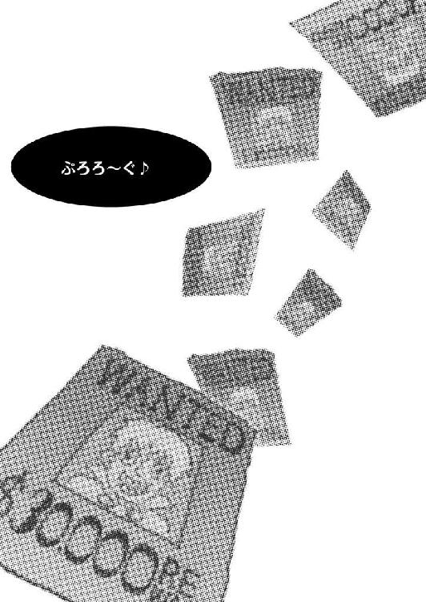

| 桜ノ杜ぶんこ 剣と魔法と学園モノ。Lv.2 気がつけば逃亡者！？ | |
| 佐山操 | |
| (2012) | |
桜ノ杜ぶんこ
剣と魔法と学園モノ。Lv.２
気がつけば逃亡者!?
佐山 操


あまりにも職業が多すぎて、パーティを組んでいてもメンバーで対応しきれないことが多すぎる！
そんな冒険者組合やら冒険者たちからの苦情が相次ぎ、国は大量の入学者が出るこの時期に、冒険者法の一部を改定することとなった。
主な改定はふたつ。
ひとつは各職業の統合であり、これによって魔法職は大幅に統合されることになり、パーティを組むときは攻撃対象に対する魔法相性に悩む必要はなくなった反面、魔法職は覚えることが数倍に増えてしまい、ゲシュタルト崩壊する魔法使いやら、学校に出戻ってきて魔法の研究に没頭する者などが続出することとなった。
ふたつ目は兼職システムであり、少ないパーティ人数でも兼職さえしていれば補いあえるという単純な戦力強化法案である。これにより、少人数パーティでも問題を突破できるという利点や、定数六人パーティでも鍛え上げれば一二人パーティ並みという利点が期待されることとなった。しかし、当然のごとく、副業に自信のないヘタレなパーティが卒業した母校に出戻ってくるという事態を招いた。
結果として、冒険者養成学校も新入生の他に出戻り生の受け入れ枠を作ることとなり、新入生・在学生の他に出戻り生のクラスが急遽編成されて、冒険者バブルは今ココにという象徴のように、空前の学生数でほとんどの学校はごった返すこととなった。
当然、このように冒険者法が改定されれば、冒険者養成学校もその影響の直撃をモロにウケ、廃止された学科もあれば統合された学科もあり、入学したヴィントたちも少なからず影響を受けた......のかもしれない。
入学試験で類い希な称号──ドラゴン・スレイヤーの称号を得たヴィントたちには、その副賞として留学せずとも好みの学科に転科できる大事な物を受け取り、それぞれの目指す冒険者にふさわしい学科を選択できることとなった。
この副賞の恩恵を最も強く受けたのはミーナである。入学と同時に〝侍〟になれたのだから、彼女にとってこれほど嬉しいことはなかっただろう。
そんな嬉しいイベントが発生する数時間前に、ヴィントはゲシュタルト校長から校長室に呼び出しを受けていた。
「なんか、ご用だそうですが......。なにか？」
相変わらず暢気な彼の前途を危ぶみながら、ゲシュタルト校長はおもむろにヴィントに志望学科の変更を勧めた。
「キミが望んでいる学科はナイトだったね。しかし、私はヒーロー学科が相応しいと思うのだがどうかな？」
「ヒーロー学科......なんてなかったですよね？」
「我が校にはないね。しかし、プリシアナには存在しており、今回の副賞でキミは我が校にいながらにしてヒーロー学科に転科することができる」
「はぁ......」
ピンときていないヴィントの様子に、ゲシュタルト校長としては頭を抱えたい思いだった。
実は、ゲシュタルト校長がヴィントにヒーロー学科への転科を勧める理由は、ドラゴン・スレイヤーといえども彼の品格がナイト──つまり騎士として、まったくもって相応しくないという、とある貴族から横やりが入ったせいだった。
その〝とある〟貴族が何者なのか？ ということは、今回は読者様のご想像にお任せする。
品格という言葉を取り上げられると、正直、品格のカケラもないヴィントは不利になる。
しかし、入学試験でドラゴン・スレイヤーとなった少年を品格云々で入学取り消しとしたなら、この伝統あるドラッケン学園の評判はどうなるのか？
メンツを重視するあまり将来ある学生の入学を拒んだと噂されてしまうだろう。なによりも、そんな学生を放り出せば必ずプリシアナ学院かタカチホ義塾、あるいはモーディアル学園が特別入学枠を作ってでも確保に乗り出してくる。
そうなったら、ドラッケンは笑いものになってしまう。
『どうしても、ナイトには〝品格〟とやらが必要でしょうか？』
『当たり前ではないかな？ ナイトは我らが国王陛下や大貴族の前に立たなければならぬこともあるのぢゃぞ。品格のない者がそのような場所に登壇するなど、臭くて臭くて叶わぬわ』
『それでは、彼の入学を取り消せと？』
『適当な学科に放り込めばよかろう？』
『つまり、ナイト以外の適当な学科ならよろしいということですな？』
この時、キラリーンとゲシュタルト校長の目が光ったことを、〝とある〟貴族は気づいていなかった。
その結果が、ヴィントのナイト学科からヒーロー学科への転科だった。
ナイトがダメならドラゴン・スレイヤーの称号に相応しいヒーロー学科がいいでしょうと言うのが、校長の言い分だった。〝とある〟貴族が後で慌てふためいても後の祭りというヤツである。
「でも、オレの第一志望は仲間を守れるナイトってことなんで......」
と、お行儀悪く鼻をホジホジしながらしゃべるヴィントに、ゲシュタルト校長は心の中で叫んだ。
──その行儀の悪さからお前はナイトの資格を問われているのだ！
しかし、ゲシュタルト校長は前途ある若者を頭ごなしに叱るようなことはしない。
ゴホンと咳払いしてから、ゲシュタルト校長は話を続けた。
「今回の冒険者法改正によって、ナイトよりもヒーローの方が、より仲間を守れることになったのだよ」
ちなみに、法改正前からヒーローの方が仲間を守る力に優れていたことは言うまでもなく、これは校長の口車にすぎない。
「そうなんですか......」
「ふむ。だからだね」
「じゃあ、ヒーロー学科でいいです」
こうして、いとも簡単にヴィントの説得は完了し、彼には高価なヒーロー学科への転科が可能となる大事な物が与えられた。
次代を担うべきヒーロー学生の誕生！
そんなものをゲシュタルト校長は考えていたのかもしれない......。
もっとも、『じゃあ、それでいいです』的な言い方に引っかかりがあったことは事実だが、とにかくヴィントはドラッケン学園初の最初からヒーロー学科生という立場での入学が決定したのだった。
ヒーロー学科単科習得を考えて、上手くやっていくのかと思いきや、入学事務局で各学科の案内を見ていたヴィントは、なにを思ったか遠距離戦も必要だろうと言いだし、ガンナー学科まで平行して受講する道を選んだのである。
確かに、上手く両方の学科を習得出来れば、遠近両方とも戦える無敵の冒険者の出来上がりにも思えた。
あくまでも、思えただけだったのだが......。
とにかく、こうして学校側の期待を一身に背負って入学したヴィント。
しかし──
『なぜ、ヤツはドラゴン・スレイヤーになれたんだ？』
『ヤツは入試で人生全部の運を使い果たしちまったんだよ』
『奴の人生はこれから下り坂さ』
『本当にもうオワコンな奴だよ』
ヴィントが入学してみると、アレよと言う間にヴィントは全学生たちからそうヒソヒソと、言いたい放題に囁かれるザンネンな新入生になってしまっていた。
ドラッケン学園創設以来の天才冒険者になるのではないか？ そう期待されて入学したはずのヴィントだったが、授業開始からわずか二週間ほどでその期待は地獄の底まで落ち込んで、さらに突き抜けきっていた。
なぜなら、ヴィントの学校での成績は中の中。体育の成績こそ上の下だが、他は本当に人並みもいいところで、さらに西も東も分からない謎の方向音痴という超スキルの持ち主だった。しかし、クラスメートがムカつくことは、冒険に出た時は本能で分かるらしく、現地練習などの際には異様な方向感覚を発揮して上位入賞などの成績を収めている事だ。
だが、成績を総合すると、パーティのまとめ役としてそれなりに機能できるものの、単独の冒険者として考えると、やっぱり期待ハズレもいいところのザンネンな学生だった。
「余は、あんなヤツを一度でもライバルと思った自分が情けない！」
入学試験で入学枠を競ったロザリンドからもそう叫ばれる始末であり、密かにヴィントに対してズレた恋心を持つアルベルトなど、ヒマさえあればヴィントの心配をしている有様だった。
あの入学試験で発揮したドラゴン・スレイヤーの才能はただの偶然だったのか？
あるいは噂通り一生分の奇跡を入学試験で使い果たしたのか？
誰からもガッカリな視線を向けられるヴィントだったが、当の本人はまったくそんな噂も視線も気にした様子も見せず、エルトたちパーティ・メンバーの心配をよそに、今日も鼻くそをほじりながらキャンパスの芝生にゴロンと転がってボケッとしていた。
「だって俺、実戦派だから」
それが、ヴィントの言い分だった──
＃01 冒険者酒場
「ちょっと聞いてるの!?」
フワアアア......とアクビをした俺の後頭部を小突いて、エルトが説教を続けてくれた。まあ、俺のためを思って言ってくれてるらしいので、一応、続けてくれた......と言ってやることにしておくが、ぶっちゃけるとその言葉は俺の耳を右から左に素通りしていた。
「聞いてる聞いてる。聞いてますよぉ」
例によってエルトの小言は俺の模擬実習での成績の悪さについてだった。
世の中に存在するという究極のモンスターである教育ママって言うのは、きっとこういうエルトのようなヤツのことを言うんだろうな。
なんつーか......模擬実習は、一言で言うとツマンネーんだ。
マジメにやった方がいいことは頭では分かっているんだが、なぜかしらけちまう。しらけちまうとどうにも身体が上手く動かなくなって、もうどうでもよくなっちまう。
医務室のドクターに言わせると、五月病という世の中の誰もが一度はかかる病気らしいんだが、だからと言って学校を休めるわけでもなく、コレといった特効薬はないらしい。
えっらそーなこと言っておきながら、ヤブじゃねえか......。
まぁ、入試の時に使ったような自動生成ダンジョンを使ってくれるなら、その刺激でこっちも本気を出せて、そんな五月病とか言うものを自力で蹴散らせるんだが、たいていの模擬実習に登場するモンスターはエキストラで演技もヘタクソときてる。
殺気のカケラも感じられないような顔つきと声で、ガオーなんてやられてみろよ。もう、こっちの真剣味も風化して失せちまうってもんだろ。
おまけにパスパスなクッション付きの模造刀で切ると、
「やーらーれーたーっ！」
とか言って倒れるんだぜ？
こんなんで本当に冒険者になれるのか？ なんて考え込んじまうってもんだ。
そんなもんだから、ここ、ドラッケン学園での俺の成績は人並み以下だった。
ついでに言うと、なぜか模擬実習時には俺様の天才的な方向感覚とかが働かない。
その辺から察するに、ヤッパリ俺様は実戦派ってことだな。
そんなもんだから一通りの模擬実習過程が終了し、インターンシップ活動が開始されることに俺としてはワクワクしていたんだが......。
ああ、インターンシップ活動ってのは、一般市民から学園生たちが冒険者を必要とする仕事を引き受ける活動であり、コイツをいくつもクリアしていくことで単位がもらえるシステムだ。
まぁ、学生という半人前の身分だから、一般の冒険者のように大金の報酬はもらえない。ただ、格安価格なので、結構、需要があるとは聞いていたんだが......。
図書館の掲示板に作られたリクエストボードには、ズラリと依頼が書かれたカードが並んでいた。
しかし──
それなりにやる気が出そうな依頼は、二年生以上とか、依頼クリア数二十回以上とかで、俺らみてえな模擬実習クリアしたてのペーペー新入生は庭の草むしりだの、赤ん坊の子守りだのというチンケな依頼ばかりときてる。
リアルな冒険が待ってると意気込んでいた俺とシュテルとミーナの士気が、どーしよーもなくメタメタに下がったことは言うまでもない。
で、リクエストボードを後にして、学生たちがよくたむろしている『冒険者の酒場』という名前の学生食堂のテーブルに突っ伏してグダグダすることになった。
その様子を見た我がパーティの〝影の支配者〟ことエルトが、頭に角を生やして小言モードに入り、今に至っているってわけだ。
この状況、よく分かってくれたか？
まあ、俺にかんしては『使い切った英雄』だの『すべての運を入試で使い切った男』だのと言いたい放題言われてるんで、エルトが心配してくれるのはありがたいんだが......。
ちっさいことからコツコツと......というのは、まったくもってドラゴン・スレイヤーの称号持ちには相応しくないのではと思うわけだ。まぁ、入試用ドラゴンなんで、プチ・ドラゴン・スレイヤーとかって言われているけどさ......。
「ちょっと聞いてるの!?」
何度目かのエルトの台詞だった......。
「えーあー......聞いてます」
たぶん。と心の中でそう付け加えたが、その三文字は絶対に口に出しちゃいけない呪文だ。言えば、あと一時間は小言が長くなる。
それにしてもエルトの説教はとどまることを知らず、永遠に続きそうな気配すらあった。すでにシュテルとミーナは撃沈してスヤスヤと寝息を立てていたが、パーティ・リーダーである手前、俺は居眠りすることが許されなかった。
よって、説教を聞き流しながら他のことに注意を払って気を紛らわせることにする。
まぁ、インターン解禁日というせいもあるのだろう。ここ、学食『冒険者の酒場』は、学生以外に一般市民の客でも賑わいを見せていた。
普段も一般に解放されていてドラッケン学園のシェフの腕前を披露してるんだが、今日はそんな普段の客入りを遥かに上回る満員御礼ってやつだ。
図書館の掲示板と同じものがここにも設けられており、一般からの依頼者がここに依頼を張り出すと、図書館の掲示板にも張り出される仕組みになっているらしい。
こういうものを見ると、本気で魔法って偉大だと思う。
まぁ、俺は使えないがな。
つまり、今、ここで増えている一般人のお客さんってやつは、インターン解禁でさっそくリクエスト・ボードに依頼を張りに来た人たち。そして、品定めに来ているヤツだろう。
学園の外に流れている学生たちの噂が果たして本当なのか？ それを確かめに来ているらしき連中と思しき姿がソコココに見られた。
まぁ、連中の半分は俺たちの品定めなんだろうがな。
世間様にどう伝えられているのかは断片的にしか聞いていないが、入試でドラゴン・スレイヤーになった前代未聞の冒険者様だぜ？ 品定めもしたくなるってもんだろう。
まぁ、そんなえらそうな肩書きを持っていても、エルフの小娘に説教食らってるリーダーの姿を見られたら幻滅されること千パーセントだろうけどなぁ。
しかし、品定めするだけで全然声をかけてこねーってのも、なんかムカつくもんがあるよな。自分は冒険者評論家様でござ～いとでも思ってんのか？
「で、ヴィントはどうしたいの？」
「え？ あ、ああ......そうだな......」
どうやら俺が品定めしてそうなヤツらに気を取られている間に説教タイムが終了して、今後の行動方針を決定するシンキング・タイムが来たらしい。
問題は、どうすればエルトの説教をリピートしないで済むよ？
① エルトの指摘に従いクソつまんねー草むしりのクエストとかを消化して、でっかいクエストを受けられるようになるまでチマチマ過ごす。
② とりあえずテキトーなダンジョンに潜り込んででっかいお宝をゲットする。
③ 理想的な依頼が来るまでここで堪え忍ぶ。
と、まぁ......こんな選択肢が出てくるわけなんだが、エルト的には①はアリかもしれないが俺的にはナシという選択肢だ。というか、シュテル的にもミーナ的にもリープ的にもナシだと思う。つまり、多数決でナシだ！
何度も言っているがチマチマと何かをするのは性に合わないしよ。だいたい、隣村のクロマティさんの家の巨大食虫植物園の草むしりをするとかなんて冒険と言えるか？ 言えねえだろ？
俺たちは冒険者になりたいんであって、別に便利屋を開業してえわけじゃねえんだ。
というわけで、①はパス。
で、②なんだがこれもパスだ。
アテもない洞窟なんかに潜っても無駄な時間を過ごすだけの可能性が高い上に、余計なリスクが増える可能性だってある。
そうなってくると、もう選択の余地があるのは③ってことになるな。
「じゃあ、理想的な依頼が来るまでここで待つということで......」
「はいぃぃぃぃぃぃぃっ!?」
くっ！ エルトの威圧感が増しやがった。
俺が正直にどうしたいか言うなり、エルトの驚異的なオーラが増幅して、寝ていたシュテルやミーナまで叩き起こして怯えさせやがる。
「ヴィ、ヴィント......あんた、なにしたんだよ!?」
ゆ～らゆ～ら......と恐怖のオーラがエルトの背後で燃え上がり、威圧してきやがる！
「お、俺としてはだな......一発ドカーンと当たる冒険者らしい依頼をだな」
「ペーペーのあたしらにそんなものがくると、本ッ気であんたは思っているわけ？ 信じているわけ？ 確信しているわけ？」
「いやそんな確信なんか......ないなぁ......だがな」
「だが......なによ？」
「期待はしている！」
ビシッと決まった。
ズベシッ！
その直後、俺の身体はムーンサルトのごとく宙を舞って床に顔面から突っ込んだ。
「お、おまいには冗談が通じないのか!?」
「冗談は寝てからいいなさいって昔の人がいっていなかった？」
「つうかな、冒険者らしい冒険の依頼を待っていちゃいけねえーのかよ！」
「そういう冒険に早く出たいのなら、さっさとリクエストボードから依頼を引っ張って来て受けられるようになんなさいよ！」
つまり、エルトは①の選択をあくまでも俺に押しつけたいわけだ。
しかし──
「あー......なんつーの？ それ、今すぐやらなきゃダメ？」
「な、なんでそんなこと言うわけ？」
「なんつーか......この、俺様のセンシティブでグラスハートな感じの心が......もう、ハートブレイクなわけよ」
「はいぃぃ？」
エルトは眉間にシワを寄せてズイッと頭を突き出してきやがった。
「ドコのどなたが、センシティブでグラスハートな感じで、ハートブレイクしているわけなのかしら？」
「いや、だからな......。俺としては......」
なんとか上手い言い訳を探して、エルトの鬼神猛怒を解こうとしたその時だった、恰幅がいいんだがドコか胡散臭い雰囲気を持つヒューマンの中年男が俺の脇にズズイッと立ちやがった。
「な、なんだよ、あんたは？」
男は無言で俺、エルト、そしてパーティメンバー全員の顔を確認するように見回してから、再び俺に顔を向けてきた。
そして、にこやかな笑みを満面に浮かべやがった。
なんかキモイぞ！ 踏まれてつぶれたカエルが笑ったら、こんなキモイ顔になるかもしれない。
「ドラゴン・スレイヤーのヴィント様のパーティご一行様だすかな？」
こいつ、冒険者評論家様のクチか？
それともなにか依頼を持ち込んできたクチか？
俺は上から下までもう一度こいつの姿を見てから頷いた。
「そ、そうだけど......。あんたは？」
「おおっ、こんれはすんつれいすますだ。ワッシは高名なる占い師アンネ・ザッカバーグ様のマネージャーをすとります、オンガワと申すます」
物凄いスノードロップ弁の恰幅のいい男──オンガワ氏は、大仰な動作で自分の後ろにいるボーッとしている顔をしたエルフの女の子を紹介してきた。
「どうも」
俺がそう挨拶しても、そのアンネ・雑貨ーバーグというエルフの女の子はボケーッと突っ立ったままで返事ひとつ返してこない。
「オンガワさん......ね。で、俺たちになんの用で？」
ぜひとも占いさせてくれとかサイン書いてくれとかなら丁重にお断り。依頼なら内容次第ってトコかね。自分の代わりに一日マネージャーをしてくれとかなら、速攻蹴り出してやろう。
そんな俺の心中を察したとかということはないのだろうが、オンガワ氏はニマッと笑った。
「お仕事をお願いすたいのだすよ。ドラゴン・スレイヤーのヴィント様の腕を見込んでだすねぇ。アンネ様のご旅行の護衛をお願いすたいのだす」
「マジかッ!?」
「ウソやろ！」
「脳みそ膿んでんじゃねえのか!?」
敢えて説明するなら、俺の言葉に続いたのはミーナとシュテルだった。
エルトにかんしちゃ呆然としていたし、テュルキスは手に入れたばかりの茸大全に夢中。リープは女給さんが持ってきた〝新作タコ鯛焼き〟とかを夢中でほおばっていた。
「な、なんで......ワッシの脳が膿んでるだすか？」
「え......あー......。ほ、ホラ。俺たちゃまだまだ見習いもいいところだからよ」
「でんもぅ、ドラゴン・スレイヤーのヴィント様だすよなぁ？」
「ま、まぁなぁ......」
こう、外部の人間にドラゴン・スレイヤーって連呼されるのは、なんとも言えず心地よいものがあるな。
ちなみに俺がザンネンなドラゴン・スレイヤーだってことは学外には漏れていない。いわばドラッケン学園全体の死守すべき秘密となっており、全学生に対する箝口令となっていた。俺がザンネンだと、学校の名誉にも傷がつくらしい......。
くそっ。俺はただの実戦派の冒険者なだけだっての。
だがまぁそういう事情があって、この依頼人オンガワ氏は、俺たちを高名で優秀な学生冒険者と勘違いして依頼してきたってことになる。
もちろん、勘違いしたのはオンガワ氏の責任で俺たちにゃなーんにも悪いことはねえ。
むしろ、この依頼を受ければ面倒なクロマティさん家の草むしりクエストとかをせずとも、しっかりと単位が稼げてレベルも上げられるって寸法だな。
「護衛って、ココからドコまででしょう？」
俺がステキな未来予想図を脳内で展開している間に、エルトがズズイッと俺とオンガワ氏の間に割って入って来て質問しやがった。
「ここからローズガーデンにある事務所まで護衛すて欲すいのだすよぅ」
「ローズガーデン......遠いな......」
なんでも、この占い師アンネさんとやらは、ある占いをするためにそこからこの街に住むとある貴族の所まで呼び出されたらしい。無論、その占いの内容は守秘義務があるから言えないという。
でもって、その占いの結果、トランス状態が続いているために見た目はボーッとした脱魂状態、あるいは入神状態ってやつになっているということだった。
この人が占いをした直後はこうなることが普通で、そのためにマネージャーや護衛が必要なのだという。
「ふむ......。最初の冒険としちゃ、悪くねえな」
「もつろん、ギャラは弾ませてもらうだすよ」
「マジで......」
とりあえず草むしりよりは三百倍くらいマシな依頼だ。
受けねえ手はねえってもんだろ？
「頼もすぃリーダーに、屈強にすて華麗な二人の前衛。そして知的な後衛のパーティと噂されているのだすから、ギャラも弾むもんだすよ」
「てへへへ......そっかな......」
屈強にして華麗なんておだてられて、ミーナもシュテルも照れてやがる。
これでもう、受けることにまず反対はねえって感じだな。この二人が反対しねえのなら、まず問題はねえだろ。
しかし、ワクテカしながら二つ返事で受けようとした俺の顔を、ベチャッとエルトが押さえつけやがった。
「私たちは一年生なんで、最初の冒険として長期護衛という依頼をお引き受けしていいのか分からないんですよ。一応、先生に確認をしてからお返事をさせていただくということで、よろしいでしょうか？」
「ええ、構わねいだすよ。ただ、返事は明日にもらえるだすかね？」
「分かりました。明日までに、お返事させていただきます」
「すったら、よろすくお願ぇすますだす。ああ、ここの飲み代は、ワッシが払っておくだすよ」
そう気前よく伝票を取ると、オンガワ氏は深々と一礼してアンネ嬢を連れて店を出て行った。
「なんで即答しねえんだ？」
「あんたバカ？ こんな難しそうな依頼をそのまま受けて、後で先生に怒られたらどうすんのよ！」
「え？」
これって難しそうなクエストか？
護衛ってことは、ただ送っていけばいいだけの話だろ？ そりゃ、結構遠いわけで道中に狼だのなんだのが出るかもしれないが、ダンジョンに潜るよりも楽な仕事だろ？
と、俺が考えていることがエルトには筒抜けになっているのか、エルトは頭痛そうにおでこを押さえていた。
「この占い師さんを抹殺しようとしている人がいるかもしんないでしょ！」
「えー。でもよぅ、そんなに有名な人か？」
「少なくとも、自称でも高名って言ってたでしょ。先生に聞く価値はあるわよ」
そうなのか......。
なんか、面倒くせえなぁ......。
「ホラ、さっさと学校に戻るわよ！」
「え？ なんで？」
「今の依頼の話の確認を取るためでしょ！」
「え？ いや、でも......」
「はい、お待たせ！ ローストチキンのハーブソースがけと、パイナップルピザね」
「りょ、料理が来たところだし......」
「じゃあ、シュテルとミーナたちでその料理は片付けておいてね。あたしは、ヴィントを連れて職員室に行ってくるから！」
「おうっ、任せろ！」
「ウチらに任せときっ！」
「えええええええええええええっ！」
「さあ、行くわよ！」
俺の声にならない悲鳴を軽く聞き流して、エルトは俺の襟首をつかんでズリズリと引きずりながら店を出た。
せめて、一口食べたかった......。
＃02 職員室
「あなたたちに直接の依頼？」
職員室を訪ねて依頼の説明をした俺たちに、カーチャせんせは驚きを隠せない声で聞き返してきた。
ショックだ。大人は俺たちを信用していないらしい。
「別に意外というわけじゃないんだけど......」
入試でドラゴン・スレイヤーとなったパーティがいるという噂は、この学園都市の街に流れていたし、その後の俺のザンネンさ加減については流れていないわけだから、こうした依頼がきてもおかしくはないということだが......。
「受けちゃダメですか？」
「そ、そうねぇ......」
カーチャせんせとシュピール先生は顔をつきあわせるようにしながら、世界の情報が手に取るように分かるという、リンゴ印のマジックパネルの画面をいじり回していた。
「確かに、ローズガーデンにはザッカバーグさんという高名な占い師さんがいらっしゃるわね......」
「そんなに有名なんですか？」
「色々と貴族の皆さんにアドバイスとか与えている人らしいわね......。占いの的中率も高くて、そのために誘拐されかかったこともあるみたいね」
「誘拐......ですか？」
カーチャせんせは俺の質問に頷いた。
確かに的中率の高い占い師を誘拐して閉じ込め、自分のためだけに占いをさせ続ければ莫大な利益を得ることもできるわけだ。
「つまり、変な依頼じゃないと？」
「まぁ......そうなるわね」
うむ。つまり、この依頼主のウラは取れたということだな。
やはり俺様を見込んで依頼してきたってヤツだろうな。そうだろそうだろ！
これこそ、冒険者らしい第一歩ってヤツだ。
「しかし、解せぬな......」
「は？」
いきなり脇からドレスデン教官が口を挟んできた。
「直接学生に依頼をしてはいけないというルールはない。しかし、学校側になにひとつ断りを入れてこないということが、吾輩には解せぬ」
「そ、そうなんですか......」
なんだよ。そのドレスデン教官の気むずかしげな顔はぁ......。ものすごーく不安になるじゃねえか。
そんな不安を植え付けられた俺の肩に手を置いて、ドレスデン教官は叫んだ。
「だが、吾輩は受けるなとは言わん。むしろ、率先してその依頼を引き受け、苦労を買ってでもしろと言おう！」
「教官！」
「ドレスデン先生！ ムチャ言わないでください！」
感動する俺。そして驚きを隠せないエルト。さらに、頭を抱える二人のセンセ。
しかし、感動したはいいが、先ほどドレスデン教官に植え付けられた不安は消えていない。
「教官。教官なら、どうされますか？」
「無論、吾輩なら依頼を引き受けよう！」
「やっぱり！」
「かつて、こんな格言を残した冒険者がおる」
格言？ いったいどんな......。
「罠は進んで踏みつぶせ！」
「..................」
本当にドレスデン教官の言葉を信じてもいいんだろうか？
若干どころではない不安が俺の心にのしかかった。
でもまぁ、クロマティさん家の草むしりに比べれば、冒険者らしい仕事だよな。
まぁ、後で知ったことだけど、クロマティさん家の草むしりは激しく冒険者らしい仕事だったらしい。身の丈三メートルを超える超巨大食虫植物に喰われそうになりながら、周囲の雑草を抜くというお仕事。過去に喰われたヤツもいるって噂を聞いて、俺は安易に引き受けないでよかったって思ったね。
＃03 ドラッケン学園正門前
あれから三日が過ぎた。
もちろん、あの後パーティ全員で集まって色々と話し合いをした結果、とにかくムチャをしないように気持ち抑えながら護衛に乗り出すのなら問題ないだろうという結論に達し、多数決の結果五対一で、この依頼を引き受けることとなった。
無論、反対一はエルトだ。
テュルキスは反対するだろうとエルトは思っていたらしいが、スノードロップの雪原の針葉樹林地帯でしか採れない珍しいキノコがあるとかで真っ先に賛成票を投じていた。
というわけで翌日には結論を聞きにきたオンガワ氏に依頼を受けることを申し出た。その際に一緒についてきたエルトが、食料代などはすべてオンガワ氏持ちであることなど細かいやりとりをしたのは言うまでもない。
こうして考えるとエルトって偉いよなぁ......。
俺の代わりに細かい金勘定とかしてくれるんだからよ。
まぁ、パーティのサブ･リーダーという立場だから、仕方ねえ役割なんかね。
で、急ぎで出発したいというオンガワ氏とアンネ嬢の要望を聞いて、俺たちは学校に提出する外部実習届に初めて必要事項を記入してから、翌々日の今日、パン屋と牛乳配達屋と新聞屋くらいしか目覚めていないような時間帯に正門前に集合し、出発の時間を待っていた。
かなりの長距離になるので、旅のほとんどはオンガワ氏が用意した馬車に乗っていくこととなる。前の日、リープは馬車の旅だと大はしゃぎしていたが、いざ、この出発時間になっても目覚めず、俺の背中でグーピーと寝息を立てている始末だった。
まぁ、いいんだけどよ。
「暗いな......」
「夜明け前だからな」
約束の時間に遅れること一〇分。意外と時間にうるさいシュテルが槍を担ぎながら、キョロキョロと辺りを見回していた。しかし、石畳の道路に時折出てくる人影は、さっきも言った通り、新聞屋か牛乳配達屋、あるいは忙しく働くパン屋のいずれかだった。
「遅いな......」
「スノードロップ人だからな......」
同じヒューマンの田舎モノでも、スノードロップに住んでいるヒューマンは時間にルーズだという噂だった。
一年の大半を雪に覆われて過ごすわけで、細かい時間を気にしていたらやってられないらしい。吹雪になれば遅れて当然、ドカ雪が降れば足止めをくらうからよ。
まぁ、そんな環境に住んでいるから、自然と時間にはルーズになってくるというのも仕方ない話だ。
そんなヤツにマネージャーなんか務まるのかという疑問が浮かんでくるんだが......。まぁ、占い師って時間に正確さを必要とするワケでもなさそうだから、なんとかなるんだろうな......。
そんなことを言っている間に、ガラガラと石畳の上を車輪が走る音が響いてきた。
朝靄の中に現れたのは、大きなドーム状の幌つきの荷馬車。幌でも屋根と壁がついていてくれるのは、雨風をしのぐ上では重要なポイントだ。
結構こういう荷馬車は高いんだぜ？
御者台には、手綱を握るオンガワ氏の姿が見えた。
どうやら、オンガワ氏が御者をするらしい。
「いんやー、お待たせすますた。ささっ、乗ってくらだすよぅ」
荷台では毛布にくるまったアンネ嬢が寝息を立てていた。
相変わらず、トランス状態というものらしい......。
俺たちは彼女を起こさないように注意しながら、御者台と反対側の荷台の後ろから乗り込んだ。御者台の隣には、くじ引きで勝ったミーナが陣取ることになっていた。
いざと言う時、周りを囲まれたら前からはミーナが。そして後ろからは俺とシュテルが飛び出す算段になっていた。
後衛は荷馬車の中から、あるいはそこから降りて前衛をカバーすることが、今回の戦術フォーメーションになっていた。
「あんたさ、学内実習の時と違って、生き生きしてない？」
「そかー？ まぁ、俺は実戦派だからなぁ」
生き生きもしようってもんだろう。
あんな演技のヘタな情けない実習怪物どもが相手じゃないんだしよ。
仮に怪物どもの襲撃を受けないと分かっていても、ああいう演技のヘタな奴らと出くわさないと分かっているだけでやる気はわいてくるってもんだ。
「じゃあ、出発すてもいいだすかね？」
俺たちは手分けしてオンガワ氏が用意してくれた食料品などを確認してから、彼の言葉
に頷いた。
「オッケーっす！ じゃあ、さっさと行きましょう！」
こうして、俺たちは初めて依頼を受けて、学外での冒険に乗り出した。
＃04 野原の街道
まぁ、最初から分かっちゃいたけどさ......。
街道っていうのは安全な場所に作られるわけで、安全な場所っていうのは怪物どもが比較的襲ってこない場所ということになる。
つまり、街道を進んでいる限りは中々トラブルには出くわさないわけだ。
トラブルに出くわさない限り俺たちに仕事はないわけで、だからと言って昼寝をしていてもいいというわけでもない。もしもなにかがあったら、すぐに対応できるようにしておかないといけないわけだしな......。
街を出て一日過ぎ、二日も過ぎるともうこの変わらぬ景色に飽きてくる。
自分で歩かない分、余計にキツイんだよな。
「あー......ヒマ！ ヒマすぎて死にそう......」
大きく伸びをしたシュテルがそうボヤいたが、それには激しく同意できた。
最初のウチは、馬車に揺られて進む旅行にワクワクしていたもんだが、一時間も進めば大して風景の変わらない旅行となり、楽しむ所なんかなくなってくる。
街道の幅が広ければ広いだけ、そこは交通量もそれなりにあって、より安全地帯なわけで、正直、護衛なんかいるのか？ なんて気にもなってくる。
まぁ、それだけ安全な街道で襲ってくるということは、それなりに悪辣なヤツらなんだよなぁ......。
盗賊とか山賊とか追いはぎってヤツだな。
怪物や野生の獣が出てこない分、人間の悪者が出てくるってやつだ。
ミーナと俺が交代して、俺が御者台の隣に座った時、オンガワ氏──ああ、もう丁寧な言い方は面倒臭えなぁ......。
オンガワのおっさんがクチを開いた。
「山賊も怖いのだすが、もっと怖いのは狂信的なファンですてなぁ」
「はぁ？ 狂信的なファン？」
占い師にファンなんかいるのか？
そう思ったものの、監禁して占いをさせようとするようなヤツもファンと言えるわけで、恐らくはそういう人のことを指してんだろうなぁ......と俺は解釈した。
「昔からアンネ様につきまとうドワーフのストーカーがおりますてね」
「は？ ドワーフ？」
アンネ嬢──つまり、エルフの姉ちゃんにドワーフのストーカーだと？
そりゃ、ストーカーって言うよりも暗殺者じゃねえのか？
そもそも、エルフとドワーフが仲が悪いというのは昔から言われていることだ。
どこでも穴を掘りたがるドワーフが自然破壊をしまくるから呪ってやれというのがエルフの主張であり、エルフは自然保護だのカッコつけたことを言いまくる胡散臭え奴らだというのがドワーフの主張だ（あくまでも、ヴィントの主観です）。
サワガニ・サイズの脳みそしかないドワーフだ。思い詰めたら考えることは単純になるって言うだろ。
「ドワーフだすなぁ。だから、皆さんにこうして護衛をお願いすているんだすよぉ」
「ドワーフは......一人？」
「一人だす」
それをもっと早く言って欲しかった。
一人で立ち向かってくるなんて、よほど腕に自信があるかよほどのバカに決まってる。
そう、例えるなら、そこの野原でこっちに向かってくるドワーフのように。
「ん？ ドワーフ？」
今俺たちが乗っている馬車は、右側が森、左側が野原になっている街道を進んでいた。野原はそれなりの斜面になっており、見通しはかなりいい。
その見通しのいい野原を、この馬車に向かって一目散に駆け上がってくる身の丈くらいのでっかい斧を持ったドワーフがいた。
「ドワーフって......アレのこと？」
「え？ おおおっ！ まさにそうだす！」
「うらああああああああああああああああああっ！ その方を、わっ、たっ、せええええええええええええっ！」
確かに、狂信的なファンらしい......。
そして、ドワーフらしく脳みそがない攻撃方法だな（あくまでもヴィントの主観であり、決して一般的なドワーフの評価ではありません）。
「エルト」
「なに？」
「左の野原を駆け上がってくるドワーフがいるんで、適当に撃っちゃって」
「撃っちゃってって......いいの？」
「お願いすます！ あれはすつこいストーカーなんだすよぉ！」
「なら遠慮なく......」
エルトは立ち上がり、荷台から半身を出すと呪文の詠唱をはじめた。
詠唱と共に手をクルクルと動かすと、それに合わせて小さな火の玉が空中を回りはじめた。そして、エルトが迫ってくるドワーフを指さすと、その火の玉はドワーフに向かって高速で突進した。
ちゅどおおおおおおおおおおおおおおおおおおおんっ！
火の玉はドワーフにぶつかるや、激しい爆音とともに土煙をまき上げて爆発した。
やたら派手な爆発だったんだが......こんな魔法、エルトは持っていたか？
「あれ？」
「どうかしたか？」
「なんだか......クリティカルしちゃったみたいだけど......」
「はぁ？」
激しい勢いで爆発した火球の爆風で吹っ飛ばされたドワーフが、ゴロゴロと坂道を転がり落ちていくのが見えた。
「まぁ、いいんじゃね？ 死んでないようだから、さっさと行こうぜ！ オンガワさん、スピードあげて！」
「分かっただすよぉ」
やや怯え気味の返事をしながらオンガワのおっさんがピシャリと馬の背に手綱を当てると、馬車の速度はみるみる上がって、爆発地点は瞬く間に遠のいていった。
だけどまぁ、のんびりした旅もコレまでってやつだな。
ストーカーがいるってことを聞いて、俺たちはダレダレになっていた気持ちを引き締めて周囲に目を配るようにした。
それでようやく気づいたことがある。
「大将ちょっと来てや！ リープが呼んでる！」
御者台から振り返ると、幌の壁に設けられた空気抜きの隙間から脇の森をリープとミーナが覗き見ていた。
「どうかしたか？」
「あのね、誰かが森の中を走っているの☆」
「なんだと？」
リープに指摘され、ミーナの指さす方向を見ると確かに不自然に木々が揺れている。それは、誰かがこの馬車と併走して森の中を走っていることを意味している。
「どれくらい前に気づいた？」
リープは少しの間考え込んで、おもむろに携帯用の保温ポーチを開いた。
「鯛焼き三個分前だから、エルトが魔法を撃った時からなの☆」
つまり、あのドワーフを撃退した時か。
「テュルキス、そっち側に......」
「こちら側に問題はありません」
状況を読んでいたのか、先手を打って反対側の幌の隙間から野原を監視していたテュルキスが返事をしてきた。
「ドワーフは撃退できたってことか？」
「あたしの魔法が直撃したと思うから、かなりのダメージは与えたと思うけど......」
つまり、森の中を併走して走っているヤツらは、さっきのドワーフじゃない可能性が高いってことだな。
「ドワーフやバハムーンなら、もっとドタドタ走ってる印象があるよ！」
「シュテルの言う通りやなぁ。あの動きはヒューマンかディアボロスやろな。エルフやクラッズならもっと無駄な動きはせえへんし、フェアリーやセレスティア、ノームは木々を揺らす可能性は低いで」
そう説明されたものの、注意して見なければ確認できないくらいの木々の揺れしか出さずに俺たちを追跡できる技術には舌を巻くものがある。
「職業は？」
「盗賊か狩人やろな......」
「忍者にしちゃ、木立を揺らしすぎるもんなぁ」
前衛二人の意見に俺も同意できた。
問題は、なぜ併走しているか？ だ──
「疑問の余地はないよっ！ 先制するかい!?」
シュテルは舌なめずりをしながら、馬車からの攻撃用にオンガワのおっさんに用意させておいたジャベリンに手を伸ばした。
ちょっ、お前、それはただ単に、用意してもらった武器の試し投げがしたいだけだろ！
「相手が敵か分からないウチに攻撃すんな！ 世の中には専守防衛って四文字熟語があるだろ!?」
「ボク、そんな言葉知らんで」
「あたしも知らない」
高度な言葉を前衛二人に理解させることは、しょせんはムリな話か......。
「ヴィント。脇ばかり注意していないで、前の監視も忘れないでよね！」
エルトの指摘に俺はハッとした。
コレはオトリか？
俺たちの注意を脇にそらしておいて、正面から攻め込むという作戦なのかもしれない。
あるいは、その逆か？
逆なら不意打ちするためにせっかく隠れ潜みながらついて来ていたのに、ザンネンなことながらウチの優秀な盗賊が発見しちまったからそれができないことになる。まぁ、本人は見つかってることに気づいていないんだろうけどさ。
ならば、この場合の作戦はどうする？
「シュテル！ 荷台の前に来て前からの襲撃に備えてくれ。馬車を停めようするヤツには容赦なくそいつをブチかましてやれ」
「了解っ！」
シュテルは、この状況でもトランス状態から覚めることのないアンネを踏まないように注意しながらまたいで荷台の前の方にやってきた。
この数日間で理解したが、アンネはなにをしてもこの半分眠ったような状態から目覚めることはなさそうだった。
「ミーナはシュテルの先制に応じて突撃。俺も前方に来るかもしれない敵に備える。森からの攻撃に対してはリープが先制。その様子を見てエルトが魔法で、テュルキスは弓で攻撃。問題ないな？」
全員がしっかりと頷いたのを確認し、俺は背面の腰に下げたホルスターから銀玉鉄砲を抜いてスライドを引き、初弾を薬室に装填した。
引き金さえ引けば弾が出る銀玉鉄砲だけど、こうやって初弾を薬室に入れておくとより命中精度が高くなる。もっとも、安全装置なんてものがないから、ヘタすると暴発しちゃうんだけどな。
ガラガラと馬車の車輪の音が鳴り響く中、どれくらいの時間が過ぎただろう。
いきなり前方にビシッと太い綱が張られた！
その高さは馬の胸元くらい。到底避けられるはずもねえ。
結構な速度を出していた馬は綱に行動を阻まれ、そのまま馬車ごと急停車させられた。御者台に座っていた俺とオンガワのオッサンは、前につんのめるようにして馬車から転げ落ちた。運の悪いことに、その俺の頭の上にシュテルがお尻からズッシリと同じように転げ落ちてきやがった。
「ぐえええっ......」
嗚呼、柔らかいお尻の感触......なんてこんな時に思うわけねえだろ！
顔半分が、土に埋まって視界が半分になっちまったじゃねえか！
「ごめん、ヴィント！」
「いいってこ......ぐええええええっ！」
そう謝りつつもシュテルは俺の背中を足蹴にして横っ飛びに転がり出るや、前から襲いかかってきたヒューマンの戦士と思しき斧を持った男にジャベリンを投げつけた。
「シュテル！ 槍や！」
「サンキュッ！」
なんとか馬車の荷台に残っていたミーナは、足下に落ちていたシュテルの槍を彼女に向かって放り投げ、自分も刀を抜いて走り出した。
その直後、脇の森で火炎が上がり、同時に爆音が響く。
見ないでも分かる。指示していた通りにリープが弓矢で攻撃した後、エルトがそこに魔法をぶち込んだんだ。
みんなやるじゃねえか！
俺もこうしちゃいられねえ！
地面に半分めり込んだ顔をなんとか引っこ抜き、右半分がドロにまみれた顔でなんだか変な気分のまま俺は銀玉鉄砲を構えた。
前衛三、後衛二の一般的なパーティ構成よりも一人少ないパーティ。無論、もう一人は森の中を走っていたヤツだろう。
前方の戦闘人数は五人ってことだ。
まだシュテルもミーナも接近戦に入っていないから、銃撃しても巻き込む心配はない。
俺は対集団攻撃スキル『千鳥』を使い、前衛三人を攻撃した。
銀玉鉄砲なんてちっちゃいダメージの武器じゃ攻撃してもロクなダメージにはならないが、それだって多少はダメージが行く。事実、シュテルのジャベリンに腹を貫かれていた戦士はそのままぶっ倒れた。
いいぞ、あと二人だ！
俺は剣を抜いて二人に遅れる形で前衛戦闘に加わった。そして、即座に簡単な円陣を組むような形で周囲に死角を作らないように俺たちは身構えた。
目に見えているコイツら以外の敵が物陰に潜んでいないとも限らない。一見優位そうに見える今の状況だって、気を抜くわけにはいかないんだ。
そして結果から言うと、圧倒的に優位な形で俺たちは謎のパーティを撃退した。
前衛一人が倒れた段階で戦意が低くなったんだろう。後衛の奴らが倒れた戦士を引きずるようにして退却を始め、残った前衛二人も単に時間稼ぎをするにとどまり、頃合いを見て逃げていった。
シュテルとミーナも護衛という目的を忘れなかったようで深追いはせず、結果としては奴らを取り逃がすことになったけど、まぁそれも仕方ないことだった。
二人が目的を忘れて追いかけて行った隙を突かれて馬車を襲撃されたら、元も子もなくなっちまう。
「全員無事か？」
「無事よー！」
「オンガワさんもアンネさんも無事です」
「リープはケガしてないの☆」
後衛からはそんな声が聞こえ、やや突出していた前衛二人は周囲の様子を窺いつつ返事をするように手を挙げた。
「俺も無事だから問題ナシっと......」
問題は馬車だ......。
妙なトラップを仕掛けられたせいで、馬車を引いていた二頭の馬の片方が首の骨を折って死んじまっていた。
一頭でも馬車を引けないことはないが、当然、速度は遅くなっちまう。
あのドワーフが追ってきている可能性だってあるし、さらにさっきのパーティが逆襲してくる可能性も捨てられない。
「馬車は捨てるしかないか......」
食料などをまとめて生き残った馬の背中に乗せ、それ以外の荷物は最低限のものにして俺たちで分担して背負う。
そうやって身軽になって移動するしかないだろう。
元々、馬車の退屈な旅に飽きていたシュテルたちからは反対の声も上がらなかった。
問題はルートだ。
「前に進むとさっきのパーティに出くわすかもしれないしな......」
「リーダー。提案があります」
「採用を前提に話を聞くぜ」
元々どうしたらいいのか分からない俺は、よっぽどの内容でもない限りテュルキスの提案を受け入れるつもりだった。
「街道から外れた森の中を移動しましょう。馬車がないのなら、街道も森も大して変わらないと思います」
「森の中ね......」
確かに、原生林の中を走り回るのでもない限りは、森の中も街道も歩きなら大して変わらない気がした。
オマケに、森の中を通っていくのなら、追手から俺たちの足取りを隠せる可能性が十分にあった。さっきの様子から考えたら、あのパーティが俺たちの足取りをつかめるとは到底思えないし、あのバカデカイ斧を持ったドワーフもそれに同じに思えた。
「採用しよう。森の中を通って奴らの目をごまかそう」
なるべく足取りを隠すためにテュルキスが荷物にあったムシロで急造した馬ワラジを馬に履かせて足跡を消すようにしながら、森の中を進むことにした。
この馬ワラジってヤツはタカチホ義塾の周辺地域の文化らしくて、なんでも馬の蹄を護る効果の他に、足音の軽減や足跡がつきにくくなる効果があるらしい。
こんな草が生い茂った柔らかい土の上で足跡がつきにくいもクソもねえと思うんだが、まぁ、無いよりマシ。こんなもので見つかりづらくなる可能性があるなら、なんでも採用だよな。
なによりも、本当にこれで奴らの目から逃れられるなら問題ナシだ。
しかし、あのパーティは追いはぎか何かだったのかねぇ......。
「まぁ、なんにしても、これで奴らをまければいいんだけどな」
どうにも嫌な予感がするんだが、それがなんだか分からない。
とにかく、今はただイヤな予感というやつに振り回されるよりも、オンガワのオッサンとアンネ嬢を守ることが最優先だった。
「シュテルとミーナは先頭を頼む。中列がエルトとテュルキス。後列は俺とリープだ。くれぐれも無駄な戦いはするなよ」
「分かってるって、剣撃の音が敵を呼ぶからね」
分かっていてくれるならそれでいい。
俺は最後に後をつけられていないか確認してから、みんなに続いて森の中に分け入った。
＃01 ドラッケン学園図書館・掲示板前
ヴィントたちが森に潜んだ頃、図書館の大掲示板には様々な情報誌が掲載されはじめた。
その中でも情報誌『冒険者の友』が図書館の掲示板、そして学食の掲示板に張り出されるや、瞬く間にそこには学生たちの人集りが出来上がった。
『堕ちた学生英雄ヴィント、爆発的誘拐劇!!』
どこかのスポーツ新聞を思わせる見出しに釣られた学生たちは、最初は面白半分に。そして読み進めるうちに真剣になって記事の内容を追っていった。
だいたいの記事の内容は、ドラッケン学園の入学試験でドラゴン・スレイヤーとなって合格したヴィントをリーダーとするパーティが、ノイツェハイムでも有名な大商会ライデンシャフトの息女であるシュバーンの誘拐に荷担したというものだった。
その情報誌にはヴィントが最近、成績のことで悩んでいたという外部には極秘のはずの学園内情報までご丁寧に掲載されていたのである。
『誘拐犯ヴィントが犯罪に走るまで！ 英雄志願者の失墜と絶望のすべて』
そんなあおり文句で、入学試験から現在に至るまでの事細かな情報を掲載している情報誌まであった。
そういえば、数日前からヴィントに依頼をしたいから、彼のことを知りたいという謎のヒューマンがいたな、などと学生たちは思いだし、それはこの情報誌に掲載する記事を書くための調査だったのかと納得する者たちまでいた。
当然、この知らせは王都から学園にも伝えられていたが、ヴィントたちは何者かから依頼を受けたことを知っていたカーチャ先生たちは、彼が何者かにより罠にハメられたと弁明した。しかし、ヴィントたちが誘拐された女性と誘拐犯を護衛していたことは事実であり、未確認情報ながら、ライデンシャフト商会が独自に送り出した救出隊のパーティをヴィントたちが撃退したという情報まで流れていた。このことが王都側の発言を強いものとし、どれほどカーチャ先生がヴィントたちの弁護をしようとも騙されたという証拠が提出できないために彼を犯罪者としようする動きを抑えきれなかった。
このヴィントが犯罪に加担したという噂は瞬く間に学生たちの間に広まり、王都からは責任の追求と令嬢の保護のためにもヴィントを捕らえるよう学園に要求が突きつけられた。
当初は、いくらなんでもという半信半疑な見方が多かったが、堕ちた英雄の末路や期待に応えられなかった人間たちの末路が語られはじめると、ヤツも仕方なかったんだなどという方向に話が流れはじめた。
「学生犯罪者は、学生たちの手で捕らえるべきだ！」
そう真っ先に叫んだのは、お約束に漏れずヴィントをライバル視しているロザリンドその人だった。
──おのれヴィント。一瞬でも貴様をライバルと思った時が憎いぞ。こうなれば貴様を抹殺し、共に学園に通ったという歴史そのものもなかったことにしてやる。
そんな野望に魅入られたロザリンドは、実家の力も動員してあちこちに働きかけ、学生たちを動員しての『ヴィント追撃指令』を王都から学園に向けて下させた。これには、ヴィントをナイトとして相応しくないと入学拒絶を謀んだ貴族院の一部の働きも関与したらしかった。
犯罪者である同級生を正義のために、涙を呑んで敢えて斬る。悲劇と憂国の若き貴族ロザリンド。
そんな美しき未来予想図が、ロザリンドの胸中を甘酸っぱく染め上げたかもしれない。
だが、その輝かしい未来予想図は甘酸っぱい夢で終わった。
「わらわがいる学園から犯罪者が出て、父上からその追撃命令が下されたのであるなら、当然、その指揮はわらわが執るべきじゃ！」
そう、この学園には王国が抱える問題児とも陰口が囁かれる（おっと失礼）、キルシュトルテ姫がいた。
普段から言うことを聞かない学生は死刑などという不穏当な発言をしていたキルシュトルテが、これは好機とばかりに関与してきたからたまらない。
「さっさと死刑執行部隊を編成するのじゃ！」
「姫様！ 犯罪者とは言えども姫が勝手に死刑執行することはできません！」
クラティウスの言葉に不服そうな顔をキルシュトルテは見せたが、そんな物言いが許されるのは彼女しかいない。いや、ヴィントなら鼻くそほじりながらツッコミを入れたかもしれないが、一下級貴族でしかないロザリンドは、ただただ平伏してかしこまっているしかない。
「うにゅにゅ......なんじゃ、つまらん」
「キルシュトルテ姫殿下。発言をお許しいただいてもよろしいでしょうか？」
キルシュトルテの話を聞いていたロザリンドは意を決し、片膝をつき、あらん限りの勇気を振り絞って声を上げた。
「なんじゃ？ そちは夜会で何度か見かけたことがあるのじゃ。確か......ヴィンターナーゲルの跡取りよのう。よい、発言を許す。申してみよ！」
「はっ。臣、ロザリンドが思いますに、このような下賤な輩の討...」
「却下なのじゃ！」
落雷のように大音声で却下と宣言したキルシュトルテに、ロザリンドはそれ以上言葉を続けることができなかった。
「ロザリンドの忠義な申し出は頭の片隅にでも置いておくぞ。わらわがパーティを率いて犯罪者のヴィントが率いるパーティの討伐にあたるのじゃ！ 各自準備をするのじゃ！」
キルシュトルテの大量パーティはドラッケン学園の名物と言うほどに有名であり、本来なら三、四パーティくめるほどの人数で一パーティを構成し物量で攻め落とすのである。
さすがのヴィントでも、この物量の前には為すすべもないことが予想できた。
しかしその予想は、ロザリンドが先ほど思い描いた未来予想図を完全に破壊することを意味した。
──おのれヴィント......。貴様は余の出世の機会まで奪おうというのか......。
完全に逆恨みもいいところだった。
主君の娘であるキルシュトルテに怒りをぶつけるわけにもいかない以上、選民思想的貴族倫理観からすると、上にぶつけられない怒りは格下の庶民にぶつければいいというものであり、この逆恨みはロザリンド的には正しい考え方だった。
しかし、そんな悔しがっているロザリンドに救いの女神が手をさしのべてきた。
「ロザリンドと申したな。そちは犯罪者ヴィントとどうつながりがあるのじゃ？」
「はっ......」
ライバルと言いそうになり、一瞬ロザリンドはクチをつぐんだ。
「入学試験で宝珠を奪い合った腐れ縁の関係のみにございます。が、袖触れ合うも多生の縁と申します故に、その縁を結んだ者の手にかかれば、犯罪者ヴィントも多少は報われるかと考えた次第にございます」
「なんとも酔狂なやつじゃのう......」
頭を下げているロザリンドから、キルシュトルテがどんな表情を浮かべているのかうかがい知ることはできない。しかし、彼女がなにやら思案している雰囲気だけは感じ取れていた。
「ロザリンドよ、わらわの隊列に加わることを許すのじゃ。ありがたがるのじゃ」
「ははっ！ 姫殿下のパーティに加えていただけるとは、恐悦至極に存じます！ 我が従者も隊列に加わることもお許しいただけますでしょうか？」
ロザリンドの言葉に合わせて、後方に控えていたアルベルトが数歩前に出て床に片膝をついて頭を下げた。
「よい。許すのじゃ。貴族であれば、従者がついてくるのは当たり前であろう。早々に準備いたせ！ わらわを待たせるなよ」
「はっ！」
こうして、幸運にもロザリンドはキルシュトルテ姫のパーティの一員に臨時で組み込まれることとなった。この時、彼的にはここで手柄を立てて一気に姫のそば仕えにという野望が燃え上がったことは言うまでもない。
こうして着々と学生たちによるヴィント討伐部隊が結成されていった。
もちろん当事者であるヴィントたちは、自分たちに誘拐犯の疑惑がかかっていることなど気づいてもいなかった。
＃01 どこぞの森の中
最初の頃は静かに周囲をうかがいながら森の中を進んでいた俺たちだったけど、かなり街道からはずれると、安心感も出てきたのか結構のんびりとすることができるようになってきていた。
もちろん、警戒して進む先導役は常に緊張しているとは思うもんだが、今、先導役を担当しているシュテルの背中からも戦闘時のピリピリした緊張感は伝わってこない。
聞こえてくるのは鳥の囀りと、時折吹く風が小枝や木の葉を揺らす音くらい。
うーんのどかだねぇ......。
こうしてのんびり歩いていると、田舎にいた子どもの頃を思い出すよ......。
エルトに連れられて入った森で、巨大芋虫を発見してエルトに蹴り飛ばされたり。
エルトに連れられて入った森で、イノシシを怒らせて散々追いかけ回された挙句、なんとか助かったと思った矢先にエルトに蹴り飛ばされたり。
エルトに連れられて入った森で......思い出したくもねえ......。
まぁ、とにかく大人になった俺はそんなヒドイ思い出を許してやる寛大な心を持っているぞ。クチには出さないでおくけどな。
ともかく、時折、リープに木に登ってもらって太陽の方角を確認し、樹木や岩に生えているコケの育成状況を見て方角補正をしながら、俺たちは西の海峡に向かって進んだ。
ちなみに、コケってのはだいたい岩や樹木の北側に生えるらしい。だから、だいたいの方角はそれで知ることができるってわけだ。
もちろん、それだけじゃ不安だから太陽の位置で方角の補正をすることも忘れない。
そうやってゆっくりと進んでいくわけだが、ハッキリ言うと予定よりも時間がかかっちまうことが一番の不安ではあった。
だって、元々馬車で行く予定だったのが早々に邪魔されて計画が狂っちまったわけだろ。
オマケに、アンネ嬢の歩みも遅いときてる。
マネージャーのオンガワのオッサンが手を引いてやってそろそろと歩く感じで、いつもの俺たちのペースで歩くのはムリだった。つまり、計画よりもすっげー遅れているということになる。
「心配なのは......水か......」
正直、食料の心配はなかった。
というのも、森を歩き回る限りは食える野草やキノコをエルトやテュルキスが見つけてくれるし、さっさと鹿を見つけてジャベリンで捕まえたシュテルのおかげで肉に困ることもなかった。
だから、困るのは水だ。
草の葉の上にたまる朝露を集めたってタカが知れてる。
馬に積んできた水樽にも限界はある。
次の町に早くたどりつく方法を考えるか、小川か池を探すかしないといけない。
ついでに言うなら、ガマンできるヤツが水をできるだけ飲まないという方法も併用するしかなかった。さすがに、依頼人にそれを強要するわけにはいかないしな。
そんな、学内実習では教わらない苦労をしながら、俺たちは一歩一歩、次の目的地の町にむかって進んだ。
それでも俺の心配は的中し、いよいよ水が厳しくなってきた。
その日の野営の準備をしながら、俺たちはこの先の方針について頭を悩ませた。
オンガワのオッサンは、俺たちの意見を尊重しているのか、文句をつけてくる様子はない。
全面的に信頼してくれているのかもしれないが、こういう時は文句をつけてくれた方が方針を考えやすくて済むんだが......これは贅沢な悩みだな。
「一度街道の方向に戻るか？」
街道には定期的に井戸が作られており、その周囲には小さな集落ができている。
そこで水の補給をすればいいわけなんだが......いつ襲撃を受けるかわからないことを考えると、安心して街道に戻ることができない。
次の襲撃者が、一度引き上げたあの一パーティである保証なんかない。さらに味方を引き連れてくる可能性だってある。
「なんとか、小川を探したいんだけど......」
そうエルトも耳を澄ますが、エルトの聴力を持ってしても水が流れる音をつかまえることができないでいた。
このままだと、数日中には草の根を噛んででも水分補給をしなきゃいけないことになる。
みんなガマンしているが、相当喉が渇いていることは確かだった。
決断を求めるように、全員が俺の顔を見てきた。
くっそ。こういう時、パーティ・リーダーってのは他人任せにできない決断をせざるを得ないから損な役割だよな......。
少しの時間考えた俺は、決断をくだした。
「街道に......戻ろう」
まだ、馬もいる。いざとなったら、アンネ嬢を馬に乗せて歩けばもう少し速度もあがるだろうし、襲撃に備えることもできるだろう。
安全を重視して森の中を徘徊し、飲み水がなくてクタクタになった所を発見され、襲撃されたら勝ち目なんかなくなっちまう。
「じゃあ、そうしよう」
「せやね。ボクも大将の意見に賛成や」
ダレも反対する様子はなかった。
「みなさん、ちょっといいだすか？」
結論が出た時、そうオンガワのオッサンがヒョッコリと顔を出してきた。
アンネ嬢の世話が終わったらしい。
「もちっと先に、なにか明かりのようなもんを見つけたんだすが......人が住んでいるみたいなんだすよぉ」
「なんだって？」
俺たちは窪地に小さな焚火を起こして枝で上を覆い、なるべく火の所在が周囲にもれないように気を配っていた。それは追手を意識した冒険者の野営術であり、座学で教わった知識を忠実に俺たちは再現していたワケなんだが......。
確かに距離にして数百メートル先くらいに、ゆらゆらと揺れる火の明かりが見えた。
こんな森の中でおおっぴらに火を焚いて自分の居場所を明らかにするなんて......。この場所に住んでいる住人なのか？
俺たちの予測では、この場所は街道からかなり離れており、一日くらいは歩かなきゃいけない場所のはずだった。こんな不便な森の中に住んでいるなんて、よほどの変わり者か、あるいは離れた場所に住んでいなければならないなにかの事情を持ったヤツとしか考えられない。
つまり、人間とはあまり交流を持ちたくない怪物とかだな......。
それも火を使うということは、それなりに頭のいいヤツということになる。
遠くから見ているから、ハッキリとは分からないが、明かりの揺らぎ具合からして火であることは確実そうだった。
「火に関係する怪物っていたか？」
俺の質問にテュルキスはしばらく宙を仰ぎ見るようにして考え込んだ。恐らく、暗記している魔物図鑑を調べているんだろう。
「フィスプですかね」
「フィスプ？」
「メラメラと燃える火玉です。夜の森の中に出没し、火の光りで惑わして沼地なんかに誘い込むという話ですけど」
「ということは、ヤツの下に沼地がある可能性もあるのか......」
「あくまでも、フィスプならですが」
沼地があるってことは、そこにいけば少なくとも水があるってことになる。
水を沸かすなりしてキレイにすれば、飲み水にだってなるだろう。
「足下に気をつけていれば、問題はないんだな」
「あくまでも、フィスプならですが」
そう、あくまでもソイツなら......だな。
他の可能性だってあるわけだし。
たとえば......たとえば......。
「他の怪物の可能性は？」
「色々」
「そうか......」
とりあえず、ジリジリと近づくしかないのか......。
＃02 誰かの野営地
俺たちの野営地にリープとテュルキス、そしてオンガワのオッサンとアンネ嬢を置いて、残りのメンバーは身を低く構えてできる限り足音を殺しながら前進した。
夜だから距離がきちんとつかめていなかったけど、予想外に近い位置に火はあった。
パチパチと薪が爆ぜる音が聞こえ、予想のフィスプではないことが分かる。
つまり、俺たちと同じように野営しているナニか──たとえば、猟師とか冒険者とか怪物か、あるいは森の奥に住まう変わり者か......。
ある程度近づくと会話も聞き取られ兼ねない。だから、俺たちはジェスチャーで自分たちのフォーメーションの確認をして行く。
とにかく、相手がなんなのか？
それの確認が先決だった。
背の高い下草をかき分けながら覗き込むと、そこは大きな岩のある窪地だった。
岩の下には洞穴のようなものがあり、その洞穴の前は小さな空き地のようになっていた。その中央で、焚火が威勢良く燃えていた。
火を隠そうとしないところを見ると、冒険者の心得はなさそうだ。
交渉が通じる相手なら、水を分けてもらえることもできるかな......。
そう思った矢先、洞穴から人影が現れた。
とんがり帽子に長く尖った鷲鼻。そしてすり切れたローブ。腕がないのに手袋だけが手の代わりのように動かされているその姿は──明らかに、魔女だ！
テュルキスがいないから具体的な名前は分からないが、とにかく交渉の通じる相手じゃない。
隣にいたシュテルが石突きで俺の足を突っついた。
先制するか？ と言っているのだろう。
まだこちらには気づいていないようだしこのまま逃げてもいいが、野営地に気づかれたら襲われることは間違いない。
くっそ。やっかいなところに......。
仕方なく俺が頷いた矢先、ヤツがこっちを見た。
気づかれた!?
とっさにシュテルは立ち上がり、ジャベリンを放った。
だが、ロクに狙いもつけずにあわてて攻撃したせいか、魔女はヒラリと避けて呪文を唱えはじめた。
「やばい！」
いきなりズガンと身体に毒を喰らったかのようなシビレが走った。
闇属性の魔法だ！
「ダクネスガンよ！」
痛い魔法を唱えてきやがる。
次の魔法を唱えられる前に接近するしかない。俺とミーナが前後して走り距離を縮める。
その間に、魔女はなにかを地面に投げつけた。するとそれに釣られるように巨大なバッタのホップスが何匹も現れやがった。
くっそ、召喚魔術品のひとつかよ！
エルトの魔法が飛び、襲いかかってきたホップスを焼き殺す。だが、ホップスの数が尋常じゃねえ！ まるで巨大バッタの壁ができたみたいにわんさか現れ、俺たちと魔女の間を跳び回りやがる。
「魔女を倒すぞ！」
「分かってるって！」
ミーナが横薙ぎに刀を振るい飛びかかってくるホップスを一刀両断にする。俺も負けじとホップスを斬り払った。
それを繰り返している間にできた道という言い方は変だが、ホップスのいない空間を走り抜け、槍を構えたシュテルが突進をかけた。
クリティカルヒット！
次の魔法を唱えるのに夢中になっていた魔女は、シュテルの突進を避けきれずにその鋭い穂先に貫かれた。
「ぎゃああああああああああああああああああああああああっ！」
耳を覆いたくなるような魔女の絶叫。
心臓をわしづかみにされるようなその絶叫にめげず、俺は剣を振るってその首を斬り落とした。
魔女が死ぬと、生き残っていたホップスは瞬く間にちりぢりになり、森にまた静寂が訪れた。
「ふぅ......。危ないところだったな......」
そう一息ついた時だった。
ピイイイイイイイイイイイイイイイイイイイイイイイイイッ！
緊急を知らせるテュルキスの呼び子の笛の音が響いた。
チキショウ！ 野営地を襲われたか！
「戻れ！ 全速で戻れ！」
俺は武器を銀玉鉄砲に持ち替えてみんなに数歩遅れつつも、必死で戻った。
＃03 自分たちの野営地
俺が自分たちの野営地に戻った時、すでにそこは乱戦のまっただ中になっていた。
襲ってきたのは......盗賊？
革製の目抜き帽の下で、下品な笑いを浮かべていやがる！
「このっ！」
パンパンと俺は銀玉鉄砲の引き金を引いた。
盗賊が大きくのけ反って倒れた時、ヤツがかぶっていた革製の目抜き帽がはずれ、その下からだらしない無精ひげに覆われたヒューマンの顔が現れた。
「なっ......」
一瞬、オンガワのオッサンを撃っちまったのかと思ったが、それは疲れたオッサン顔だったせいらしい。くそ、紛らわしい！
「ヴィント！ アンネさんが連れて行かれちゃったの！」
「なんだと!?」
目的はやっぱりアンネ嬢が！
しかし、オンガワのオッサンはドコに!?
どこにもその姿は見えない。ということは、一緒に連れて行かれたってことか？
「くそっ！ 使えない大人め！」
奴らが引きながら戦っているのは明白であり、それは誘拐した奴らを逃がすためだけの時間稼ぎだ。ここに引っかかっていたら、オンガワのオッサンはともかくアンネ嬢が奪われちまう。それだけは避けないとならねえ！
オッサンは......最悪は、『男なら自分でなんとかしろ！』作戦だ。
「ミーナ！ リープ！ 俺たちがこいつらを押さえるから追ってくれ！」
「わかったの☆」
一番足の速いミーナとリープに追跡を託し、俺たちがこいつらの足止めをするのが今できる最大の策だった。せめて、追跡して隠れ家なりを見つけてしまえば、まだ打開策は打ち出せる。
ミーナは白兵戦ができてリープは弓を持っているから、このペアなら長短の攻撃に耐えられる。
だが、簡単に二人を先行させてくれるはずもない。
攻め込んできている奴らの何人かが二人の足止めに回ろうとした。
だけど、そう出てくることくらいこっちもお見通しだっての！
俺は銀玉鉄砲の引き金を数回引いてけん制射撃をかける。
一人は盾で弾を受け止めたものの、もう一人はモロ足に当たってスッ転びやがった。
適当に狙いをつけただけのけん制射撃なのに、当たる当たる！
俺様って天才かっ!?
「構わず行けっ！」
俺の指示にミーナもリープも頷き、二人は転んだヤツの背中を踏んづけて暗い森の中に突っ込んでいった。
「後は追わせないよっ！」
銀玉鉄砲の銃弾を盾で防いだ奴が二人の後を追おうとしたが、その鼻先をシュテルの槍の穂先が掠めた。さすがにこの状況で俺たちに背中を向けて二人を追うわけにはいかないと判断したのだろう。盾持ち戦士はウォーピックを構えてシュテルに向き合った。
「はんっ。盾持ってでっかい武器を振り回すのって、バランスが悪いの知ってる？」
シュテルは槍を構え、挑発的な態度で舌なめずりをして見せた。
二人の間で燃えていた焚火は、乱戦のせいでその覆いにしていた枝葉が吹っ飛び、赤々と燃える炎で二人を暗闇に浮かび上がらせていた。
ブンッと風切り音を立てて盾持ちが先制攻撃を仕掛けた。シュテルはその攻撃を槍で受けずに飛び退くやすぐさま突き入れた。盾持ちは盾でその突きを受け流す。
そんな攻防が幾たびも繰りかえされた時、不意に脇の茂みがガサガサと動いた。
新手かっ!?
とっさに銀玉鉄砲の銃口を音がする方に向けたその時、茂みからデカイ斧を担いだドワーフが飛び出してきた。あのストーカーだ！
「くそっ！ しつこい新手が来たぞ！」
運が悪いことに、奴が茂みから飛び出す前に気づいていたのは俺だけだった。
パンパン！ と二発立て続けに引き金を引くが、そこで弾切れ！ おまけにドワーフの野郎は二発ともデカ斧を盾代わりにして防ぎやがった。
ブンッ！ と風を切って振り回された斧は、俺が飛び退くのが遅けりゃ額の所で真横に頭をかち割られて脳みそのスライスが出来あがるところだった。
あぶねえっての！
ストーカー・ドワーフは、その馬鹿力に任せてブンブンとデカ斧を振り回しやがる！
この馬鹿力だと、ヘタにロングソードで受け流そうものなら、ポッキンと刀身が折られちまいかねねぇ。
素早くて馬鹿力なんて、チート・プレイもいいところだろうが！
「おまえがっ！ おまえがっ！ おまえがああああああああっ！ あの方を返せ！」
「うるせえストーカー！ 病的な奴ってのは、みんなそう言うんだよ！」
俺の言葉がよほど腹に据えかねたのか、ドワーフは顔を真っ赤にして飛びかかってきやがった。
おまけに辺り構わずにデカ斧を振り回すもんだから、シュテルと盾持ちの対決も台無しだった。
シュテルがドワーフの斧に気を取られた隙に、コレ幸いと盾持ちが逃げ出しやがった。
まぁ、賢い選択だよな。
ってか、それじゃミーナたちが挟み撃ちにあっちまうじゃねえか!?
だがこっちの都合もお構いなしに、ドワーフは暴れまくる。
「くっそ！ もういい加減にしてよね！」
ブチ切れたシュテルがドワーフの頭を狙って槍を横薙ぎに振り回した。ドワーフはヒョイと身体を仰け反らせてその攻撃を避けたが、そのシュテルの動き自体が実はフェイントだった。
シュテルは穂先を回す勢いを殺さずに身をかがめながら身体を回転させ続け、そのまま後ろ回し蹴りをするようにドワーフに足払いをかけて勢いよく吹っ飛ばした。
身体を仰け反らせていたもんだから、ドワーフも避けるに避けられないってところか。
後頭部からガチンと激しい音を立てて地面にスッ転んだドワーフは、頭を打って意識を失った。
「ミーナたちを追うぞ！」
このストーカー・ドワーフのおかげで、俺たちの足止め部隊はもう姿を眩ましていた。
このまま、放っておくわけにはいかねえ。
俺たちはさっさと身の回りの品をまとめてから馬に荷物を載せ、暗い森の中、ミーナとリープを追って走り出した。
くっそ。誘拐されたまんまで初仕事を終わらせるわけにはいかねえっての！
しかし、追いかけるにも目標はなにひとつなく、ただ勘を頼りに二人を追うしか方法はない。自然と、歩く速度も遅くなり、なにか目印が残されていないか探しながらの道筋になった。
少なくとも方向を変えるなどするなら、あの二人ならなにかを残していくはずだ。
その考えは正しかった。
絶対に人が足を踏み入れないような森には存在しないモノが、地面にポツンと置かれていた。
鯛焼き──
正しくは、〝食いかけの鯛焼き〟だった。
こんなモノを道しるべにおいていくのは、リープ以外にいるはずがない。もしもココに俺たちが来る前に、野良犬とかが来てパクパクと食べてたらどうする気なんだか......。
まぁ、そこまで考えないのがリープだな。
問題は、コレはなにを示しているのか？ だ──
鯛焼きは俺たちに対して腹を向ける形で置かれており、後ろ三分の一は食われて餡が出ていた。つまり、俺たちから見て右側に頭があり、左側に餡があることになる。
これはつまり......。
「リープのことですから深くは考えていないと思います。だから、行く先は頭の方でしょう」
「だよな......。きっとそうだ」
俺もテュルキスに同意し、頭が向いた方向に向かうことにした。
そしてどれくらい歩いただろうか？ いきなり森が開けて、なんとか馬車が通れそうな細い林道に突き当たった。
「ここは......」
「大将！ ボクらこっちや！」
道を挟んで対岸になる森の茂みの中に身を伏せていたらしいミーナとリープが顔を出し、大きく手を振っていた。
どうやら二人は無事らしい。
そう思うと、本当にホッとした。
問題は......アンネ嬢とオンガワのオッサンだ。
「二人は？」
「アンネ嬢はさらわれてしもうたんや！ ボクらが追いついた時、ここに馬車が停めてあってな、そこに連れ込まれている所だったんや」
「そうなの。大勢の人がいて、アンネちゃんを連れて行っちゃったの！」
なんだってー！ っと、叫びたい気持ちを俺は必死で抑えた。
だってそうだろ？ この二人は仕事をしなかったわけじゃないんだから。
たった二人で大勢いる中に飛び込んで命を落としていたら元も子もないし、乱戦中に俺らが追いついてくる保証だってねえんだ。安全策をとってなにが悪い？
ここで俺が怒ったり、驚きの声を上げたりしたら、この二人の選択を責めることになっちまう。それだけはしちゃいけねえことだろ？
「ともかく、無事でよかった。それで、その馬車はどっちに行った？」
「あっちなの☆」
リープが指さす方向は、スノードロップに渡る海峡がある方角であり、本来なら俺たちが向かう方向だった。
「だいたいの馬車の形はメモしといたよ。だからゴメン。堪忍してや」
ミーナが差し出した羊皮紙には、墨で馬車が描かれていた。
この暗がりでここまで描くのは大変だったろうに......。
「堪忍どころか、よくやったよ！ この暗がりで苦労しただろう」
俺の言葉にミーナはようやく嬉しそうな笑みを浮かべて頷いてくれた。
実際、馬車の特徴もきちんととらえてあって、これなら探し出す重要な参考になる。
分厚そうな木で屋根まで作っている装甲車みたいな馬車は、早々ないはずだ。
「まだ運は見放しちゃいないな。こうなったら死ぬ気で追いかけるぞ」
「おおぅっ！」
＃04 港町の居酒屋『青いカモメ亭』
とりあえず情報を整理しよう。
今現在、俺たちは港町にある居酒屋兼宿屋『青いカモメ亭』にたむろしていた。
なぁにダラダラしてんだよってツッコミはすんなよ。ここに来るまでの間の説明をしてやるからさ。
例の装甲馬車を追ってひたすら強行軍の行動を続けた俺たちは、目指していた港町にたどり着いた。学園で立てた当初の予定よりも遅れること二日ってところかな。まぁ、徒歩で追いかけた割にはいいペースだったと思う。
おかげでクタクタだけどな......。
学園にいた当初はちっちゃな漁村に毛が生えた程度だと思っていたんだが、意外に大きな町だったことには驚いた。大型のガレオン船が停泊できる規模の港を備えていて、ノイツェハイムにつながる〝憩い受け継ぐ街道〟とスノードロップを結ぶ海の玄関口と言うに相応しい町だった。ぶっちゃけっと、俺が産まれた村なんか、ここに比べれば鼻くそにもなりゃしねえ。
そんな町のでかさにビビったものの、町に着く前から気になっていたのは異様に荒れた空模様だった。雨こそ降っていないもののすごい強風が吹き荒れて、空の雲が見る間に流されていく。
ある意味、こいつはラッキーかもしれない。
ということでこの海辺の町についてからやったことは、港の管理局に聞いて海峡を渡れるような大型船の出航が今日はないことを確認することだった。
ついでに、海の荒れ具合も聞くことも忘れちゃいない。
大型船の出航予定は明後日までなく、海もいい具合に荒れていて近海漁業の小さな船すら出せない状況だという。つまり、一切の船が少なくとも今日は出られないわけだ。
この状況は船乗りたちにゃ不幸かもしれないが、俺たちにはラッキー以外の何物でもない。
少なくとも、これで最低でも今日一日の時間は稼げるんだからさ。
そして幸運というか、例の装甲馬車に乗った客人を乗せた船舶もないということだった。
これは超貴重な情報だろ。
馬車を捨てて船に乗った可能性だってなくはないが、あんな装甲馬車を捨てる可能性は低いと思う。あくまでも希望的な観測にすぎねえが、少なくとも取り逃がさないで済むチャンスだけはあるように思えた。
ということで、俺たちがその後にしたことは、近くの居酒屋に転がり込んで食事をとることだった。
どっちかっていうと、水分補給が最優先だったけどな。
ロクに水も飲めない状況での旅はかなりキツイもんだった。
というわけで、ようやく落ち着いて水分補給が出来て、なおかつ今後の相談をきちんと出来る状況になったってわけだ。
別に居酒屋に来たから飲んだくれるってわけじゃねえぞ？ だいたい、俺たちゃまだ未成年だからな。
「ンで......実際のところこれからどうするわけ？」
骨付き肉にかぶりつきながら、シュテルが話を切り出した。
実のところ、馬車に追いつくことに必死だったからあの野営地での状況すら詳しく把握していない。
「まず、ヤツらが野営地で襲ってきた時の情報を教えてくれ」
「私とリープで火の番をしていたワケですが、そこを襲われました。時間的には、恐らくヴィントたちが戦闘に入ってしばらくしてからだったと思います。剣撃の音が聞こえましたからね」
「その時、アンネ嬢とオンガワのオッサンは？」
「オンガワ氏がアンネ嬢の誘拐犯です」
その言葉で誰もが凍り付いたように動きを止めた。
だが、どうしてそう断定出来たのか？
「オンガワ氏は襲撃の時、真っ先に焚火の光が届く場所から離れていました。だけど、リープが声を聞いたのです」
「うん。リープは聞いたの☆ こっちだって呼ぶ、オンガワのおじちゃんの声を」
大温泉まんじゅうを両手に抱えてほおばっていたリープは、コクコク頷きながらそう教えてくれた。
「つまり......。あの男はあたしたちとテュルキスたちを引き離して、野営地を攻めやすくしたってこと？」
「そうですね。そう考えるとつじつまが合ってきます。馬車に乗った私たちを街道で襲って来たのも、恐らくはオンガワ氏の手のモノかと......」
「ああ、そうか！ 本当はあそこであたしたちからアンネさんを奪う気だったんだ！」
納得がいった様子のエルトだったが、俺にはサッパリ分かんない。
「どういうことだ？ 俺にも分かるように説明してくれ」
「いい！ よく聞きなさい」
ため息をついてから説明してくれたエルトの話によると、当初は街道で俺たちを襲ってアンネ嬢を誘拐する気だったのだろうということだった。それが失敗したから、ワザワザ森の中で再度襲撃をかけたらしいというのがエルトの見解だった。
だが待て。それにはどうにも納得のいかないものがあるぞ。
「じゃあ、なんで俺たちを雇ったんだ？」
「え......？」
どうやら、この部分に気づいていたのは俺だけらしい。
「街道で襲撃してきたパーティがオンガワのオッサンの仲間なら、なんだって俺たちを雇う必要があったんだ？ バランスの取れた六人パーティがいたわけだから、俺たちを雇うだけ金も余計にかかって無駄の局地だろ？」
「そう言われてみれば......」
「そや！ あのドワーフの襲撃を恐れていたとか？」
「そりゃ可能性はあるかもしれないけど、恐れるか？」
あのストーカー・ドワーフを恐れていたとは言っても、街道で襲ってきたパーティと野営地を襲ってきた二パーティの合計一八人もいれば、ドワーフの犬コロ一匹恐れる必要なんかないだろう。
謎だらけだな......。
「そういえば......街道で襲ってきたパーティと、野営地を襲ったパーティは装備も違いましたね」
「え？」
「街道で襲ってきた冒険者パーティは、装備もそれなりによいものでした。でも、野営地を襲ってきたパーティの装備はかなり使い込んだ様子のもので、くたびれたレザーアーマーとかを着ていました」
「くたびれた......レザーアーマーか......」
確かに、毛皮をまとった奴までいた気がする。
「他に共通するものって、何かあるかな？」
全員が考え込み、しばらくした後で全員の声が重なる答えが返ってきた。
「スノードロップ弁！」
そうか......。オンガワのオッサンと共通する部分はスノードロップ弁を使うことか。
つまり、スノードロップから流れて来た奴らの仕業ってことになるな。
「だけど最大の問題は、なぜ俺たちを雇ったのか？ ってことだな」
その問題に触れると、誰もが腕組みして首を傾げるしかなかった。
俺たちに依頼した段階で、アンネ嬢はすでにトランス状態とかでオンガワのオッサンの言いなりもいい所だった。つまり、あの時点で誘拐は簡単に成立している。
オマケに俺たちの返事を聞くために一日もの間、ドラッケンの町で時間を費やしているわけだ。アンネ嬢を誘拐した直後なら一刻も早く逃げたいわけで、俺たちを待っている余裕なんかあるはずがない。
つまり、俺たちを雇わないとならないちゃんとした理由があったわけだ。
しかも名指しでだぜ？
「あたしのまとめた考えを言ってもいい？」
エルトが手を上げて考えを話しはじめた。
「まず街道で襲ってきたパーティはオンガワ氏とまったく関係がない人たちだとするの。つまり、ストーカー・ドワーフと同じように、どういう理由か分からないけど、オンガワ氏とアンネさんを襲う必要があった連中ね」
「そうだな。そう考えるとつじつまは多少合ってくるな......」
「多少？ どういうことよ」
不服そうな顔をしたエルトに、俺様のクレバーな考えを披露してやることにしてやった。
「だってそうだろ？ 仮に......街道襲撃パーティＡがオンガワのオッサンの仲間じゃなかったとしてもだ、オッサンは俺たちの野営地を襲撃するだけのパーティを持っていたんだぜ？ それなのになぜ、俺たちを雇う必要がある？」
すべての問題は〝なぜ俺たちを雇ったのか？〟という問題につながってしまう。
答えの出ない迷路にハマった気がするが、さてどうしたものか......。
悩むと意外なところから答えってのは出てくるもんだ。
俺たちの耳に、意外すぎる情報が飛び込んできた。
「プリシアナ学院の女生徒が誘拐されたらしいな」
それは隣のテーブルに座って話し込んでいた奴らから漏れ聞こえてきた言葉だった。
誘拐。そしてプリシアナ学院。
奇妙にも被る言葉だった。
プリシアナ学院はスノードロップのさらに先、〝循環の野道〟を南下した先にある有名冒険者学校だ。俺たちのドラッケン学園からプリシアナ学院に向かうには、必ずこの道とこの港町を使い、スノードロップを越えていかないとたどり着けない。
スノードロップ。
誘拐。
プリシアナ学院。
これらのキーワードは、なんだか俺たちに関係しているような気がして仕方がない。
「ちょっといいかい？」
俺が声をかける前に、シュテルがその隣のテーブルに声をかけていた。
「プリシアナ学院の女生徒が誘拐された話って、詳しく聞かせてくれないかなぁ」
そう質問するシュテルの態度はいつもの粗雑なものじゃなく、自分のお色気を上手く利用しまくったけしからんモノだった。まぁ、俺が質問するよりも、シュテルが訊ねた方が答えてくれそうなんだけどな......。
「おおぅ。オレもよくは知らないんだけど、ドラッケン学園付近に遊びに来ていたプリシアナ学院の女生徒が誘拐されたって話なんだ......へへへ。姉ちゃん、こっちで一緒にお話しないかい？」
「ごっめーん。あたし彼氏持ちなんだ。教えてくれてありがと」
オイ、ちょっと待て。
その微妙な発言のせいで、そいつらから俺に向けられる視線が非ッッ常ぉぉおぉぉぉぉに突き刺さるモノに変化した気がするのは気のせいか？
奴らのテーブルにはむさ苦しく汗臭そうな男ばっかりが六人。
こっちのテーブルには俺を除くとみんな女ばっかりなわけで、必然的に奴らから向けられる視線には『リア充爆発しろ！』ってもんが多分に含まれている。
つか......なに、この視線だけで人殺しが出来そうな眼力は！
「というわけで、オモシロイ情報がそろったっぽいよ。ドラッケン学園付近に遊びに来ていたプリシアナ学院の女生徒が誘拐されたんですって」
「まったくもって面白そうな情報だな......」
面白いって言うか、嫌すぎる情報だな。
もしかしなくても、俺たちは誘拐の片棒を担がされたんじゃねえのか？
「姫様こちらでございます」
「うむ、大儀である」
姫様......？
その聞き覚えのある声がした店の戸口の方を見ると、そこにはうやうやしい態度でドアを開けて頭を下げているロザリンドがいた。そして、ツンと上向き加減の顔で店に入ってきたのは、我が校のアイドルというか......色々な意味で話題を振りまいているキルシュトルテ姫だった。
「なんで......ロロリンドとキルシュトルテ姫が一緒にいるんだ？」
どうにも嫌な予感がする。
というか、その予感が的中!?
顔を上げたロザリンドは、店を見回すなり俺たちの姿を見つけ、ハッとしたような表情を見せた。
「ココにいたか!? 犯罪者ヴィントとその仲間たち！」
その叫びでザワついていた店内は一斉に静まりかえり、ロザリンドが指さす俺に視線が集中した。
「ヴィント、またなんかあのオトコノ娘にちょっかい出したん？」
「いや、全然......」
「そないなこと言うて、大将はまたあのコいじめたんでしょ。まったく懲りないお人やなぁ」
「いやいやいやいやいや！ その考えはおかしいから！ 俺はなにもしてねえって」
「自分の罪を棚上げしてなにもしていないとは笑止千万！ ここで会ったは正に神の配剤というものよ！」
「難しい言葉はいいから、さっさと結論から言えよ。おまえ、いったい何しにここに来て、なんだって俺のことを犯罪者呼ばわりしやがんだ？」
事と次第によっちゃ、ここでドツキ倒してやるつもりだったんだが、俺たちの会話を遮るようにキルシュトルテ姫が間に割って入ってきた。
「そなたが犯罪者ヴィントじゃな？」
「ちげーよ！」
「なんと、ロザリンドは人違いで嘘を申したのか!?」
「ちげーよ！ ヴィントは合っているが、犯罪者じゃねえよ！」
キルシュトルテ姫は、ロザリンドを睨んでいたギロリンという眼差しをそのまま俺に向けてきた。
「ふふん。犯罪者はまず最初に自分は犯罪者ではないと否定する所からはじまるのじゃ」
「はいいいっ？」
まったくもって、この箱入り娘はオモシロイことを言いやがる。
誰でもすぐに死刑にしたがるトンデモ姫様という噂は伊達じゃないらしい。
「これ、そこに跪くがよいのじゃ。光栄にもわらわがそなたたちをお縄にかけてやろう」
「頭のおかしい姫様だな！ 俺は犯罪者じゃねえっての！」
「わ、わらわが頭がおかしいじゃと！ ぶぶぶぶぶ無礼な！ そなたの犯した罪に不敬罪が加わったぞ！ 不敬罪の犯罪者は極刑なのじゃ！ 者ども、捕えよ!!」
そのキルシュトルテ姫の号令で、彼女の後ろに控えていた姫様パーティーズの連中が剣を引き抜いて迫って来やがった。
ちぃぃぃっ！
俺は今まで座っていたイスを放り投げ、シュテルは骨付き肉がのっていた皿を円盤投げの要領で投げつけた。
どっちも足止め効果しかねえが、それも致し方ない。
キルシュトルテ姫のパーティとは戦えないだろ！ そんなことをしたら、本気で不敬罪に問われちまって王国中からお尋ね者にされちまう！
「ミーナ！ 裏口へ先導しろ！」
「アイサ！」
俺はカウンターの上にあったビール樽の支柱に向かってさらにもう一枚の大皿を放り投げ、重なっていた三個の樽を転がしてさらに足止めをする。
「ヴィント！ 正々堂々と勝負しろ！」
「うるせえ！ 狡猾なるビンターナーゲルなんて二つ名を持ってる貴様に正々堂々なんて言葉は似合わねえよ！ ロロリンダ！」
「貴様は、いつになったら余の名前を覚えるんだ！」
一生まともな名前で呼んでやるもんかよ！
俺とシュテルを除く全員が裏口から姿を消したことを確認してから、俺とシュテルはそろって裏口に飛び込み、扉につっかえ棒をしてそのままみんなの後を追った。
まったく、俺が犯罪者だなんていったいなにがあったってんだよ！
＃05 防風林
俺たちはとにかく逃げることに専念した。
幸いというか、キルシュトルテ姫のパーティは物量と護衛優先の重装備パーティだ。軽装備で逃げる俺たちの足に追いつけるもんじゃねえ。これは、ロザリンドにも言えることだった。
とにかく狭い路地をあっちこっち走り回って追跡者たちを完全にまいてから、俺たちは町の外に飛び出し、近くの野原の先にある防風林のような狭い帯状の林の中に潜伏した。
ここから逃げるにしても夜を待った方がいいだろうし、情報をさらに整理する必要があった。
「とにかく一番の問題は、大将が犯罪者呼ばわりされていたことやね」
「ヴィント、正直に言ってよ。あたしらに隠れて、なにしてたわけ？」
「イヤイヤイヤイヤイヤイヤ！ ちょっと待てよ！ お前らまで俺のことを犯罪者呼ばわりかよ！」
「だって、あのキルシュトルテ姫が自前の大量パーティを引き連れて追ってきたんやで？ ヴィントがなにかしたんやと思うのは仕方ないやんか」
「そうだなぁ......。キルシュトルテ姫の下着を盗んだとか？」
「ちょっと待てよ！」
そんなことを言ったら......。
「ヴィーンートー......それって本当なの？」
ほれ見ろ！ 寝た子を起こすようなもんで、大魔神エルトが発動しやがった。
「違う違う違う！ 全ッ然違う！ 俺は下着ドロなんかしてねえって！」
「じゃあ、なんで姫様があんたを追ってきたのよ！」
「てか、追われてるのは俺だけかよ！」
誰もが俺のことを犯罪者呼ばわりしていて気にもしていなかったのか？
少なくとも、キルシュトルテ姫は俺単独じゃなく、〝そなたたち〟とパーティ全員のことを逮捕しようとしていたぞ。
「考えられることはひとつですね。プリシアナ学院の女生徒誘拐事件の犯人に私たちがなっている可能性です」
シュテルの発言のせいで俺ののど元に迫っていた大魔神エルトの指が止まった。
なんつーか......すっげーいいタイミングだった。ありがとう、テュルキス！
「プリシアナの生徒誘拐の......実行犯？」
「そういうことか......。大将もようやるなぁ」
「ようやるなじゃねえよ！ 俺は誘拐もなにもしてねえっての！」
ようやくエルトも落ち着いて俺の濡れ衣も晴らされたところで、俺たちはもう一度分かったことをまとめることにした。
「プリシアナ学院の女生徒が誘拐された」
「アンネさんが誘拐されたんやなぁ」
「実行犯はヴィント」
「俺じゃねえっての！」
「冗談や冗談。大将も冗談を理解した方がええって」
なんだろう......。
冗談に聞こえない気がするのは気のせいか？
こいつら、いざとなったら俺のことを誘拐犯に仕立て上げて当局に売り渡す気じゃねえだろうな？
「とにかく具体的な状況が今イチつかめないのがネックだよなぁ......」
テュルキスの言葉通り、どういう経緯で俺が犯罪者になって、キルシュトルテ姫をはじめとするおつき連中が追いかけてきたのかが分からないのが問題だ。
それを調べようにも、今すぐ町に戻ることも難しいわけでどうしたものか......という状況になっていた。
「提案があります」
いつも通り、我がパーティの知恵袋のテュルキスが手を挙げた。
「ヴィントと誰かが変装して町に戻り、聞き取り調査を行うのです」
「ちょ、ちょっと待て、このまま戻ったらまた追いかけ回されちゃうだろ！」
俺の言葉を待っていたかのように、テュルキスはニヘーっという嫌な笑みを浮かべた。
なんか、ちょー怖えーんだけど......。
絶対に良からぬことを企んでいる笑いだ。
テュルキスはゴソゴソと自分のバッグの中を漁り、ドクロマークのラベルが貼られた小さな試験管を二本取りだした。
「これは『変わるんＤｅａｔｈMkⅡ』というクスリで、飲んだ人を一時的に性転換させる効果があります」
また、テュルキスの珍発明か......。
「ツッコミどころが色々ある気がするんだが、なんでＤｅａｔｈなんだ？」
「それは、最初の実験に使用したマウスがお亡くなりになったからです」
怖ええええええっ！
そ、そんなものを人に飲ませる気なのかよ！
「大丈夫。動物実験で失敗したのはMkⅠで、MkⅡになってからは今の所......全員生きていますから」
「ち、ちなみにMkⅡの実験の被験者は......何人？」
「実験用マウスが三匹です」
「..................」
大丈夫なんてレベルじゃねえよ......。
「じゃあ、ヴィントともう一人を選びましょう」
「じゃんけんでいいか？」
「ちょっと待てよ！ なんで俺は絶対に選ばれていて選択肢がねえんだよ！」
「だってリーダーですし」
全員がコクコクと頷きやがる。
「だってほら、大将は男やし」
男女差別よくない！
「情報収集には男の意見も必要だって！」
これは何かのマーケティング調査かよ！
「まぁ、ほら、ヴィントだし」
..................。
結局ソコに落ち着くのかよ......。
ミーナ、シュテル、エルトの言葉でドン底に突き落とされた俺はポンと肩を叩かれて顔を上げると、テュルキスがニパァと邪悪な笑いを浮かべてくれて余計に気が滅入った。
「ヴィントかわいそうなの☆」
まったくもって俺はかわいそうだ。
だからリープよ、そんなに嬉しそうに言わないでくれ......。
そして、俺を除く五人がじゃんけんをはじめ、数十回に渡る『アイコでショッ』の結果、偵察役に決定したのはエルトだった。
「なんであたしなのよおおおおおおおおおおっ！」
ふん。だってほらエルトだし。
さっき言われたお返しだ。
というわけで、ニマニマと笑っているテュルキスから俺とエルトは一本ずつ謎の試験管を渡されることとなった。
試験管の中には赤紫色の液体が入っており、ちょっと粘性があるようにも感じられた。意を決して試験管の栓を抜くとその液体がポコポコと泡立ち始める。
ものすごーく飲みたくない。
「ちなみに聞くが......。人体実験はしたのか？」
テュルキスはさらに嬉しそうに俺のことを指さした。
つまり、人間に飲ませるのは初めてなわけね......。
って、余計に飲みたくねえええええええええええっ！
だけど、ここで飲まないってわけにはいかないんだよな......。
それ以外に打つ手はないわけだし。
少なくとも、過去の実験で人死にだけは出したことがないらしいから、それを信じるしかないよな......。
俺は意を決して試験管に口をつけ、一気にクイッとあおった。
トローリとした洗剤程度の粘性を持つ液体が口の中に流れ込んでくる。
とんでもない味なんじゃないかと想像された見た目の印象と違って、口内に広がる味はブドウ味と意外に美味しい。
「これは、意外とうま......い......な？」
と言った途端、いきなりとんでもなくマズイ後味が襲いかかってきた。
例えるなら、真夏の二週間ほど履き古した靴下を舌に押しつけられるような味。
げえええええええっ、となるしかない味なんだが、喉に絡みついて吐き出すことも出来ない。
父上、母上、お先に旅立つ息子の不幸をお許しください......。
そんなことを言いたくなり、走馬燈すら見ちまう時間が続いた。
ようやく口の中から激マズな味が薄れた時、俺の身体には変化が出ていた。
Ｃカップくらいの胸になり、手足がやたらと華奢になった気がした。そのくせ、お尻の辺りには重みがある。
「か、完全に......女になった？」
声まで変わってやがる......。
「おー。ヴィン子ちゃんの誕生やなぁ」
「もう、テュルキスったら、味の選択はアレしかなかったわけ？」
木の陰でコッソリ飲んでいたエルトが姿を現した瞬間、俺以外の誰もがボーッとした顔をしてエルトを見つめていた。
なんつーの？ 極めて中性的な顔つきの線の細い美少年って感じ？
男装女子の知り合いとしては、ロザリンドのおつきだったアルベルトがいるワケだが、アイツよりももっと（性格のよさげな）少年って感じの印象がある顔立ちをしていた。
まぁ、美少年っぽいというと比べる対象がアルベルトと普段は女装のロザリンドだけに、こう正統派美少年チックな顔つきを見るのはエルトが初めてだったかもしれない。
で、ムカつくことに、ミーナとシュテルがそんなエルトをボーッとした顔つきで見つめていやがる。
「あはは......ちょっと似合わないかな？」
俺の私服を着たその自分の格好を見て呆れられたとでも思ったんだろうか？ 上着の裾をつまみながらエルトが上目遣いで二人のことを見上げた。その声はボーイソプラノっていうのか？
俺にはそのケが無いからこういう言い方はしたくねえんだが、妙な気分になってくる気がしなくもない......。
「似合わない？」
「いや、似合ってる！ む、むしろずっとそのままでいろ！」
「はあああッ!?」
「エルト、い、いやエル夫か？ ずっとそのままでいてくれー！ そのままあたしの彼氏になってくれえええっ！」
「ええええええええええええええっ!!」
飢えた野獣というか、肉食系行動派筆頭と言うべきか......。
止める間もなくシュテルはエルトを押し倒していた。
「あ、あたしは女の子だってば！ 正気に戻ってよ！」
「いいやウチのパーティに男は一人しかいない！ ヴィン子が女なんだから、男はあんただけよおおおおおおっ！」
ゴイーンッ！
ドラを鳴らすような激しい音が響いてシュテルは地面に突っ伏していた。
いつの間に手にしたのか、テュルキスが俺様愛用の盾を使ってシュテルの後頭部を激しく殴打していた。
「落ち着きなさい。正気を取り戻しなさい。さもないとこの場で頭頂開放手術を行いシュテルの脳細胞の観察を行いますよ」
そう言った直後にテュルキスはニヘラ～という微笑を浮かべた。
こ、怖ええええええええええええっ！
絶対、あの妖しげな微笑みは、頭頂開放手術の光景を想像した歓喜の笑みだぞ！
「テュルキス。よだれたれてるの☆」
「おっと、失礼いたしました。さてさて、ヴィントにエルト。さっさと行ってください、行動しなさい。さもないと、クスリの効果がなくなってしまいますよ？」
「な、なんだと！ ど、どれくらい保つんだよ？」
俺の質問にテュルキスは両手を広げて肩を竦めてみせた。
「分かりません」
な......なんだと......。
「すぐに効果が切れるのか、あるいは何日も長続きするのかは分かりません」
「そんなの無責任だろ！」
「でも、臨床実験はまだですし、私は死ななくなったと言っただけで、効果時間までは説明しておりません」
そりゃそうだけどさ......。
ヘタに女モノの服なんか着てたら、いきなり男に戻って変態扱いされるかもしれないってことかよ！
「エルト、さっさと行くぞ！」
俺はまだ地べたに座り込んでボケっとしているエルトの手を取って引き起こした。
「ヴィント、もうひとつ言うことがあります」
「まだ、なにか注意事項があるのか？」
歩き出しかけた俺の背中に投げかけられたテュルキスの言葉に振り返ると、彼女は俺の足下を指さしていた。いや、正確には俺の足だ。
「ドカドカと歩かずに、女の子らしく歩くように気をつけた方がいいですよ」
くっ......。
歩き方にも注意が必要なのか。
女の子って、大変なんだな......。
＃06 居酒屋『踊るお転婆亭』
さっきの居酒屋『青いかもめ亭』は俺たちの脱出騒ぎで閉店していた。もしかしたら、証拠探しに警備隊がやってきたのかもしれない。中のモノを壊した覚えは......皿くらいしかない気がするが、その後ドタバタしていた奴らがいるから、もしかしたら色々と壊れたのかもしれない。まぁ、それは俺たちのせいじゃねえよな。
旅のために男装している女の子という設定の俺とエルトは、近くの居酒屋を巡ってロザリンドたちが新たに居座った店を探すことにした。さっきの話を聞いたら、いつ男に戻るか分かんないわけだから、これは仕方ないだろ。元々、スカートはく気もないしな。
とにかくキルシュトルテ姫たちの一行を捜し出し、具体的な情報を奴らの話から聞かないといけない。今の所、姫たちが一番情報を握っていると推測できるからだ。
どうせ近所にいるだろうと思っていたら、案の定、二軒隣の店の前を通りがかった時、 キルシュトルテ姫のワガママな叫び声が聞こえてきた。
「まだ見つからぬのか？ それはそなたたちの怠慢ではないのか？ 怠け者は死刑じゃ！」
「姫様、落ちついてくださいませ。姫様には司法権は預けられておりません。無闇やたらと死刑を口にされますと、国王陛下のお耳に入った時、またお小遣いを削られてしまいますよ」
「また、小遣いを削られてしまうのは叶わぬ。今の発言はオフレコじゃ！」
まぁ、店の外まで筒抜けの状態でオフレコもなにもないわけだが......。
とにかく、この居酒屋『踊るお転婆亭』という、いかにも今の客質を表現しきっている酒場にキルシュトルテ姫様御一行がたむろっていることが判明したわけだ。
俺とエルトは頷きあい、そっと旅人のふりをして店内に入り込んだ。
「いらっしゃい。お二人さん？」
声をかけてきた給仕の姉さんに頷いて見せると、彼女はどうぞというように手を動かして、店の隅っこの方にある小さな二人用のテーブルを示してくれた。隅っこなのは好都合だ。まぁ、なにかあった時の脱出が問題なんだけどな。
「ご注文は？」
「ああ、オレンジジュース二つとザワークラフト、ソーセージ盛り合わせと塩茹でジャガイモ一皿。あとはライ麦パンをふたつ。それとスープをふた皿」
給仕さんはサラサラとエルトの注文をメモっていく。
俺は辺りをわざとらしく見回して彼女に話しかけた。
「なんだか物々しいですが、なにかあったのですかぁー？」
ヤベエ、慣れない喋り方に棒読み口調でカミそうだ。
だが、給仕さんは気にした様子もなく、キルシュトルテ姫たちを軽く振り返り話しはじめた。
「なんだかね。お尋ね者が出たらしいよ。ノイツェハイム一のライデンシャフト商会の一人娘を誘拐して、この辺を逃げ回っている冒険者たちがいるんだってさ」
商会の一人娘......。
あの子はかなりの金持ちの娘だったんだな......。
とにかく知らないふりをして、俺は言葉を続けた。
「誘拐？ 身の代金目的の？」
「さあ......。そこまでは知らないけど、手配書まで回るくらいだから、かなりの凶悪犯なのかもね。興味あるのなら、そこの掲示板を見てご覧よ。でも、あなたたち二人組じゃ大変だと思うよ」
そう彼女は店の掲示板を指差してから、厨房に戻っていった。
手配書ねぇ......。
もちろん、興味はある。
俺様がどんな風に手配されているのか、後学のためにも見ておきたいもんだ。
俺はギクシャクした足取りになるけど、できる限り男歩きにならないように気をつけながら、キルシュトルテ姫の脇をすり抜けて掲示板まで進んだ。
ロザリンドのバカの脇をドギマギしながら進んだが、まったく俺には注意を払っていない。奴の注目は姫様ただ一人って感じだ。もう、自分を売り込むことに夢中の貴族ってヤツはいやだねぇ......。
ほとんど顔立ちは変わっていない気がするんだが、それでも女ってだけで全然気にならないらしい。
唯一の気がかりは、アルベルトの奴が俺を見て小首を傾げていたことだ。
だが、彼女は騒ぎもせずにジッと俺を見ているだけ。
怖ええええ！ バレてねえよな。
だがまぁ、男は度胸！ って、今は女の姿をしてんだけどさ。
掲示板は冒険者向けのクエストの依頼書もあり、犯罪者の手配書もありと雑然とした印象があった。
学校を卒業したら、こういう場所で依頼を受けるようになるんだろうな。
そう考えると、なんとなく一人前の冒険者になった気もしてくるから不思議なもんだ。
さて、最新の手配書なんだが、掲示板の真ん中にデカデカと張り出されており、どっかのガキが描いたような落書きっぽい俺の似顔絵が掲載されていた。
コレで俺だって分かるのか？ なんか、俺がクレヨンを使って描いた落書きの方が、まだマシな気がしてくる。
──ウォンテッド。生かしたまま捕えた者に三万Ｇ。
賞金額が高いのか低いのかはまったく分からない。
だけど、狙われる金額であることくらいは分かる。
幸いにも似顔絵が出回っているのは俺だけらしい。こういう時パーティ・リーダーってのは損だよなと思いつつも、他の連中のものがないことにホッとした。
さて、俺たちの罪状だが、ライデンシャフト商会の一人娘のシュバーン嬢を誘拐して逃走したことになっていた。
どうやら、アンネという名前も偽名だし、占い師という職業もウソだったらしい。大方、薬か魔法でボーっとさせて身体の自由を奪い、トランス状態という言い訳にしたんだろう。
けっこう、上手い言い訳に見えるな。
好都合なのは、俺たちが七人パーティとなっていることだ。オンガワのオッサンまで頭数に入っているらしい。変装して六人でいれば見つかりづらいし、この似顔絵なら俺を特定するのは無理だ。
しかし、俺たちが七人いることを知っているということは、町で俺たちを見かけた奴か道中で見かけた奴がいるってことになる。
該当しそうな奴と言ったら......あのストーカー・ドワーフか？ あるいは謎の冒険者パーティＡだな。
奴らのうちの誰かないし全員が、俺たちが誘拐犯だと断定して報告したんだろう。人数まで告げていたとなると該当者は後者のパーティＡと言ったところか......。
注文した料理がテーブルに届いたこともあったし、いつまでも掲示板の前に陣取っていても怪しまれるので、俺はテーブルに戻って手配書の内容をまとめてエルトに伝えた。
「じゃあ、手配されているのは実質的にヴィントだけなの？」
「そうとも言えるな」
エルトが心配げな表情を見せた。他の奴らならあからさまにホッとするんだろうが、そこは付き合いの長い幼なじみだ。
「あのさ。やっぱり......」
「まだヴィントは見つからぬのか？ おまえたち、さっさと報告をするのじゃ！」
エルトがなにか言いかけた時、またキルシュトルテ姫の甲高い声が響いた。
どうやら、この周辺を偵察しているお仲間パーティのひとつが戻って来たらしい。
防風林に潜んでいるシュテルたちが見つかった気配はないから、恐らく問題はないと思うんだが、俺たちは目配せしあって聞き耳を立てた。
床に片膝をついて頭を下げた捜索パーティのリーダーと思しきディアボロスの女が、朗々と報告を開始した。
「はっ、申し上げます。ヴィントとそのパーティの行方は未だようとして知れない状況です」
「なんじゃと!? たかが一年生パーティを見つけることもかなわぬのか!?」
「何分、相手は一年生とは言えどもドラゴン・スレイヤーたちですし、さらに隠れることにかけてはかなりの上達者が加わっているようで、行方が分からない状態です」
なんだその過大評価は？
俺たちは今回がインターン初めてのパーティだぞ。
そんな過大評価されるような腕は持っていないし、知識だってたかが知れてるのに......。
「しかし、三パーティによる捜索チームは捜査を続行しておりますので、今しばらくのご猶予を！」
「捜索の続行はあたりまえなのじゃ！ 草の根を分けても探し出すのじゃ！」
「はっ！」
頭を下げてディアボロスが出て行くと、キルシュトルテ姫は冷たい目線で姫のテーブルの片隅に座るロザリンドをねめつけた。
「しかし、あのオチコボレ学生がここまで狡猾とは聞いていなかったのじゃ。そなたの二つ名〝狡猾なる〟は返上かもしれぬな」
ロザリンドは悔しそうな顔をして少しだけ身体を震わせながら無言で頭を下げていた。
コイツは見物だぞ。
あの尊大な坊ちゃん男の娘が、畏まっていやがる。
本当に貴族ってのは、身分の上下が厳しいんだな。
しかし、これまでの話を聞いていて、姫様の大量パーティは物量や装備こそ凄いものの、こうした人物捜索などの地道なクエストには向いていないんじゃねえかという疑問が浮かび上がってきた。
ロザリンドを加えているのを見れば分かるが、キルシュトルテ姫の大パーティは基本的に貴族の子弟で構成されたパーティがほとんどだ。そんな下々の生活を理解出来ない連中が聞き込みをしても、まともな回答が得られるとは思えない。
まあ、あくまでも俺の推測だけどさ。
とにかく、奴らの会話から得られた情報は以下の通りだった。
まず、俺たちの手配書はこの地域のみならず、プリシアナ学院のある地域にまで広がっており、ドラッケン学園のみならずプリシアナ学院の学生たちからも追手が出ているらしい。
まぁ、人気者はツラいよってところだな。じゃなくって、誘拐されたライデンシャフト商会の一人娘のシュバーン嬢（つまり、俺たちにとってはアンネ嬢）が所属していたのがプリシアナ学院だから、これは仕方ないことだな。奴らにだってメンツがある。
ついでに言うなら、俺のヒーロー学科への転科もプリシアナ学院の補助があったことで出来たわけで、二重の意味でプリシアナ学院は問題を抱えていることになる。
ドラッケン学園としても学生から犯罪者が出たことで追手を出さざるを得なかったらしいことは、容易に推察できた。
カーチャせんせたちは俺たちがオンガワのオッサンに雇われたことを知っているが、正式な書面での依頼書が学園には出ていない。それだけに庇いきれないものもあるんだろう。
これは野良で依頼を受けちまった俺たちに非がある訳だし、恨み言は言えないよな。
こういうことがあるから、学園を通した依頼を受けるように推奨されてんだろう。
まぁ、勉強になったと思っておこう。
姫様とそのお友だちのパーティは、今回は通常の六人パーティが七組そろった総勢四二人の威圧的な大パーティらしい。
で、その威圧力をもって他の連中に俺たちを追撃させないように仕向けたらしい。
追跡者が姫のパーティ以外はいないということはある種朗報にも思えるけど、姫様パーティの総合計人数が四二人であることを考えると、他の連中に追われることを阻止してくれたことに対するありがたみもクソもなくなってくる。
だがまあ、キルシュトルテ姫さえ監視していれば、問題はないってことだよな。
とにかく姫たちの会話から浮かび上がってきた問題は、いつの間にか俺がシュバーン嬢の誘拐主犯格になっているらしいということだった。オマケに、それは俺が学園での成績を気に病んでってことらしい。
「ちょっと、いっぺん殴ってきていいか？」
「お、落ち着いて！ 今出て行ったら元も子もないでしょ！」
クソッ。俺がそんなことを気に病んで犯罪に走るような男かってんだ！
とにかく、オンガワのオッサンが主犯であるということも連中には伝わっていない。そして、犯罪集団と思われる連中が、スノードロップ弁を使う奴らだということもあいつらは知らない。
──つまり、俺たちしか真犯人を知らないってことか......。
驚愕の事実だが現実は受け入れないとならないな。
もしかしたら、学食でオンガワのオッサンに依頼を受けた時にその瞬間を見ていた学生がいるかもしれない。そこから情報が伝わっている可能性もあったはずなんだが、今のキルシュトルテ姫たちの状況を見る限り、伝わっていないだろう。
というか誰も覚えていない？
あるいは、俺を抹殺したい奴でもいるってことか？
思い浮かぶシルエットは、ロザリンドだけなんだが......。俺は他にドコかで恨みでも買ってんのかな？
だがまぁ、大方、ロザリンドの奴がアジテートとかして学校中を乗せたんだろうな。
そんな狡猾でコスイことばっかりしているから、自分がヒーローになれないんだってことくらい理解しろってんだ。
まぁ、この仕返しは俺が真犯人をつかまえてからいびり倒せばいいってことだ。
もうしばらくキルシュトルテ姫の会話を聞いていたが、実際のところほとんど情報らしい情報はつかんでいないらしい。
俺たちがスノードロップ方面に向かっていたという頼りない情報のみで、ここまでやってきたらしいんだが......それをドコで仕入れたのか？ 疑問のタネだけがいくつもまかれている状態だった。
なぜ、俺たちが主犯としてこんなにも早く広まったのか？
なぜ、俺たちの移動スケジュールが伝わっているのか？
なぜ、俺だけが手配されたのか？
まぁ、こんな感じで疑問が色々と出てきている。
俺たちがドラッケン学園を出発してから一週間も経っていない。であるにもかかわらず、誘拐が知れ渡って対策班が作られたってことは、恐らくは出発してから三日くらいで誘拐事件の報道がされたんだろう。
俺たちの仕事の目的地がローズガーデンであることはカーチャせんせたちには伝えてあるから、そこから移動スケジュールが漏らされた可能性はある。学園側も、追撃部隊編成の際にそれを提示しないとならないだろう......。
考えれば考えるほどおかしいのは、なぜ俺だけが手配書を作られているのか？ ということだ。
本気で捕まえたいのであれば、エルトたちパーティ・メンバーの全員の手配書を作った方が逮捕確率は高まるはずだ。だいたい、俺だけがドラゴン・スレイヤーってわけじゃねえんだからさ。
パーティ･リーダーだから俺だけが手配されたとばかり思っていたが、逮捕確率を考えるのならそれはおかしいだろ。
今回の事件は、てっきりオンガワのオッサンが仕組んでいると思ったんだが......。
もしかして、別の誰かが俺を陥れようとしているのか？
つまり、狙いは俺様？
この善良な俺様を陥れようと考える奴は、ロザリンド以外はいないと思っていたんだが、本当にドコかで俺は恨みでも買ってんのかな......。
それにしても、キルシュトルテ姫たちはいつまでここにいるんだろう。
ロクに情報が得られないと分かった今、正直なところここにたむろされてんのは、邪魔者以外の何者でもねぇんだが......。
仕方ない......。
俺は指でエルトに顔を近づけるように促してから耳打ちした。
知り合いが近くにいて、聞き取られかねないこの状況で、お互いの名前を呼ぶのはマズイからな。
「お前は先に出て、追跡者がいないかどうかを確認しながら町を出てみんなの所に戻れ」
「あんたは？」
「俺は時間を置いてから、店を出る。別行動を取った方がいいだろう」
いざと言うときに備えるなら、二人で一緒に逃げるのはキケンだというのは、エルトにも分かっているようだった。
「全員が捕まらない限り、恐らくは処刑とかはないだろう。だいたい、誘拐されたシュバーン嬢の存在が分からない以上は、捕まった奴を処刑しちまったら問題解決にならないだろう？」
「そうね......」
「どちらかが捕まっても恨みっこナシだ。捕まった時はオンガワのオッサンの存在を明かして構わないから、シュバーン嬢捜索に協力すること。いいな？」
「うん」
「そして、俺が捕まった場合は、エルトがパーティを率いて全力で真犯人を見つけるんだ。分かったな？」
さすがにこれにはエルトも戸惑いを見せた。
だが、捕まった俺を助ける手段がそれしかないことくらい、エルトにも分かっている。
「分かった。でも、捕まるなんてドジは踏まないでよね」
「俺を誰だと思ってるんだ？」
「あんただからそう言うドジを踏みそうな気がして仕方ないのよ」
信用されてねえなぁ......。
「じゃあ、また後で」
そう言い残してエルトは席を立って店を出て行った。
誰もその様子を窺っている素振りはなく、エルトの後に店を出た奴はいない。
大丈夫。町中で追手に遭遇しない限り、追われることはないはずだ。
オマケにエルトは男装していて、しかも手配書は回されていない。
捕まる可能性なんかカケラもない......はずだ。
俺はそう強く信じて、気を落ち着けるために残っていたザワークラフトを口に含んだ。
酸っぱさが口に広がり、気を引き締めてくれる。
と、とにかく今度は俺の番だな。
料理のお金はテーブルに運ばれた時にエルトが払っていたから、給仕さんに足止めされる可能性もない。そう、引き留められることなんかはないし、今の俺はヴィン子だから、ここに知っている奴なんか誰一人いない。
そう心の中で念じて深呼吸を三回してから、俺は席を立った。
戸口までは僅か十数メートルの距離。
しかし、その距離がなんだか無限に感じてしまうのは気のせいか？
くっそ。弱気になってんじゃねえよ。
「ヴィント様？」
「はい？」
唐突にかけられた声に思わず返事をしちまい、俺は自分の顔から血の気がサーッと引くのを感じた。同時に、さっきまであった胸の重い感覚が失せていくのも感じていた。
声をかけてきたのは言うまでもなくアルベルトだ。
そして、なんでこういうタイミングでクスリの効果が切れてくるんだよ！ 瞬く間にＣカップはあるように思えた俺の胸はしぼみ、身体の丸みもなくなって元の男の姿に戻っていく。
こういう時になんだが、スカートはいていないでよかった！
「ひ、人違いですぅ～」
「ヴィント様！」
あわてて俺に向かってアルベルトが手を伸ばしてくる。
同時に、何事が起きているのか気づいた奴らが席を立ちはじめた。
ヤバイ！ ヤバすぎるぜ！
「くっそ！ アルベルト、俺様を想ってくれるのならここは見逃せ！」
「えええっ！」
この一言でアルベルトは顔を真っ赤にしてシオシオとその場にへたり込んだ。
こういう形で人の気持ちを利用するのは俺としてはやりたくないものだが、この場合は仕方ない！
「ヴィントとやら、そこになおるのじゃ！ わらわの手でお縄にかかるのじゃ！」
ブンッと言う激しい音と共にぶっとい剣が振り下ろされ、間一髪でのけ反った俺の目の前の床に深々と突き刺さった。
「キルシュトルテ姫！ そんな勢いで斬られたら、俺の身体がズンバラリンとなって死んでしまってお縄もクソもない気がいたします！」
床に突き刺さった刃をキルシュトルテ姫は軽々と引き抜き、今度は横薙ぎに剣を振るう。
俺は直前で伏せて攻撃をやりすごしたが、髪が若干持っていかれた。
クソッ、ハゲたらどうすんだ！
「お縄がない気がするのはそちの気のせいじゃ！ わらわの刃にかかってなにわの露と消えるなら本望であろう！」
「死んだら本望もクソもあるかよ！」
「わらわの前で下品な言葉を申すな！ わらわの手にかかって死ぬなど、栄誉あるものであり普通の男には与えられぬ栄光ぞ！ ヴィント、わらわの手で殺してやろう！ 本望と思ってそこになおるのじゃ！」
「だから何度も言うけど、ごめん被ります！」
もう一度身を伏せてさらに振り回された暴風のような剣先をギリギリでよけると、俺は足を伸ばし、剣を振り回したことでバランスが崩れやすくなっていた姫の足に足払いをかけてスッ転ばせた。
食器などを吹っ飛ばして割れる音が混じった派手な転倒音を聞き、キルシュトルテ姫の顔に傷がついていないようにと祈りつつ、長居は無用と俺は踵を返して店の出入口に向かって走った。
店の出入口の扉前には、先回りしたセレスティアの軽装の戦士風の男が立ち塞がっていた。だが俺は構わずに突進し、その顔面に跳び蹴りをかまして扉ごとぶち破り、そのまま外に転げ出る。
「イテテテテッ！」
クッソ。ついてない時はとことんついてない！
足を若干捻ったか？
だけど、この状況で痛いの痛くないのと言ってらんない。
俺は多少足を引きずりつつ必死で走った。
後から店を出ようと戸口に殺到したバカな冒険者どもが、狭い戸口でつっかえて時間が稼げたのもまだまだ運がいい！
だけど、この状況でまっすぐ防風林に向かうワケにはいかない。
エルトが逃げる時間も稼がないとならない。
ああ、もう！ 人生最大のピンチってか！
ビシッ！
空気を引き裂くような激しい音と共に俺の背中に熱い痛みが走り、そのまま地面につんのめっていた。
振り返ると、〝セクシーな着物〟をまとって鞭を構えた姐さんが不敵な笑みを浮かべていやがった。
クソッ！ 俺は、鞭でしばかれて悦ぶようなマゾい性癖を持ってねえんだよ！
もう一度飛んできた鞭を横に転がって避けて立ち上がり、駆け出そうとしたが、数歩進むなりビシュッという嫌な音と共に足首に鞭が絡みついて、再び俺は地面に転がされた。
「チキショウ！」
なんとか絡みついた鞭をふりほどいて立ち上がろうとした矢先、行く手を阻むように、馬車を襲った冒険野郎Ａチームが現れた。
まったくもってツイてねえ！
だからと言ってあきらめてたまるか！
俺は隣にあった民家の扉を破って屋内に転がり込んだ。
だが、運のないことにその家は一部屋だけのワンルーム店舗。出入口は俺が飛び込んだ扉以外にありゃしねえ。
オマケに明かり取りの窓はオシャレ～な縦長サイズの小窓ばっかり。
窓を破ってカッコよく外に飛び出すこともデキねえ！
クソッ！ これまでか！
人の気配に振り返ると、さっきのセクシーな着物を着た姐さんが飛びかかってくる所だった。女の子に飛びかかかられるなんて、別の機会なら嬉しくもあるけど、こんな状況じゃ嬉しくもなんともねえよ！
俺は避けて扉に向かう。
だが、そこに現れたのはやたらとデカイ身体でブロンズメイルに身を包んだ重戦士だった。その重い鎧にぶち当たり、ゴインッと俺ははじき返され、固い床に転がった。
あわてて飛び起きようとするが、それとほぼ同時に再び飛びかかってきた着物姐さんに俺はうつぶせに押さえ込まれた。
手も後ろ手に押さえ込まれ、身動きひとつ出来ねえ。
「クソッ......」
「あっはっはっはっはっはっはっはっ！ とうとう捕まったようじゃな。見苦しいぞ！ 犯罪者ヴィントよ！」
その声に目を向けると、勝ち誇ったように腰に手を当てて立つキルシュトルテ姫の姿があった。
どうやら、転ばせた時に顔に傷を負うことはなかったらしい。
一国の姫の顔に傷をつけるわけにはいかないから、それだけはホッとした。だが、俺の言いたいことはそれとは別で、確実に主張しなきゃならないことだった。
「俺は犯罪者じゃねえって言っただろ！」
「だったらなぜ逃げるのじゃ！ 自分に正義があると思っているのなら、わらわにきちんと弁明すればよかったのじゃ！」
そんな弁明の機会なんか、一秒たりとも与えてくれなかっただろうに。
「でも、逮捕してしまえば関係ないのじゃ。このまま司法官がおまえを取り調べて、シュバーン殿の無事も確認出来るであろう。これにて一件落着じゃな」
「ドコが一件落着だよ！ シュバーン嬢の行方が分かんねえだろ！」
「なんじゃと？ 貴様、この後に及んでしゃべらぬつもりか？」
「しゃべるもなにも、俺はなんにも知らないんだよ！」
キルシュトルテ姫はアゴに手をやり、見下すような目つきで俺を見据えた。
「しぶといのじゃな。しかし、いつまでも黙ってはいられぬぞ。さっさと話せばよいのじゃということが分からぬか？ この学園の恥さらしめが、これ以上問題を起こさないうちに逮捕出来て、わらわは満足じゃ」
チクショウ。話になんねえ......。
キルシュトルテ姫の頭の中では、もう俺が犯人と断定されきっていて、なにを言っても言い訳にしか聞こえないのだろう。
「護送車にコヤツを押し込んだら、ドラッケン学園に凱旋じゃ！ クラティウスよ、逮捕の祝いに、今宵の晩餐には特別プリンをつけるのじゃ」
「畏まりました」
くっそ......。
こうなったら、司法官に事情を細かく説明する以外にはなさそうだった。もっとも、キルシュトルテ姫ですらこんな感じだったのだから、国にいる司法官たちが素直に話を聞いてくれるのかどうかは疑問が残っていた。
とにかく、今は無駄な動きをして体力を損なわないようにしないとな。
護送車に引っ立てられながら、俺はただただ、短気な仲間たちが俺を救出する方向に動かないように祈っていた。
まずは、シュバーン嬢を捜し出して、俺たちの無実を証明することだ。
ソレしか方法はないんだから、エルト頼むから上手く脱出して、シュバーン嬢を探し出してくれよ。
出来れば、俺が死刑台に吊されちまう前に......。
＃01 防風林
転がり込むようにエルトが防風林に作られた小さな野営地に飛び込んできたのは、ヴィントが逮捕されてから一時間ほど経過してからだった。
「エルト!? ヴィントはどこにいる！」
町の騒ぎ声はこの時期の風向きのせいで防風林にまで届いていたが、具体的な情報はなにひとつ聞こえてこないためにやきもきしていたシュテルが声を上げた。
「ヴィントは捕まったわ！ あたしは、仲間がいないか周辺を探されていたから、遠回りして戻ってきたの......」
テュルキスの傍らにへたり込むように座ったエルトは、泣きそうな顔をしながらそう報告した。
「捕まったって......おまえ、なにやってたんだよ！」
「あたしは先にお店を出たの。後からヴィントが出てくるはずだった。でも、あたしが町を出る前に騒ぎが起こって、気になって戻ったらヴィントが逮捕された所だったの」
荒い呼吸をしながら語るエルトの説明はこんなものだった。
先に居酒屋『踊るお転婆亭』を出たエルトは、ヴィントの指示通りに路地をあちこち回って追手がいないことを確認しながら、少しずつ居酒屋から離れていた。しかし、すぐに自分の身体に変化が生じて女に戻っていることに気づいた。
それは当然のことながら、ヴィントも男に戻ったということだった。
あわてて引き返したエルトは、通りで騒ぎが起きていることでヴィントが見つかったことを察知した。
──どうしよう......。
人垣が表通りに出来ていたために、こっそりとその影に隠れるようにして通りを進んだエルトの耳に入ってきたのは、最悪な事態を告げるキルシュトルテ姫の声だった。
「あっはっはっはっはっはっはっはっ！ とうとう捕まったようじゃな。見苦しいぞ！ 犯罪者ヴィントよ！」
──そんなっ!?
人混みをかき分けるわけにもいかず、エルトは人影の隙間から逮捕され、連行されるヴィントの姿を見続けた。
後ろ手に縛られたヴィントを縛るロープを引いているのは、ドラッケン最強とも謳われるヒューマン戦士のベルタであり、その姿を学園でエルトは何度となく目撃していた。
そんな強い戦士まで動員されて、ヴィントの追撃をしていたということも驚きだった。
ヴィントは貴族子弟ばかりで組まれたパーティとバカにしていたが、それが仇になって捕まったんじゃないかとエルトは考えたくらいだ。
しかし、ロザリンドたちだけならともかく、ベルタなどの腕利きがいると分かった以上、ここでエルトが手を貸したところでヴィントを救出出来るとは到底思えなかった。
やはり、ヴィントの言葉通り、身の潔白を証明するために誘拐されたライデンシャフト商会のシュバーン嬢の身柄を確保するしかなさそうだった。
そう考えたエルトは助けに飛び出したい気持ちを抑え、後ろ髪を引かれる思いをしながら防風林に隠された野営地まで戻ってきたのだった。
「ってことは......エルトはヴィントを見放したってことじゃない！ あたしは助けに行くよ！ まだ、町に捕まってんだろ!!」
「そうや！ 捕まえた直後なら、気持ちもゆるんどるかもしれん！」
「ちょっと待ってよ!!」
助けに行こうと立ち上がりかけたシュテルとミーナをエルトは大声を出して引き留めた。
「これはヴィントの指示よ！ シュバーンさんを助けるのが先決なの！ 彼女をあたしたちの手で助け出せれば、あたしたちの無実は証明出来るの！ むしろ、他の人に助けられてしまったら、あたしたちもヴィントも無実を証明出来ないのよ！」
今まで見たこともないような激しいエルトの剣幕に、シュテルもミーナもたじろいでいた。
「そうですね。ヴィントが逮捕されたまま、シュバーンさんが誰かに助けられてしまった場合、ヴィントは身の潔白を証明出来ない可能性が十分にあります。良くて流刑、悪ければ......」
「わ、悪ければ......なによ？」
「縛り首でしょうね。くすくすくす......」
ニパッと笑ったテュルキスは、クスクスと笑い続けた。
「当然、連座で私たちも逮捕されて縛り首です」
「くっ......そ、そんな刑罰が怖くて、ヴィントの救出作戦が出来るわけないじゃん！ ヴィントを救出して、それからシュバーンって女を助ければいいだけじゃん！」
あくまでもシュテルはヴィントを助けようとしていた。
それは誰の気持ちも一緒だったが、ヴィントからこのパーティを任された以上、エルトはそれに同意出来なかった。
「シュテル。あんた、ベルタさんと戦って勝てるの？」
「う......」
ベルタの名前を聞いてシュテルは固まった。
この春に行われた前衛戦士最強決定戦──通称グラウンド・ゼロにおいて、シュテルはベルタにコテンパンにされたばかりだった。それだけじゃない。その後も数回練習試合を申し込んだが、一度として勝てなかった。
「シュテルは一年生の中じゃ最強かもしれないし、ドラッケンでも屈指の戦士だと思うよ。でも、今は勝てないかもしれない相手に挑む時じゃないよね。ミーナもそう。シュテルとミーナが負けて捕まっちゃったら、あたしたちはどうすればいいの？ どうやってヴィントや捕まったあなたたちを助け出せばいいの？」
「............」
エルトの言葉は正論だけに耳に痛く、そして逆らえなかった。
「シュバーンさんを捕まえている相手と戦う時、あたしたちの前衛はリープだけになっちゃうんだよ？ それで勝てると思う？」
「ボクらが捕まることを前提に話さんでも......」
「相手は四二人もいる上に、あたしたちの馬車を襲撃したパーティもいたのよ！ 合計で四八人もいることになるの。そんな大人数を相手に勝てるの？」
さすがに数の暴力を持ち出されては、シュテルもミーナも折れるしかなかった。
「そや、今、ボクらの馬車を襲ったパーティも加わってたって話やったけど、それ、どういうことなん？」
そう、ヴィントたちは当初、あの冒険者パーティＡをオンガワの一味ではないかという疑いを持っていた。装備が異なるから、別モノではとも考えていたために、その存在は宙ぶらりんの状態だった。
「多分、ライデンシャフト商会に雇われた、冒険者たちだと思う」
「なんやて......。じゃあ、ボクらを指名手配したのも、もしかしたらそいつらっちゅうことなんかな？ エルトの話だと七人組ということになってるわけやし......」
「そうだな......。くっそ。逮捕の現場にあたしがいたら、せめて一矢報いてやったのに......」
「ゴメン......あたしで......」
思わずしょげたエルトにシュテルはあわてた。
「すまん。あたしが言い過ぎた。それだけヴィントの逮捕が悔しかったってことで分かってよ。ね？ ね？」
「うん。分かってる。だから、ヴィントの指示にみんな従いましょ。少なくとも、あのバカは学園の中ではどうしようもない役立たずかもしれないけど、冒険に出るとなぜかまともなことを言えたり妙な勘を働かせてくるのはみんなも承知でしょ？」
誰もがエルトの意見を否定せずウンウンと頷いた。
「ヴィントのことが心配なのはみんな一緒だけど、心配しているだけじゃアイツが吊されちゃうから、今はアイツの言葉を信じてシュバーンさん捜索に全力を注ごう！」
「おうっ！」
なんとかエルトはシュテルたちをまとめ上げ、とにかくスノードロップに渡る前にアンネ──つまり、シュバーンを誘拐したオンガワとその一味を見つけ出そうと動き出した。
しかし、この港町にはまだキルシュトルテ姫とその一行がヴィントを護送車に乗せたまま滞在しており、町中に聞き込みに向かうことは難しかった。
とにかくヴィントがどこかに護送されるまでは、ここを動くことも難しい。
その間に、オンガワたちがスノードロップに向けて出発しないことを祈る以外、今のエルトたちに出来ることはなかった......。
──ヴィント、無駄にあがいてさっさと処刑されないでよね......。
エルトの不安をよそに、時間だけがただただ過ぎていった。
＃01 護送船シュバルツペルレ号・囚人部屋
「いい加減に白状したらどうなんだ！ あああっ!?」
俺の目の前に座った刑務官は古びた木製のテーブルを激しく拳で叩き、ツバをまき散らしながらそうわめいた。
そう、ここは囚人を護送する護送船の中。
護送車に突っ込まれたからそのまま王都に護送されるのかと思いきや、いつ連絡を取ったのか、荒波を乗り越えて強引に港に入港してきた黒く塗られた威圧的な船──護送船シュバルツペルレ号の一室に俺は放り込まれた。
で、時化で海も荒れているっていうのにお構いなしに船は出航し、左右にグラグラ揺れる船の中で船酔いしつつ俺は取り調べを受けることになった。
というか、取調室に放り込まれてから、一向に俺は出してもらえる余地がなさそうだから、たぶんこの部屋が俺の牢屋なのかもしれない。
天井にぶら下げられたランプの燃料を一度交換しているから、実はかなりの時間この船の中に閉じ込められていることになる。
足下がフワフワしていて身体が左右に揺れることには慣れたが、どうもランプがブラブラ揺れて明かりがちらつくのだけは慣れないもんだ。おかげで、船酔いがひどくなっちまうじゃねえか。くそ......。
そんな頭がクラクラするような状況で尋問されてみろよ。イヤな気分になること請け合いだぜ？
おまけに冤罪なのに、こっちの話にはちぃぃぃぃぃっとも耳を貸そうとしねえ。最初っから俺が主犯だって決めつけてんだ。で、高圧的な態度に出れば白状するもんだと思ってんだろうな。
ところがどっこい、俺はドラゴンの咆吼にも耐えた身だぜ？ こーんな獄吏の恫喝なんか屁でもねえよ。
だいたい、この獄吏って奴らはなぜか変なマスクを被ってんだわ。
柔らかい革製の鼻まで隠れるようなマスクで、目の部分だけくりぬかれてんだ。
多分、刑務所に放り込んだ奴らが出所した後でお礼参りが出来ないように、こんなマスク被ってんだろうけどさ。
ハッキリ言おう。
ただのヘンタイにしか見えねえんだわ。
「だんまりを決め込んだってしかたねえんだよ！ さっさと白状しろ！」
「おまえみたいなヘンタイに話すことなんかねえよ！」
「な、なんだと！ わ、私のドコがヘンタイなんだ！」
「えええっ！ 無自覚だったワケ？ めっちゃタチ悪ぃなぁ......。もう、ドコからどう見てもヘンタイにしか見えないっての。オマケに、ダサイしクサイしイイ所ナシだな」
「わ、私はヘンタイじゃない！」
「ヘンタイな奴ほどそう言うよな。だいたい、そのマスクなにそれ？ あんたの趣味？ そういう変なマスクに始まって、最後には蝶々のバタフライ・マスクにまで手を伸ばしちゃうんだろ。分かってんだわ......」
「こ、これは官給品で！ わ、私の趣味じゃ......」
「分かった分かった。あんたの趣味を正当化出来る場所に就職したわけね。分かる分かる。理解者少なそうだもんな。なんつーの？ そのマスクの形態から察するに、実はドＭな筋なんだろ？ もう、俺様全部お見通しだからさ」
こうしてヘンタイヘンタイとヘンタイ扱いしていたら、獄吏の奴、目に涙をためてウルウルしはじめやがった。
「まぁ、趣味と実益を兼ねようと考える辺りがヘンタイの極みっての？」
「わ、私は......私はヘンタイじゃない！」
「はいはい。まぁ、そうムキになって否定してっと余計に怪しまれるからさ、ここは開き直って『私はヘンタイだ！』くらい言っちゃえば楽になるし、余計な詮索もされないってもんだよ」
「そ、そうか......？」
「そうそう。ほら、言っちゃえって」
「わ、私は......ヘンタイだ！」
わ......。
コイツ、マジで言いやがった。もう、マジ引くわぁ......。
胸張って言ってる辺りが、もう痛々しいってやつだなぁ......。
「やっぱ自覚あったんじゃん。自分がヘンタイだって」
「い、いや、これは貴様が言えと言ったんじゃないか！」
「いやいやいや、そんだけ胸を張って言えるなんて、強制されて出来るようなもんじゃねえって。まぁ、なんつーの？ 実はヘンタイだって言いたかったんだよな。カミングアウトしたかったんだよな！」
それがトドメになったらしい。
あれだけ高圧的に出ていた獄吏は机に突っ伏して泣き出しやがった。
まぁ、これで船内での獄吏撃墜数は二となったワケだが、意外につまんねえんだよなぁ。
普段からセコイ奴ばかりを相手にしているもんだから、俺みたいにつまんねえ恫喝に動じない奴を前にするとまったくもって無力になっちまう。結果、無駄に威張り散らして揚げ足取られて泣き寝入りって感じ？
面倒臭いなぁ......。
幸いというべきか、この護送船シュバルツペルレ号に獄吏は二人しか乗っておらず、それ以上の尋問も受けず、獄吏イビリもできず、俺はただゴロゴロと寝ているしかない平穏無事な航海を楽しむことになった。
＃02 シュバルツペルレ号・甲板
実際、距離にしたらあの港町から目的地まで半日くらいという距離だったのだろう。
俺が目的地に近づいたと知らされた時は、夜中もいい所の時間帯だった。
荒れる夜の海。
甲板に引っ張り出された俺が見たものは、暗い海に浮かぶ黒い島影。
「ドコだよ、ここはよ？」
近くにいたふとっちょの船員に訊ねると、そいつはビクビクした様子でどもりながら答えてくれた。
「あ、あそこは......シュ、シュタインズ・ベルグ刑務所だよぉ」
そんなにビクビクする必要はないと思うんだが、俺が口先だけで獄吏どもを再起不能にしたのがよほど怖いらしい。
しかし、シュタインズ・ベルグ刑務所という名前だけは、田舎出身の俺でも聞いたことがある場所だった。
絶海の小さな孤島に作られた刑務所で、今まで誰一人として生きて脱走出来た者はいないというお墨付きのイヤーな場所だ。
島の周囲は暗礁だらけで、その暗礁をすり抜ける特殊な魔法がかけられているという噂の船しか入港することが出来ないという。
つまり、このシュバルツペルレ号はその魔法がかけられた船だってことなのか？
その疑問はすぐに解決した。
船に魔法がかけられているわけじゃねえ。海にかけられてんだ。
航海士と思しき船員が船首でランプを使って合図を送っていると、シュタインズ・ベルグ刑務所からもチカチカと光りの返事がきた。
その直後、海に青い光りの道が浮かび上がった。
「すっげえ......」
思わず声を漏らしたけど、その迫力は相当なものだった。
青い光りの道の幅は、一隻の船なら大型船でも悠々通れるだけの幅があった。そして、道は所々でクネクネと曲がっており、恐らくそれは暗礁をすり抜けるポイントなんだろう。
航海士がその地形を読み取って合図を送ると、操船士（っていうのか？）が船を動かして見事にその光りの道の中心を進めていく。
俺を閉じ込める監獄に向かう船とは言えども、こうも見事な操船技術を見せられるとワクワクしてくるな......。
＃03 シュタインズ・ベルグ刑務所・港湾地区
巨大な岩をくりぬいた場所に設けられた洞窟港──
このシュタインズ・ベルグ刑務所の港はそんな感じだった。
もちろん、そんなくりぬくとか面倒臭いことはしないで、石を積み上げるとかして作ったんだろうけど、巨大な帆船を数隻入れちまえそうなくらいのでっかい洞窟型の屋根付き港。それがこの港だった。
港の壁面には窓ひとつなく、あちこちに設けられたかがり火だけが港内の明かりだった。
窓がないのは脱走者対策ってところか？
港から島の内部に通じる道は固そうな金属製の柵で閉じられており、通過しようとする人が現れるとその都度門番が現れて検閲し、柵を開けるようになっているらしい。
つまり、港からの脱走は非常に難しいってことだな。
というか、これだけの完璧な防御があるからこそ、未だかつて生きてこの島から脱走出来た者は一人もいないと言われるんだろう。
くっそ......。ヒデーところに閉じ込めようとしているよな......。
船から桟橋に降りた俺が最初に見た──見せられた？──ものは、桟橋に積み上げられてムシロをかけられた細長い大きな袋の山だった。
「あれがなんだか分かるか？」
そう声をかけてきたのは、乗馬鞭を手にして黒服を着た、顔色の悪いセレスティアの堕天使の女だった。
「ようこそ。シュタインズ・ベルグ刑務所へ。私はお前が収容される第八牢獄区のネメア区長である。さて、もう一度聞こう。あれがなんだか分かるか？」
あれ、ねぇ......。
かなり丈夫そうな袋で、結構な長さがある。二メートルくらいか？
中身の大きさはまちまちなのか、二メートルぴっちり入っている物もあれば、結構、余裕がありそうな物もある。ウドとかトウモロコシを茎ごと束ねて、濡れないように袋詰めしてんのか？
「この島の特産物？」
俺の回答に、ネメア区長は口に手を当ててオホホホホと高笑いしやがった。
「確かに、この島唯一の特産物かもしれんな。あれは死体だよ」
「はいいいいっ!?」
こ、この島では、死体がニョキニョキと畑から生えてくるような栽培をしてんのか？
「この島から出荷されるものは死体だけだ。全島が岩で出来ているこの島では、生産品と呼ばれるものは存在しない。出て行くものは、獄中で死んだ死体だけだ」
なんだ......と？
思わずその死体袋に近づいてみたが、咎められなかったので俺は調子に乗ってさらに近づいて袋の様子を観察した。
この袋のおかげなのか死臭は漂い出てこない。袋の端には番号と性別が打たれたタグがついていた。どうやらそれは囚人番号というものなんだろう。
積み上げられた袋の数はだいたい一五個くらい。つまり、一五人の遺体がこの中に入っているってことか......。
だが、こうやって袋詰めされて出荷されていくということは、死体のフリをしていればここから脱走出来るんじゃないか？ 死体袋に詰められて出て行くのなら、簡単そうに見えるんだが......。
俺がさっそく脱走の手はずを考えていると、死体の数に声も出ない状態だと勘違いされたのか、俺を哀れむような調子でネメア区長は話を続けた。
「貴様もその若い身空で永遠収監とは哀れにも思うが、それだけの犯罪を犯したのだからな。まぁ、いてもせいぜい一、二年だろう」
「え......。でも、今さっき、永遠収監って......」
俺の反論に、ネメア区長はニヤリとサディスティックな笑みを口元に浮かべた。
「決まっている。一、二年で死体になり、その袋の中身になって島を出て行くのだよ」
「って......そんな短期間で死ぬこと決定かよ！」
「その通り。ここに収監された犯罪者の過半数はそんなもので死んでしまう。残りは意地汚く生き続けているがな。さて貴様はそこまで生きることに執着出来るかな。ンん？」
「そう期待されてんなら、生きてみせようじゃねえか......」
「ンフフ......けっこう。私はそういう元気がよく威勢のいい男は嫌いじゃない。そんな男が泣き叫び、殺してくれとわめく様を見ることにエクスタシーすら感じるからな」
なんか、すっげーこと言われてる気がするんだが......。
「ひとつ注意しておこう」
「な、なんすか？」
「死体に扮して袋に入り、脱走しようなどとは考えぬことだ」
ギクッ！
な、なんでそれを読み取ってんだ？
「誰しもがこの港しか出口がないと知れば、その方法を考えるものだ。だが、聞け。その死体も埋葬されることなく、袋のままサメや海魔が大量にいる海域に投棄される」
「げげっ......」
「犯罪者は死しても陸地を踏ませぬ。それがこのシュタインズ・ベルグ刑務所の法律だ」
なんだか、すっげーイヤな宣言をされちゃった気がすんのは気のせいか？
「じゃ、じゃあ聞くけどさ......。冤罪って......考えたことはないっすか？」
俺の質問にネメア区長は腕組みして薄暗い天井を見上げた。
そして、清々しい笑顔を俺に向けた。
「私の辞書には存在しない言葉だ」
「なっ！」
「疑わしきは罰してしまえ。これは私の持論だ。疑われるだけのことをした貴様は、それだけでも罪なのだ」
ダメだこりゃ......。
ここに押し込められたが最後、俺は絶対に出られないんじゃないのか？
絶望にうち拉がれた俺は、ネメア区長に促されるままに桟橋を歩いてシュタインズ・ベルグ刑務所の港を後にした......。
＃04 シュタインズ・ベルグ刑務所・独房
監獄部分に連れて行かれた俺は、持ち物検査の後で毛布をひとつ持たされて、独房に押し込められた。
シュタインズ・ベルグ──つまり、岩の砦とかという意味だが、その言葉通り、この刑務所は岩山をくり抜いて作られたとんでもない手間のかかっている刑務所だった。
刑務所部分は二種類に分けられ、独房部分と雑居房になっている。どうも、雑居房は大部屋とかあるらしく、中には二〇〇人くらいが押し込められていることもあるらしい。どんなに巨大な部屋でも、二〇〇人も押し込んだら隙間もなくて寝ることもまともに出来そうもない気がするんだが......。
で、主にこの島基準での軽犯罪者とかが雑居房に押し込められるらしい。ということは重犯罪者が独房ということになる。
で、なぜか俺は独房だった。
俺は重犯罪者扱いなのかよ!?
とにかく俺は気を取り直して独房の中を見回した。
窓ひとつ無い、薄暗い部屋の天井には光り苔かなにかが植え込まれているのか、うっすらと明かりを放っており、それがこの部屋唯一の明かりとなっていた。
部屋の中にはベッド──というか、デカイ木箱に草を詰め込んでその上にシーツをかけた程度の物と、トイレくらいしか置かれていない。
部屋の扉は頑丈な鋼鉄の扉で、それを開けるのに体格のいいバハムーンの男が二人がかりで開けていたから、ハッキリ言ってそれを俺一人で開けるのは不可能そうだった。
食事は一日二回。鉄扉に作られた小さな窓から渡される。
献立は毎回一緒で、拳ふたつ分の大きさの固いパンがひとつと、塩味の水みたいな温いスープが一皿だけ。たまにスープに野菜の切れ端が入っていればいいようなもんだった。
この極悪な食事環境にもってきて、なにひとつすることがない。
普通、刑務所って言ったら刑に服すためになにか作業をさせられるもんだと思っていたが、この独房の囚人に限って言えば──というか、俺に限って言えばなのか？ 何ひとつすることもなく、させられることもなかった。
日がな一日、何もない薄暗い部屋で寝ているしかない。
これは、精神的にキツイぞ......。
確かにもっても一、二年という言葉に、俺は頷きそうになった。
することもないので部屋の中を見て回ると、壁という壁にビッシリとこの独房に以前お住まいだった囚人たちが書き残した落書きが刻まれていた。
変な詩みたいなものから、日付とか○×とか......。
することもないから、壁にこうやって自分で書いていたんだろう。
じゃあ、俺も真似すっかと思ったんだが、壁には新しい住人が書き込める隙間がない。
本当にすることひとつねえぞ。ったく......。
仕方ないので寝ていると、壁の中のドコかを伝い流れる水の音が聞こえてきた。
外は雨なのか、それともどこかに飲料用の水でも流れているのか......。
ちくしょう。なんにも出来ないし、なんにもすることがないってのは、こんなにもキツイのか......。
ほとんど身体を動かしていないから、ロクに眠ることもできなかった。
寝ていて思い浮かぶのは、エルトやシュテル、ミーナ、リープ、テュルキスなどといった仲間たちのことばかり。上手く逃げられているといいんだけどなぁ......。
そんなボーッとした考えにもならない考えをしていると、たまに思いついたようなタイミングでネメア区長がやってきて、俺に対して尋問をしてくる。初めてやってきたのは、俺がここに放り込まれた翌日。次に来たのはその三日後だ。
多分、俺が人と話したくなるようなタイミングを見計らっているんだろう。
俺としてはそーんなタイミングでやってくるネメア区長に敬意を表して船中でもやっていた通りに、ネメア区長をヘンタイ扱いしてみた。
その結果は、言わずもがなだと思うけど、ニンマリと笑ったネメア区長は、
「ボウヤ、いい度胸だ」
と言うなり、その手に握られた乗馬鞭でビシバシと俺を叩いた。
女の人に鞭打ちされて、身もだえる趣味はもってねえっての......。
「もう一発食らいたいかな？ 四〇三一号」
「いいえ、結構です......」
四〇三一号。それが俺に与えられた囚人番号だった。
「では聞こう、四〇三一号。お前はドコにシュバーン嬢を連れて行こうとしていた？」
「そんなの知りませんよ。俺が知りたいくらいだ」
「ふざけるな。貴様が主犯だということは、もう、誰もが知っていることだぞ」
「俺が主犯だという証拠はドコにあるんですか？」
「大勢が目撃しているな。シュバーン嬢を荷車の荷台に隠して逃走しているのを」
あの早朝にそんなに目撃者がいるかっての......。
大方、学食での目撃まで含めての大勢なんだろうけど、こっちにはそれを覆すだけのアリバイも反論もできないのがイヤなところだ。
俺たちとしては、〝トランス状態で動けないアンネ（シュバーン嬢）〟を〝荷台に匿って護衛していた〟という状況だった。
だがネメア区長から見ると〝魔法を使われて意識がないシュバーン嬢〟を〝荷台に隠して逃走していた〟という状態になる。
どんなに俺たちの状況を説明しても、ネメア区長たち司法・警察側から見たら犯人の自己弁護にしかならないわけでハッキリ言って説き伏せるのはムリな話だった。
しかし、そんなイヤな状況とは言えども、なにもすることがない中で短時間でも他人と話せるというのは刺激があるものになり、本当の犯人なら確かにここで自供しちまうんだろうなぁ......と思えた。
まぁ、俺はやっていないワケなんで、自供もクソもないんだけどよ。
他にすることがない地獄を抜け出そうと、俺は自分のベッドの木枠を引っぺがして壁の落書きの一部を消して、自分用の落書きスペースを作ることにした。
そしたら、意外にも簡単に長さが一〇センチくらいあるクギが引っこ抜けた。
まぁ、こんなもので壁を掘るには五〇年くらいかかりそうだから、刑務所側は気にしないのかもしれない。
だが、こいつは希望につながるかもしんない。
とにかく武器もなにもない状況で、金属の物を握っていられる心強さは大きかった。
それに......だ。確かに壁をぶち抜いて外に出ることは難しいかもしれないが、時折、床下から聞こえてくる水の流れる音が気になった。
毎日聞こえてくるわけではないから、恐らくは嵐などの時に使用する雨水を流す水路のようなものがあるのだろう。音からして結構な大きさの水路だと思う。まぁ、希望的観測だけどよ。
なんとかして、そこまでこのクギで穴を掘ることは出来ないだろうか？
クギはベッド全部を壊せば一六本はあるわけで、暇つぶしにもちょうどいい。
「とにかく、やってみるさ」
俺はベッドをズラして目立たない場所の床をゴリゴリとクギでこすりはじめた。
すると意外なほどに床材が脆かった。
正しくは、壁の落書きとかもクギだの指だのでこすってつけたんだろうから、かなり脆いことは分かる。
コレはもしかしなくてもイケるんじゃないのか？
そんな期待をしながらどれくらいの時間ゴリゴリとやっていただろうか？
なんだか、床下からもゴリゴリする音が聞こえてきた。
もしかして......この下って別の独房だったりするのか？
下が独房だった場合......この穴掘り行為はムダの局地になるか......あるいは、オシャベリ用の穴にしかなんないわけだが......。
だけど、下が独房で水音が聞こえることなんかあるのか？
とにかく、上から下からゴリゴリとやり続けていたらどうにかなるに決まってる。
一心不乱にゴリゴリとやっていたら、いきなりボコッと大きな穴があいた。というか、一気に床の一部が崩落したという感じだった。
「イテテテテテッ！」
「だ、大丈夫ですか？」
俺の頭一個が楽々入りそうな大きな穴。つまり床が抜けたわけだけど、その下は真っ暗な穴になっていた。
「いきなり丸ごと抜けるとは、思わんかったの」
ヒョイッと穴から顔を出したのは、顔中を砂だらけにして額に大きなコブを作ったドワーフの爺さんだった。
コブは......落ちた床が当たったんだろう......。
「よぅ。囚人同士で話をするのは、何十年ぶりだの」
飄々とした態度でそう挨拶してきた爺さんは、穴から俺の独房に這い出してきた。
不思議なもので、頭さえ抜ければ身体も通り抜けられるもんだ。
「ワシはヤーコプ。シュタインズ・ベルグ刑務所に放り込まれて、三〇年くらいかの」
「さ、三〇年？」
気が遠くなるような年月だ。つか、俺が産まれる遙か昔じゃねえか！
まぁ、ネメア区長があんなことを言っていたから本当に誰もが永久収監なのかもしれないが、それにしたって恩赦もなにもなく、三〇年もの間、こんな独房に閉じ込められていたなんて酷すぎる。
いったいどんな罪をこの爺さんが犯したってんだ？
それが一番の疑問だし、今後のことを考えると、どんな罪を犯したらどんな処罰を受けるのかくらいは覚えておきたいもんだ。
「なにをしたんですか？」
「いや、ワシはなにもしとらんよ。冤罪だの」
そう言ってヤーコプさんは目をそらした。
「..................」
なんか、嘘ついてる顔だよな。
「ホントに？」
「いや、ホントに本当だともよ。ワシャ冤罪でここに放り込まれたんじゃ」
この爺さん、目を思いっきりそらしてわざとらしく口笛を吹いていやがる。
「出来れば武勇伝として聞かせてもらいたいんですが......」
「そ、そうか？ まぁ、ワシがやった罪なんざ小さなもんでの。貴族の館一〇軒ほどに忍び込んで盗みを働いたくらいだの」
「..................」
全ッ然、冤罪でもなんでもねえじゃねえか......。
しかし、ドワーフで盗賊っていうのは......種族的に向いているとは思えないんだけどなぁ......。
「しかし、ヤーコプさんよ。なんだってあんた、こんな穴にいたんだ？」
「ワシかぁ？ もちろん、脱獄するためだの」
「脱獄って......」
そうだ......。
こんな牢獄の下を走っている小さな穴に囚人がいるなら、その理由はひとつしかない。
「この穴は......いったいなんなんだ？」
ヤーコプさんが出てきた穴に頭を突っ込んで見てみると、中は結構広い四角いトンネルになっていた。高さ四〇センチ、幅六〇センチというところだろうか？ 人が楽に通れるくらいの大きさはある。
「これって......どこからどこへ？」
「恐らくは上の方の岩場から海へ落ちる雨水の排水路だの」
雨水の排水路......。
つまり、流れる水音が聞こえたのは雨の日だったということか。
「この刑務所は絶海の孤島の岩場をくり抜いて作ったもんだから、常に風雨に吹きっさらしの状態でな。そんなもんだから、もう岩とかにガタがきとるんよ。水ハケも悪いもんだから、こうして雨水路を作ることで上にたまる水を排水しちょるっつーわけだ」
「ちょっと待って、雨水の排水なんてそんなもったいないことしてんの？」
普通は飲料水にため込むとかしないのか？
俺の疑問を、ちゃんとヤーコプさんは読み取っていた。
「この島の中心には魔法の井戸があって、そこから飲料水はくみ放題なんだの。だから、改めて雨水をため込むなんて真似はしないでも十分なんだの」
「なるほど......」
こんな絶海の孤島の雨水じゃ、多分塩分も含んだ雨になっちまうんだろう。飲料水に困らないのなら、確かにムリして飲むよりも排水した方がいいんだろうな。
「さて、話が済んだところで、ワシャそろそろ行かせてもらうかの」
「行かせてって......ドコへ？ ああ、脱獄!?」
「そうだの。じゃあ達者で牢獄生活をエンジョイしとくれだの」
牢獄生活なんかエンジョイ出来るもんかよ！
「ちょ、ちょっと待った！ 脱獄するんなら、俺も連れて行ってくれよ！」
「なんだ？ お前さんも脱獄したいんかの？」
「俺がここから出て来るのを待ってる仲間がいるんだ！ だから、脱獄に手を貸してくれないか？」
ヤーコプさんは少しの間、値踏みするような計算高い目で俺の上から下までを見つめてきた。脱獄に役立つかどうか、考えてんだろう。
「俺は、ドラッケン学園で唯一のヒーロー学科習得を許されたヒューマンで、ドラゴン・スレイヤーだ。役に立つと思うけどな」
ウソは言っていない。
ヒーロー学科の人間が脱獄に役に立つかどうかなんて、少し考えりゃ分かるだろう。盗賊か忍者の方が、きっと一〇〇倍は役立つだろうぜ？ でも、そうでも言わないと俺自身を売り込めない。
ぶっちゃけっと、ここに穴が空いている以上は、勝手に俺一人で脱獄することも出来るはずだけど、この雨水排水路の中がどうなってんだか分からない。そこで迷って飢え死にしましたとかっていうオチだけは絶対にイヤだ。
「まぁ、力仕事があるかもしれんからの。一緒についてくるとええの」
返事はやけにあっさりとしていた。
「ありがとう、ヤーコプさん！」
「じゃあ、まずは毛布を細く裂いてロープを作るんだの。そしたら、ベッドの木枠を完全にバラすんだの。次に、ロープの端を自分の身体に結びつけて、もう片方の端はベッドの木枠の短い方の板きれに結びつけるんだの」
「これは......なんだい？」
「海に落ちた時の浮き輪代わりだの」
「なるほど......」
俺はヤーコプさんの指示通りに毛布を裂いてロープを作り、それにベッドの木枠を結びつけた。ただし、不安だったからベッドの木枠は二枚に束ねて釘打ちし、より浮きやすくした。
もうひとつ、俺はいざという時のために、ベッドの支えに使われていた細い角材の先にクギを打ち付けて簡易的な棍棒を作っておいた。
クギのトゲもあるから、軽くてもソコソコのダメージは期待出来るだろう。
ついでにその棍棒で天井を突いて、光り苔のついた石をいくつか確保した。これで、暗い雨水路の中でも多少の明かりが確保出来る。
さすがにそこまでヤーコプさんは考えていなかったらしく、俺のやることを感心したように見ていた。
「お前さんと組んで、正解だったの」
「へへっ。ほめられると照れるぜ」
「さて、準備はいいかの？」
「いつでもＯＫ！」
このシュタインズ・ベルグ刑務所に収監されて約一週間が過ぎたと思われるこの日、俺は脱獄を試みた。
誰一人として、脱獄出来たことのないこの刑務所から脱走出来るのか？
少々不安はあるが、やって成功させない限り俺の命はない。
待ってろ、みんな！ 俺は必ず脱獄して見せる！
＃05 シュタインズ・ベルグ刑務所・雨水路
雨水路に潜り込んでからどれくらいの時間が経っただろう？
迷路のように入り組んでいてまともな明かりのないこの水のない水路を出るには、先を進むヤーコプさんだけが頼りだった。
だけど、ヤーコプさんも水路の地図とかを持っているわけではないことに、しばらく進んで行くうちに気がついた。
分かれ道にくるとしばらくの間どちらに進むか迷っているようだった。
だけど、ここまできたら、もうヤーコプさんを信じるしかない。
彼の考えは明確なルールがあり、とにかく下り坂になっている方向に進むというものだった。実際に雨水路には微妙な傾斜がつけられており、その傾斜さえ感じられれば確実に下に向かえる。
何事もなく進めば、俺たちは無事に外に出られるはずなんだが......。
世の中、何事もなく脱獄が出来た試しなんかない。
たいていはおもしろおかしくするために、こういう場所に何かあるって寸法だ。
「おい。なにか音がしないかの？」
ほらきた。
俺も耳を澄ますと、確かに足音のようななにかが聞こえてきた。
しかも、俺たちがやってきた方角から......。
当初、追手かとも思ったんだが、どうやらそうじゃないらしい。
なにか......俊敏な動きをするそこそこ固い毛が生えていて、なおかつそれなりに鋭い爪か角を備えた小型の怪物。
そんな感じの奴が、俺たちの後を追ってきている様子だった。
「ヤーコプさんは、道を考えていてくれ。俺が足止めする」
「任せたの！」
まぁ、そうカッコよくキメたものの、正直、こんな狭い場所で上手く戦える自信はなかった。
こんな狭い中で、棍棒なんか上手く振り回せるはずがない。
くっそ。こんな時、シュテルの槍があったらよかったんだけどな......。
突く系の武器だったら、こういう場所での取り回しの良さはあるだろう。もっとも、あんなに長くちゃ、俺の手には余るだろうけどな。
そんなことをブツブツ考えている間に、足音の主が光り苔の明かりの範囲内に姿を見せた。
その姿は、サリックのような奴だった。多分、サリックの親戚とか亜種とかそういう類だろう。
俺を睨みつけてきて、威嚇の声を上げた。
どうやら、この雨水路は奴の縄張りらしい。
俺は残っていたクギの先を指の間から出すように握り、もう片方の手で即席角材棍棒を構えた。
「くるならこいってんだ！」
サリック如きにビビるヴィント様じゃねえんだ！
って、戦いが始まったはいいが、予想外にこの場所での戦闘は難しすぎた。
思った通りに棍棒を振り回せない上に、当てても大してダメージがいかねえ。
近づいてきたらクギ目つぶしを食らわしてやれるんだが、それを感じ取ってかあっちもそれに乗ってこねえ。
予想以上に手こずらされ、倒すのに時間がかかった割に得られたのは〝鎖〟ひとつだけ。
まぁ、拳に巻き付ければナックルの代わりになるからいいか......。
そして再び進み始めてしばらくした時だった。今度は俺が異常に気づいた。
「ヤーコプさん......。床が、濡れてる」
「なんだの？」
振り向いたヤーコプさんは、俺の足下を伝い流れる一筋の水に気づいた。
それは、細い流れでゆっくりと俺の足下からヤーコプさんの足下を濡らしていく。
「これは......少々マズイことになったの」
「まずいことって......」
「ヴィント君よ、君、オモラシしたんだの！ いい年こいて、はずかしいんだの！」
「してねえよ！」
今の一言と、ちょっと前のこの描写を見たら、本気で俺がオモラシしたって思う奴がいるかもしれねえじゃねえか！
「冗談だの！ これは、雨が降ってきた証拠だのっ！」
「雨......って。ええええええええええええっ!!」
気づいた時は一筋だった流れが、徐々に徐々に大きく幅を持ってくる。
さらに一筋、二筋と水が増え、やがてそれは床一面を濡らす流れになっていった。
そう、ここは雨水路。雨が降れば、水路になる場所だった！
「くっそっ！ 流されちまうじゃねえか！」
「落ち着くだの！ ここの雨水路のすべてが水で埋まることはないだの！ せいぜい、三分の二くらいが水になるだけだのっ。ほれ、ここの壁際の痕を見るだの！」
確かに水路にはここまで水がきたという痕跡が残されており、水路の高さの三分の二程度の高さまでしかきてないが、こんなに狭い水路でそこまで水であふれかえったら、その中にいる俺たちが溺れる可能性大だろおおおおおおおおおおおおおっ!!
背負ってきた板きれを水路に引っかけて、水をやり過ごすことが出来ないか考えてみた。しかし、引っかかりそうな場所がどこにもない。
「ヘタに水路に板きれを引っかけると、折れるからの。注意しておくんだの」
「それをさっさと言ってくれよ！」
最初は僅かに手や膝を濡らす程度だった水流が、あっという間に手首まで浸かるようになってきた。見る間に水かさが増してくる。
「こうなったら流される方が得策だの！ お互い、溺れないように気をつけるんだの！」
「そ、そんなに強い水流が？」
「ちなみに、ここの雨だが降るときは風呂の底を抜いたような勢いで降るんだの」
「また、そんな大事な情報を、こんな時に言うなよ！」
そんなに大量の雨が降ると知っていたら、まずは雨が降る間隔とかを調べて......。って、獄中じゃ時間の間隔がないからムリか......。
「溺れ死にしたくなかったら、絶対に板きれを手放さないことだの！」
溺れ死に？ そんな死に方をしてたまるもんか！
俺はまだ、歴史に名を残す勇者にもなんにもなってねえんだぞ！
「こんな場所で死んでたまるかあああああああああああっ！」
背負ってきた板きれを抱えてそう叫んだとき、さらに水かさが増し、フワリと浮く感覚が俺の身体を包み込んだ。そして、すげえ勢いで流れのままに俺は水路を流された。
時折、ザリッとかジョリッとかいう感覚が、仰向けに浮く俺の背中から伝わってくるし、激しい流れに押されて左右の壁に激突し、体中がもう痛くて痛くて悲鳴を上げそうになっていた。
だが、このクソ狭い中でのウォータースライダーは止まる素振りを全然見せない。
終着点なんかなく、唯一の明かりだった光り苔の石だってさっさと流されて、もう周囲は真っ暗だ。
やがて、水流はどんどん急勾配になり、もう流されてんだか落ちてんだかサッパリ分からない状況になっていた。
だが、本当に落ちるとなった時、感覚が変わることに気づいた。
つまり、今まではある程度どこかにぶつかるとかあったけど、落下するときはもう背中も肘も擦る部分が全然ないんだ。
身体の重みはすべて足にあって、一気に真下に向かっているのが分かり、俺はただただ悲鳴を上げるしか出来なかった。
「うわあああああああああああああああああああああああああああああああっ！」
ああ、なんだかとっても入試の時は楽しかったな......。
エルトに何回蹴り飛ばされたっけ？
俺、シュテルに殺されかけたことがなかったか？
入学直後にミーナには試し切りにされかけたことあったな......。
俺用に買ってきた鯛焼きを、いつの間にかリープに全部食われていたことあったな。
テュルキスのクスリを飲まされた時も、こんな気分になったことがあったな......。
って、これは走馬燈じゃねえかっ!!
こんなに簡単にあの世に行ってたまるかよ！
離れかけていた自分の魂をあわてて身体に引き戻した直後、俺は足からもの凄い衝撃を受けた。
どっぼぉぉぉぉぉぉんっ!!
周囲は全部水だらけ。どこが水面だか分からない！
今度はどうなってんだよ!? 落ち着け、自分！
なんとか気持ちを落ち着かせつつ、とにかく俺は自分の口から漏れ出た空気の泡の行方を追い、板きれの浮力を上手く活かして、水面に向かった。
＃06 荒波の海
「ぶはっ！ はぁっはぁっ......」
気がつくと、そこは大海原だった。
いや、大げさに言いすぎだな。恐らくは、まだ例の暗礁地帯なんじゃないかな？
辺りは真っ暗で、どこにシュタインズ・ベルグ刑務所があるのかすら分からない。
ただ、現状を見るなら、俺は生きてシュタインズ・ベルグ刑務所を出たことだけは確かだった。あとは、生きたまま人が生活する陸地に流れ着ければ、初めてシュタインズ・ベルグ刑務所から脱獄出来た人間ということになるんじゃねえか？
問題がひとつあるように思える部分は、その〝生きたまま〟ってところだ。
この大海原で身体を任せられるものは、俺の身体と毛布のロープで繋がっている一メートル足らずの板きれしかない。二枚重ねにして浮力を多少は増しているから、ちょっとはマシなんだろうけど、正直、心細い存在だった。
オマケにドコに向かって流されているのかサッパリ分からない。
より外海に向かって流されているのだとしたら、俺の末路はサメのお腹の中か？ バラクーダのお腹の中か？ それともクラーケンのお腹の中か？
全部、なにかのお腹の中かよ......。
自分で想像した末路に思わずゾッとしちまった。
まぁ、なんだ......。なんにしても、この嵐の中の海を乗り切らない限りは、その末路の前に溺れ死にというものが真っ先に襲いかかってくる。
まずは、その海とのバトルかなぁ......。
海面は打ち付ける雨で荒れていた。
時折、空には稲妻が走り、ようやくその明かりでシュタインズ・ベルグ刑務所の姿を見つけられ、実はかなり離されていることが分かった。どうやら、周囲にあるという暗礁地帯からは抜けているらしい。
嵐の時には妙な海流でも生まれるんだろうか？
まぁ、暗礁に叩きつけられてあの世行きというオチからは抜け出たのでよしとしよう。
意外に落ち着いてるな......俺。
そう言えば......ヤーコプさんは!?
自分の状態を理解したあとでようやく思い出したってのは恥ずかしいことだが、俺をここまで連れ出してくれたヤーコプさんの姿が近くに無かった。
波をかぶりながらも周囲を見回してみる。
くそっ！ こんな荒れた海じゃ、人影なんて見えねえよ！
「ヤアアアアアアアアアアコプさああああああああああああああんっ！」
海面に叩きつける雨音と風音にかき消されないように大声を張り上げて叫んでみたけど、返事はない。というか、返事をしていても聞こえてきそうにない。
くっそぉ......。
少なくとも海流的なものがあるなら、同じ方向に流されているはず。
俺は目を凝らし、何度も頭から波をかぶりながらも周囲に気を配り続け、時折走る稲妻の明かりを逃さず、その時がきたら俺は辺りを見回した。
何度目かの稲妻の明かりの下で、俺は、俺以外に水面に浮かぶなにかを発見した。
きっと、ヤーコプさんだ！
俺はそう信じて自分の板を流されないようにしっかり捕まえながら、その見つけたなにかに向かって必死に泳いだ。
「ヤーコプさん！ ぶっ......くそっ、ヤーコプさん!!」
波をかぶりながらなんとか浮いている何かに近づいた俺は、それがヤーコプさんであることを確認してホッとしつつも、生きているのかどうか不安になった。
「ヤーコプさん！」
ヤーコプさんの身体に結びつけられていた板きれをたぐり寄せ、俺が持ってきた板に絡みつけた。これでさらに浮力は増すはず。
そしてヤーコプさんを引っ張り、なんとか板きれにしがみつかせた。
多分、生きてる。いや、しがみつけるんだから、生きてるよな？
グッタリしていて具体的な状態が分からない。もしかしたら、落下する時に頭を打ったとか、あるいは暗礁にぶつかったのかもしれない。
でも、血が出ている様子はないんだが......。
ただ、水を飲んでいて意識を失っているだけだといいんだけど......。
とにかく、もう一度光った稲妻を頼りにシュタインズ・ベルグ刑務所の位置を再確認した。
黒々とした島影が、海の中にポツンと見えた。
多分、あれがシュタインズ・ベルグ刑務所だろう。
位置的にはあの島を背後に見て泳げば、たぶん岸につくはず。
適当すぎかもしれないが、この荒海の中ではそうおおざっぱに方向を決めない限り移動することもままならない。なによりも、そう決めたところでその通りに泳げないのも現実だ。
泳いでなんとか移動しようと考えるが、思った方向に進むことが出来ない。ただ、適当に波に翻弄されているだけだ。
くそっ、この嵐が過ぎるまではまともに泳ぐことはあきらめるしかないか......。
シュタインズ・ベルグ刑務所から離されていることだけは確かなことだし、それで今はよしとしてムダな体力を使わないようにするしかなかった。
あとは、ヤーコプさんが目を覚ましてくれれば......。
正直なところ、彼が流されないように抱えながら浮かんでいることでも、俺の体力がメチャメチャ低下していくのが分かった。
自分の意志でつかまっていてくれないと、かなりキツイもんがある。
こういう時は、どうすればいいんだっけ？
学校の講義で習ったことでなにか役立つことはないか？
座学をまともに聞いていた覚えがなくて記憶があやふやな所だらけだ。
海に冒険に出て、遭難した時の重要なもの......。
カルネアデスの船板──
ふと、俺の脳裏にそんな言葉が浮かんだ。
確か遭難して二人で海にいる時、一枚の船板に俺がつかまっていて助かりそうな時、もう一人が現れてそれにつかまろうとして、彼がその板をつかんで自分も助からなそうな時は、それを阻止しても罪に問われないだっけ？ 緊急避難時の法律だったはずだ。
現状にピッタリの言葉ではある......な。
確かに、ここでヤーコプさんを突き放せば俺が生き延びる可能性は格段に上がる。
が......しかし、だ。それをやっていいのか、俺様？
俺は英雄になりたいんだろう？ それなのに、他人を犠牲にしていいのかよ？
しかも、その人は俺をシュタインズ・ベルグ刑務所から脱獄させてくれた恩人だぞ？
恩を仇で返すわけにはいかないでしょ！
結論は最初から決まっていた。俺はヤーコプさんを抱える腕に力を加え、同時にその手が離れないようにロープで板に絡みつけた。
少なくとも、これで離ればなれになる可能性は低くなる。
「さあ、行くぜ！」
大波をかぶり、雨だか海水だか分からない水飛沫をかぶりながら、俺は沈まないように溺れないように注意しつつ、波間を漂い続けた。
どれくらい、そんな時が過ぎたのか......？
波に抗うのがキツくなり、精根尽き果てかけた時、前方になにかの影を見つけた。
雷鳴と同時に走る稲妻。その光りに浮かび上がったのは、帆船のマスト？
こんな荒波の中で浮いていられる船なんて、特殊な外洋船くらいなもんだろう。
とにかく、見つけてもらえれば助かる可能性が跳ね上がる。
俺は疲れた身体に鞭を打って、なんとかその船に近づこうとした。
いや、ここで待っていれば、自然とその船が近づいてくる。
潮の流れは複雑だから途中で離される可能性はあるが、徐々に船のシルエットが近づいてくることは確かだった。
後は、船が近づいた時に拾い上げてもらえるように声を出すだけだ。
もう一度雷鳴が轟き、より近づいてきた船の姿が暗い空に浮かび上がる。
なんだか、マストとかがボロボロになっていねえか？
いや、まぁ、確かに......こんな嵐の中を漂っていたら、マストもボロボロになるってもんだろう......。
が......俺の脳裏をよぎるのはイヤな予感。
つまり──幽霊船！
そういう可能性はないのか？
嵐の中を漂う幽霊船に乗り込んだら、今度は幽霊となってその船の船員として働かせられちゃうなんて噂、聞いたことないか？
やべえ。そう考えると、あの船に近づくのも怖くなってきたぞ。
そもそも、こんな航路を通っている船がマトモなはずはねえんだ。
どれくらい離れたのかは知らないけど、シュタインズ・ベルグ刑務所の近くだぜ？
縁起を担ぎたがる船乗りたちが近づきたい場所じゃねえだろ？
くそっ、だからといってこのまま漂っていても生き残れる可能性はすっげー低い。
どうすりゃいいんだ？
もう一度雷鳴が轟き、稲妻が走った。
その稲光は、俺が忘れていたもうひとつの可能性を、俺の目にしっかりと焼き付けた。
マストのトップでバタついていた黒い三角旗。
そこに描かれていた模様は、頭蓋骨の下に二本の大腿骨がぶっちがいにクロスさせられたやっかいな旗。
ジョリーロジャーの旗を掲げる船なんて、この世の中に一種類しか存在しない。
海賊船だ......。
くっそ、余計にやっかいな問題にぶつかったぞ。
ヘタに捕まったら今度はドコかに売り飛ばされちまう可能性だってある。俺の場合の行き先は、剣闘士ってところか？
冗談じゃねえ！
じゃあ、死ぬのか？
ここにいたら、遅かれ早かれそうなっちまう。
生き残れる可能性は、やっぱり船に助けられること。それしかない。
そして、助けてくれそうな船は、今、目の前にある。
「くっそ！ 人生なるようにしかなんねえな！」
もう腹をくくることにした。
「おおおおおおおおおおおおおおおおおおいっ！ おおおおおおおおおおおおおおおおおおおおおおおおいっ！」
俺は叫び、バランスを取りながら手を振った。
生きていないと、みんなと再会することなんか出来ないんだからな......。
＃07 海賊船の甲板
海賊船は最初から俺たちの存在に気づいていた様子だった。
手際よくロープのついた浮き輪を放り投げてくれて、俺たちはそれにつかまって荒れる海原から助け出された。
まぁ、助け出されたと言っておこう。
こっから先は、どうなるか分かんねえけどよ。
海賊船も低年齢化が進んでいるのか、甲板にいて俺たちを取り囲んでいる船員たちの平均年齢は、俺と大して変わらない様子だった。
あるいは、子ども海賊団とかいう海賊団があるのかもしんない。
マストにはためくジョリーロジャーの旗に特徴はなく、どこの海賊団のものかは分からない。
それなりに名を挙げようと考えている海賊団なら、ぶっちがいの大腿骨をカトラスにするとか、砂時計にするとか色々と工夫するもんだが......どうやら、それがない。
なんつーの？
海賊が話題の地域で売られているお土産品のジョリーロジャー旗っぽさが感じられる。
つまり、その辺から旗を購入し、とりあえず海賊をはじめてみました......っていうような感じの初級海賊船って感じ？
まぁ、なんだ。相手がどんな海賊だろうと助けてくれたお礼は言わないとならないよな。
「あの......助けてくれてありがとうございます。お礼が言いたいんで、船長に会わせていただけませんか？」
ついでにお願いしておかないとならないのは、ヤーコプさんだった。
「あと、すみませんが、ドクターはいませんかね？ ツレが意識を取り戻してくんないんで診ていただけませんか？」
俺たちを取り囲んでいた船員たちは顔を見合わせ、その人垣から白衣を着た一人のヒューマン女子がズイッと身を乗り出した。
「私が診ましょう」
「ありがとう、ナースさん」
「いいえっ、ドクターです！ 私は、ドクター・アナハイム。よろしく」
「え？ あ、ああ......よ、よろしく......」
確か医療学科を専攻すると男がドクターで、女の子はナースになると思ったんだけど......。どうもドクターにこだわりがあるらしい。
そういえば、テュルキスもドクターと言っていたな。
看護士さんではなく女医さんと言いたいわけか？
それはそれで、まぁいいこだわりだと俺は思いたいわけだが......。
「さて、そっちの爺さんはアナハイムに任せて、お前さんの処遇だがよ」
そう声をかけられ、俺はきたきたと思った。
海賊に囚われた以上は、俺の立場をどうするのか決めないとならない。場合によっては、船のマストの上とかで決闘とかする可能性もある。
なんつーか、冒険者らしい冒険だよなぁ......。
「おいおい、お前さんも大丈夫か？ 頭でも打ってないか？ ヴィントよ」
「はいぃぃっ？」
なんで、海賊が俺の名前を知ってるんだ？
見上げた先には、懐かしい顔があった。
「クレーエ！ なんでお前がこの船に......って？ お前、海賊になったわけ!? 船長？ お前がこの船の船長なの!?」
そう、そこにはあの入試の時に再会を誓ったクレーエの顔があった。
いっぱしに海賊っぽい上着を着ていたが、いたずら好きそうな顔つきは半年前と大して変わってない。
「いや、俺の船じゃないよ。まぁ、いずれは俺の船にしたいがな。おっと、野心がこぼれちまった......」
「いや、そんな野心は前々から分かっていたが、この船はなんだ？」
さっきも言ったが、この外洋型海賊船は乗り手の平均年齢を考えるとあまりにも立派ででかすぎた。ヘタすると、国軍が持つフリゲート艦級の大きさはありそうなキャラック船だった。
「俺の船にするんなら、まぁ冒険家らしくキャラベルがいいんだけどな」
まぁ、色々な帆船の種類が出てきてゴチャゴチャしてくるから説明すると、キャラック船というのは非常にでかく物資も豊富に運ぶことが出来る。ただし、そのでかさから横風に弱く、突風時に転覆する恐れもあり、なおかつ船足が鈍重だった。
ガレオン船というのは、キャラック船を進化させた船で、船をより長くして吃水を浅くした結果船足が速くなった。もっとも、さらに転覆しやすくなった船とも言える。
でもって、クレーエが欲しがっているキャラベルとは小型で機動性があり、船足も非常に速い冒険家向けの小型船だった。
「で、いったいこの船は？」
「この船は、モーディアル学園の海賊学科海洋実習船のゴールデン・バティスタ号さ」
船名を紹介された時、ヒールがやたらと高いピンヒールを履いているにもかかわらず、この揺れる甲板で微動だにしない凄いバランス感覚の女性が立っていた。
「フフフ、いらっしゃい。私の船に。歓迎しますね」
「こちらは、船長で俺たちの先生のルドベキア先生」
「あ、初めまして。助けていただいてありがとうございます。俺は、ヴィントです。あっちの爺さんが、ヤーコプと言います」
「ヴィント......あのお尋ね者のぉ？」
「えええっ!?」
おいおいカンベンしてくれよぉ。一難去ってまた一難か？
こんな実習船にまで、もしかして手配書とか回っているのかな。
「噂には聞いていたけど、おまえまさかマジで犯罪者になっていたのか？」
どうしたものかと思ったが、ここは正直に話しておく方が得策に思えた。
ここで捕えられたら逃げようがないし、ルドベキア先生が俺のことをお尋ね者と言った瞬間から、その脇にひかえていた甲冑を着たバハムーンの女の子が、腰に下げた剣に手を伸ばして身構えやがった。
「結論から言うと、罠にハメられました」
「ではお話なさい。細かく、具体的に、丁寧に、ね」
まぁ、そうなるよな。
俺はオンガワのオッサンから占い師のアンネ嬢がローズガーデンに向かう道中の護衛に雇われたこと。そして、襲撃を受け、森に逃げ込んだことなど、なるべく長くならないようにかつ、具体性をなくさないように注意しながら説明をした。
「港町まで追いかけて、俺はそこで捕えられてシュタインズ・ベルグ刑務所に放り込まれたけど、仲間がまだそのスノードロップ弁を使うオンガワを追いかけているはずです」
「なるほどな......。ったく、親友がドラゴン・スレイヤーとして入学したって噂を聞いたもんだから喜んでいたんだが、おかしな事件に巻き込まれて今度は犯罪者扱いか......」
「口が過ぎますよ。クレーエ」
「あ、すみません......」
「まぁ、ある種犯罪者としてもかなり凄い称号を得たことになるわね」
「犯罪者としての称号？ 俺が？」
なんのことかサッパリ分からない。
「あら、気づいてないの？ あなたは、あの誰一人脱獄したことも脱走したこともないと言うシュタインズ・ベルグ刑務所を脱獄し、現在も脱走中なのよ」
「ああ、そう言えば......」
確かに、史上初の脱獄者になったわけだよな......。
「ヴィントが将来名乗る予定のふたつ名は紅い暴風王だっけか？ じゃあ、とりあえず紅い脱獄王襲名ってところか？」
なんだろう。〝紅い脱獄王〟っていうのはちょっぴり中二病がかっていてイヤな気分がするのは気のせいか？
（紅い暴風王の方も、どう考えても中二病です。）
「ヴィント君。身の潔白が証明出来なかった場合は、どうするのぉ？」
「どうするのって言われても......」
証明出来なかった場合なんか、考えてもいなかったな......。
当然、証明出来なきゃ、俺たちは犯罪者として追われ続けることになる。って言うか、俺たちというよりも、俺は......なのかな？ 最悪、エルトやシュテルは巻き込まないで済む可能性だってある。
「俺一人の場合なら、まぁ、世界中逃げ回ることもありかと思います......。でも、仲間も含めて犯罪者として追われるというのなら、地の果てまでも追い続けて、身の潔白を証明します」
「ああん、いい度胸の持ち主ね！ 気に入ったわ。どう？ あなたを転入者としてモーディアル学園に匿ってあげてもよくってよ？」
「えええっ？」
「紅い犯罪王ヴィントがモーディアル学園出身というのは絵になるわ。学園の宣伝にもなるし、効果的よねぇ」
いつの間にか、犯罪王になってるし......。
「ヴィント、お前がモーディアル学園に転入してくれば、俺と一緒に冒険出来るぞ！ いずれはモーディアル学園に俺が海賊王学科というのを作り、お前が犯罪王学科という学科を作れば、二大巨頭として世界に色々と展開出来るぜ？」
いや、スミマセン。俺が悪かったです、カンベンしてください。
本気でそう言いたくなった。
海賊王学科ならまだしも、犯罪王学科ってどんな学科だよ。
俺は名前をモリアーチーとかって改名して、世の中の犯罪者の王として君臨し、教育していくってか？
そんなことを俺がやっているということがエルトにバレたら、あいつこそ地の果てまでも追いかけてきて、俺のことを七回くらい殺した後、炎熱の穴ぐらとかに放り込まれかねねえ。
「あ、あの......ご厚意は嬉しいのですが......遠慮させていただきますわぁ......」
「なぜ!?」
ズズイッとルドベキア先生とクレーエが身を乗り出してきやがる。
ああもう......なんかなぁ。
「俺を信用して待っていてくれているはずの仲間がいるもんですから......」
とりあえず『エルトが俺の命をターミネイトしにくるのが怖くてムリです』というワケにはいかないので、そう取り繕ったら、いきなりその脇にいた例の甲冑を着たバハムーンの女の子が剣を引き抜き、その切っ先を俺の喉に突きつけてきた。
こ、こええええええええええええっ！
「投獄されたあんたのことなんかいつまでも待ってるわけないでしょ！ さっさと転入しなさいよ！」
「い、いや......俺は......」
「あ、あたしが一緒に仲間になってやるって言ってんだからね。感謝しなさいよ」
彼女はちょっと頬を紅く染めてそうデレてきた。
「..................」
しかし、ど、どうなんだろう......このシチュエーションは？
ツンデレというよりも......脅迫デレって言う新しいジャンルに思えるんだが......。
俺は問いたい。こう足下がゆらゆら揺れている危なっかしい嵐の中の甲板の上で、のど元に剣の切っ先を押しつけて恩着せがましい台詞を吐くのは、ツンなのか？ ツンでいいのかっ!?
正直、ウンとかハイとか言いたくない状況なんだが、言わないとこのままプスッと刺し突かれそうな雰囲気が漂っている気がする。なんでこう、バハムーンの女の子っていうのは、みんな似たような雰囲気を持ってんだよ。
「あ、あの......き、君の名前は......？」
とにかく、名前くらい聞かないと、まともに話もできない。
「なんで、あたしがあんたなんかに名前を教えてあげなきゃいけないの!?」
「なんでって......」
な、なんでこんなに、この子は口先からツンが走るんだ？
「い、いや。お話するのに、お名前を知っていないと都合が悪いかなああああああ、なんて......」
さっきから船の揺れに合わせて、俺ののど元にチクチクと切っ先が当たってる気がするんだが気のせいだろうか？
もう、雨でずぶ濡れだから、出血してるのかどうかも分かんない。
た、助けて......母上。
「あ、あたしの名前は、シスルよ。よろしくねっ！」
頬を染めて吐き捨てるように自己紹介するのは、なんつーか、ちょっと前の時代のツンデレの気がするんだけど......。つまりアレか？ 彼女はなにか教科書通りにツンデレをしているんじゃないのか？
「それくらいにしといてやれよ、シスル。さすがのヴィントも波で船が揺れたらサックリ死んじまうぞ」
「そ、そうね。今日はこれくらいにしといてあげるわ！」
そう言ってシスルは剣を収めてくれた。
ふぅ......。なんか、生きた心地がしなかったぜ。
「あっ！」
その直後、船体が波で激しく揺れて、バランスを崩したシスルが俺にすがりついてきた。
「ゴ、ゴメンなさい！」
「..................」
あわてたシスルに突き飛ばされたものの、俺は生きた心地がしなかった。
恐ろしい剣士のシスルに抱きつかれたということよりも、もしもクレーエが口出ししてシスルに剣を収めさせてくれていなかったら......。さっきの揺れで突きつけられていた剣の切っ先が俺ののどを貫いて、シパンッと......。
あの刃のデカさから考えたら、ただのどを突き破る程度で済むはずもなく、どう考えても俺の首がゴロゴロと甲板を転がり回ることになってたよなぁ......。
「さて、これからどうすんだ？」
恐怖な想像をして引きつってヘタリ込んでいる場合じゃねえ。
俺はクレーエの手を借りて立ち上がった。
「申し訳ないが、スノードロップに渡らせてくれないかな？ たぶん、エルトたちはそっちに渡っているはずなんだ」
「スノードロップねぇ......。最近は、そこに縁があるなぁ」
「はい？」
なんだか聞き捨てならないことを言ったぞ。
「いや、なに。二週間くらい前かな。スノードロップに渡りたいという一向を乗せて渡ったんだよ」
「ドコからドコへ!? どんな奴らだった!?」
「なんだかボーッとしたエルフの女の子がいてな、その子が病気だって言うんで、スノードロップまで渡らなきゃいけないって言われて、町まで結構あったから海峡の渡しを手伝ってやったんだ」
「その男は、ちょっと小太りの感じの悪い男で、スノードロップ訛りの言葉を使ってなかったか？」
「ああ、そういう男だったなぁ」
「くっそ。そいつがオンガワだ！」
「ヴィント指名手配の元凶という訳か。どうやら、俺たちにもヴィントを助ける責任が出てきちまったみたいだな......。というわけで先生、北上してもよろしいでしょうか？」
「よくってよ。天翔る紅い脱獄王の頼みだもの。聞いてあ・げ・る」
なんだろう......。
なんだか、俺は自分が名乗ろうとしていた二つ名が物凄く恥ずかしいものに感じてきたぞ。
「いえ、小舟さえ貸してくれればいいです。これ以上迷惑はかけられないし、俺はエルトたちを探し出してスノードロップに向かうから」
「遠慮するなよ。ですよね、先生」
「もちろんよ。乗りかかった船って言葉があるでしょ」
そりゃそうなんだけど......。
「さあ、みんな！ 外洋実習の延長よ！」
「イエッサー！」
なんか、俺が返事をする前にルドベキア先生は号令を下し、嵐の海を取り舵いっぱいで進路を北上に取った。
どうにも協力したくて仕方ないらしい。
というか、俺を陥れたオンガワに協力しちまったという負い目からなんだろうけどさ。
まぁ、こうなったら厚意に甘えて悪いことはないよな。とにかく、さっさとエルトたちに合流して俺は俺のパーティと共にオンガワを追い詰めるしかない。
待ってろよ。エルトたち！
＃08 スノードロップへの渡し場 ゴールデン・バティスタ号甲板
嵐の海を抜けてから二日が過ぎていた。
気ばかり急いて仕方ないが、俺を乗せたゴールデン・バティスタ号はようやくオンガワたちを運び、送り出したという湾の中に入っていた。
「ここは？」
「海賊船はおおっぴらに町に入港できねえだろ。だから、こういう小さな集落がある渡し場を利用するのさ。オンガワって誘拐犯を乗せたのも、反対側の大陸のこんな小さな港湾集落だった」
なるほど。確かに、海賊は犯罪者でもあるわけだからな。陸地で目立った行動を取ることは避けるわけか......。
問題は、ここから上陸したオンガワたちの足取りを、どうやって追うかってことになるんだが......。
俺が甲板の上で岸の集落を見ながらどうしたものかと途方に暮れていると、すぐそばでクレーエとシスルがいそいそと上陸準備を開始した。
「集落に行くのなら俺も......」
そう言いかけた俺をクレーエは笑いながら止めた。
「あの集落にまで手配書が回っていたらやっかいだろ。ここは俺たちに任せときな」
「で、でも......。あ、あんたのために行くんじゃないんだからね！」
「は、はぁ......」
なんか......シスルのツンデレってちょっとハズしてないか？
まぁ、任せるしかないんだろうな。
「とりあえず、オンガワって奴らの行き先くらいは確認してくる。その間にヴィントはルドベキア先生の所に行って、先生の作業の手伝いをしてくれ」
「ルドベキア先生の手伝い？」
魔法使いじゃねえ俺がどんな手伝いを出来るってんだろう。
まぁ、甲板にいてもすることねえし、クレーエの指示に従って船尾楼にある船長室に向かった。
＃09 ゴールデン・バティスタ号船尾楼（船長室）
「ヴィントです、入ります！」
「どうぞぉ～」
ルドベキア先生の言葉を聞いてからドアを開け、俺は中に入った。
中は船長室というよりも魔導師の部屋っぽい内装になっており、ドラッケン学園の錬金術室のような薬品や香辛料の匂いが立ちこめていた。
「クレーエから、先生のお手伝いをせよと伝令されましたが、なにをすればよろしいでしょうか？」
「フフフフ。私のお手伝いというよりも、キミのお手伝いね」
「俺の？」
「そうよ。キミのパーティ・メンバーが今どこにいるのかを調べないと、せっかく大陸についても意味がないでしょう？」
確かにその通りだ。
実際、この大陸についたはいいが、スノードロップまでの道のりを考えるとどうしたものか途方に暮れてくる。
「さ、そこの水晶玉の前のイスに座ってちょうだい」
「ココっすか？」
俺は指示された場所にあった、かなり細かい彫刻が施され、磨き上げられた木製のイスに腰掛けた。その前の丸いテーブルの上には、俺の頭ほどもある大きな水晶玉が置かれていた。不思議なことに、透明なはずの水晶玉の奥では何かが渦巻いているように思えた。
ルドベキア先生は俺の向かい側に座り、目を閉じて水晶玉に手をかざした。
「私の言う通りにしてね。水晶玉に触れるか触れないかの距離で、私のように目を閉じて水晶玉に手をかざして」
「はい」
触れるか触れないかって距離が凄く難しい。
とにかく触らないギリギリの距離まで手を近づけて俺は目を閉じた。
「ヴィント君。あなたのパーティ・メンバーの顔を全部頭に浮かべてちょうだい。そして、今その人たちがなにをしているだろうかって、想像してみて」
「はい」
エルト......シュテル......ミーナ......リープ......テュルキス......。
全員の顔を俺は頭に浮かべた。
エルトは今頃......シュテルたちに振り回されているのかな......。あるいは全員のケツをひっぱたいて、キリキリ進めとスノードロップのどこかを歩いているんだろうか？
シュテルとミーナは、相変わらず先陣争いをしているのかなぁ......。
リープは、鯛焼きの食べすぎで虫歯になってないといいんだが......。いや、違う。きっと......というか、相変わらず尻尾から鯛焼きを食べて、みんなの後ろをくっついて歩いているのかな......。でも、ああ見えてテュルキスが何かを見つけて道草を食い始めると、ちゃんと待っていて、保護しているから偉いんだよなぁ。
一見、落ち着いた保護者っぽいテュルキスだけど、スノードロップに行ったら、目的を忘れて雪の下に生えているかもしれない薬草とかを探しているのかもしれないなぁ。
そんなことを想像していたら、俺は無性にあいつらに会いたくてたまらなくなった。
考えてみると、口うるさいエルトの説教をこの半月くらい聞いていないことになる。
俺がいないことで、あいつらはまとまれないでいるんじゃないか？
そんな不安すらわき上がってくる。
「大丈夫......。今はみんなあなたのことを話しているわ」
「え......？」
「目を開けちゃだめよ」
「あ、はい......」
思わず目を開けそうになり、俺はまたきつく目を閉じた。
「あなたの力の再確認をしたみたいね」
「俺の力？」
「そう。あなたがきちんとしたリーダーとしてパーティをまとめていたことが理解できた感じかな。そして、二人の女の子があなたを助けに行こうとみんなを説得しているわ」
二人の女の子と言われて、頭に思い浮かぶのはシュテルとミーナというところかな？
「必死で引き留めようとしている女の子が一人」
それはエルトだな。
「でも全員、あなたがシュタインズ・ベルグ刑務所に収監されたことを知っているわ。たぶん、情報誌か掲示板を見たのね」
そうか......。俺が裁判にかけられるだけならまだしも、裁判もなにもなしにいきなりシュタインズ・ベルグ刑務所に収監されたから、シュテルたちがあわてて俺を助けに戻ろうとしているってことか。
あいつら、あの要塞みたいな刑務所をたった五人で武力制圧できると考えているのか？
本当に、脳筋もいいところだな......。
まぁ、カワイイ所あるじゃねえかとは言っておいてやろう。
「そして、結局抑えきれなかったのね」
「え......」
「彼女たちはシュタインズ・ベルグ刑務所に向かうことに決めたみたい」
「ちょ、ちょっと待って！ じゃあ、すぐに戻らないと!! あいつらが俺の代わりに逮捕されちまう！」
あんな劣悪な環境に置かれたら喜ぶのはテュルキスくらいで、リープは泣き出しちまうだろうし、他のみんなだって似たようなもんだろ。
「大丈夫、すぐそこまできているだけよ」
「は？」
「彼女たちもバカじゃないわ。この港湾集落にやってくる海賊船を乗っ取って、それでシュタインズ・ベルグ刑務所に乗り込む気よ」
「..................」
本当にバカだろう......。
だが、それが本当なら、シュテルたちはここに停泊しているゴールデン・バティスタ号を狙ってくる可能性が高いわけだ。
「さあ、目を開けていいわよ」
「はい」
言われた通りに目を開けると、水晶玉の中に道なき森の中を歩いているエルトたちの姿が映し出されていた。
そこに一緒に映っている植生から考えると、この近辺にきていることは予想出来た。
「俺、迎えに行ってきます！」
荒っぽい奴らのことだ。景気づけとか言って、この船に乗り付ける前に投げ槍かなにかで舷側をぶち抜きかねない。
＃10 ゴールデン・バティスタ号甲板
船室のドアを開けて甲板に戻ると、もうクレーエたちが戻ってきていた。
結構な時間、おれは船長室にいたことになる。
「クレーエ！」
「よぅ。行ってきてやったぜ」
「ありがたい。報告は後で聞くから、もう一度ボートを出してもらえるかな？」
「なんでよ！」
また、ツンツンした返事がシスルから飛んできた。
面倒臭えなぁ......。
「エルトたちがこの近所まできているらしい」
「あんたの仲間たちが？ なんでさ？」
「俺がシュタインズ・ベルグ刑務所に収監されたことを聞いて、無謀にも俺を助け出しに行こうと考えているらしい。まだ、俺が脱走したことは掲示板にも情報誌にも出てなかったんだろ？」
俺の質問にクレーエは頷いた。
「むしろ、それは載らない可能性だってあるな。希代の犯罪王の誕生なんてゴシップ記事は、国にはあんまりありがたくない話だし」
「だから、正確な情報を持たないあいつらがシュタインズ・ベルグ刑務所に乗り込んだら、逆に逮捕されちまう！ そうなったら、今度こそ俺は動きようがなくなる！」
さすがに、もう一度シュタインズ・ベルグ刑務所に乗り込んだら、再度逃げ出させてくれるほど甘くはないだろう。頼めばクレーエたちも一緒に刑務所に乗り込んでくれるかもしれないが、そこまでは迷惑をかけられねえ。
「つまり、シュタインズ・ベルグ刑務所に向かう前に接触したいと？」
「ついでに言うなら、あいつらの目標はきっとこの船だ。シュテルは、間違いなく力尽くで船を奪いにくると思うんだ」
クレーエはやれやれというように頭をかいた。
「あの怖いバハムーンの姉ちゃんか......」
「誰が怖いですって？」
バハムーンの姉ちゃんイコール自分と勘違いしたんだろう。シスルがクレーエに食ってかかったが、かかられたクレーエは慣れた感じで面倒臭そうな顔をして対応した。
「シスルのことじゃねえよ。ヴィントのパーティ・メンバーにいる無双の槍使いだ。普通の槍を投げ槍のようにぶん投げて、分厚いダンジョンの扉をぶち抜いたって噂の持ち主なんだよ」
「マ......マジ？」
驚きを隠せないシスルに、俺は一応頷いておいた。
尾びれはついているものの、まぁ、ウソじゃねえ。
シュテルが入学試験の時、槍をぶん投げて門の扉をぶち開けたことは事実だしな......。
まぁ、そこでビビるということは、その芸当がシスルにはできないってことか？ まぁ、扱っている獲物も違うし仕方ないだろう。
「で、だ。そんなシュテルがこの船を狙っている可能性がある。オマケにその時の槍も持ってる」
「さっさと捕まえなさいよ！ あんたのパーティ・メンバーでしょ！」
「そうするつもりなんで、上陸用のボートを出して欲しいって言ったんだ」
「そ、そういう理由なら、会いに行く護衛をしてやってもいいよ」
「いや、そう恩着せがましく言われてもなぁ......」
「恩着せがましくって、あたしツンデレのつもりなんだけど!?」
「..................」
俺は今、非常にザンネンな顔をしていると思う。まぁ、同じような表情をクレーエも浮かべていたから、誰が聞いても非常にザンネンなツンデレなんだろう。
「たぶん、教科書通りのツンデレだったらそうかもしれないけど、時代は刻一刻と変わっていっていてさ、なんつーか......古いツンデレの形式を守っているシスルは、ザンネンを通り越して、ちょっと痛々しく見えるんだ......」
「い、痛々しい......」
ガーン！ という擬音つきでシスルは凍り付いた。
やっぱ本当のことを言ったらまずかったかな......。
まぁ、言っちまった以上は仕方ないな。
「まぁ、もうちょっと練習すればいいと思うぞ。まだ、学生なんだしさ」
「そ、そうよ......ね」
「ところで、一緒に来てくれるなら、よろしくお願いしたいんですが......」
一応、彼女を傷つけた手前、下手に出てお願いしてみた。
「よ、よくってよ！」
ちょっとはご機嫌になってくれたかねぇ......。
クレーエも二つ返事で一緒に来てくれることを了承してくれた。
なんとしても、船に傷をつける前に接触し、もう刑務所にはいない俺を救出するために突撃しようという無謀な行為を止めさせないとなんない。
行き違いにならないように注意しないとな。それだけが気がかりだった。
＃11 湾を臨む森
「私なら、あの森の辺りに陣取って船を観察する！」
上陸するなりそう言って目星をつけたシスルの意見に、俺も賛成だった。
ちょうど波打ち際まで森がせり出しており、身体を晒すことが最短距離になる場所であり、同時にそこだけやや丘陵地帯になっているのか、周囲よりも若干高くなっていた。つまり、船を観察する絶好のポイントだった。
本来なら巧い具合にというべきなんだろうが、俺たちが乗った小舟はゴールデン・バティスタ号を挟んでその森の反対側の舷側から出航したので、ちょうど森からは死角となっていた。
そこにいるのならさっさと近づいてすぐに足止め出来る状態にしないと、安心できねえ。
俺たちは早足で砂浜を移動し、森の中に分け入った。
森自体は針葉樹林帯であり、かなりの高木が並ぶ北国特有の森林だった。
ただ、それなりに下生えも茂っており、決して歩きやすいという地形じゃない。
だけど、それだけに歩ける道は限られており、船に気を取られているシュテルたちが潜んでいたらしき痕跡を残していた。
その痕跡を辿り、海を臨む小さな丘の麓までくると、そこの木立の影に見覚えのある槍の穂先が出ているのが確認出来た。それだけじゃない。下生えの中から、やはり見覚えのある猫の尻尾がフヨフヨと動いているのも確認出来たし、周囲には鯛焼きの匂いも漂っていた。
ようやく、再会出来た。
ホント、見つけるとホッとするもんで、こっちに気づいていない様子を見ると、どうにかして脅かしてやりたいというイタズラ心がムクムクとわき上がってくる。
なんとか声が聞こえる場所まで近づくと、案の定、ゴールデン・バティスタ号を占領する作戦を練っている真剣な声が聞こえてきた。
「あれくらいの大型船なら、余裕で近づけるんやないかな？」
「だけど、船員の数は結構いると思うよ」
「構うもんか、あたしが数人ぶちのめせば、あっという間に降伏するって！」
「降伏しなかったらどうすんのよ」
まったくもってどういう作戦なんだか......。
それって、ただの無謀な突入って言わないか？
ぶっちゃけっと俺の見立てじゃモーディアル学園の学生たちは、ちょっとやそっとじゃ降伏しねえぞ。
「操船に必要な数だけは残しておきなさいよ」
「ボクがそんなヘマやると思わんといてや」
誰もかれもが真剣に船を見て、意気込んでやがる......。
だけど、なんつーか......一人くらい後ろを見る奴はいないのか？ まったく気づかないっていうのはどうかしてるぞ。
仕方ねえなぁ......。
俺はフンフンと頷きながら、鼻クソをほじほじしつつ近づいた。
しかし、誰一人俺に気づかねえ。
「船長室はどこだと思う？」
「前甲板と後甲板の盛り上がっているどっちかだと思うんだけどな......」
そんなの後甲板の後楼に決まってんじゃねえか。窓の数とかを考えろよ......。窓が多くて明るい部屋イコール偉い人だろ？ しけっぽい船中で快適に生活出来るのは後ろの方だぜ？
「問題はどうやって乗り込むかだな......」
「停泊している以上、連絡用のボートがどこかにあると思うんだけど」
お。エルトがいいところに気づいたぞ。
「だとすると、そこの漁村みたいなところに行かないとダメか？」
まぁ、行ってもゴールデン・バティスタ号のボートはねえぞ。逆側の岩陰に停めてあるからなぁ。
その時、発言こそしていなかったが、エルトの隣で船を観察していたテュルキスが俺に気づいたのかゆっくりと振り返った。
ああ、気づかれちまった......。
もう少し、このあまりにもオバカな展開を観察していたかったんだが......。
するとテュルキスは顔色ひとつ変えず、にぱ～っと笑った。
う......。もうちょっと、喜びの表情とかって......ないのか？
見つかった以上仕方がない。俺が軽く手を振ると、なにを思ったのかテュルキスはグッと親指を立てて軽く腕を振り、そのまま何事もなかったかのようにゴールデン・バティスタ号の観察に戻っていった。
ちょっと待て、今の状況は俺を助けに行くことが目的のシージャックを計画中で、その目的の俺がここにいることを他のみんなに伝えないでいいのか？ シージャックがムダになるんだぞ？
そんな俺の思念が伝わったのか、テュルキスはもう一度振り返って俺を見て、またグッと親指を立てて手を突き出した。
もう、なんなんだよこの子はよぉ......。
仕方がない。いい加減、俺から声をかけるしかないか。
「あのぉぉ......」
「うるさい、静かにしろ！」
「そや。もうちょっと突入しやすい場所とか配置を観察せなあかんのや！」
もう、俺の背後でクレーエたちが笑い出すのを必死で堪えているのがわかる。
「もしもし、お嬢さんがた、ちょぉっといいですか？」
「うっさいなぁ！ もうちょっとでお前を助けに行ってやるんだから、それまで黙っておとなしくしてろ！」
「..................」
つまりナニか？ シュテルは俺の声を聞いて、俺が話しかけていると認識しているってことか？
「まったく、あたしらに世話をかけさせてんだから、こういう場所では黙って静かに耐えているも......」
ようやく気づいたらしい。
シュテルは恐る恐るという様子で振り返り、それに続くように全員がゆっくりと振り返った。
「やあ、久しぶり」
「..................」
努めて明るさを装って軽～く手を振りながら俺は声をかけたが、みんなは信じられないという顔をして俺を見ていた。って、テュルキスはさっきから俺に気づいていただろう？
こちらは端から見たらちょっとマヌケに見える感じに突っ立ったままの俺と、笑いを堪えているクレーエとシスル。
「あんた......いったい......」
「た、大将......もしかして、もう処刑されて......亡霊になったんか？」
ちょ、ちょっと待て、その斜め上行く感想はいったいどこからきてんだよ。
しかし、それはアリな展開だな......。
俺はニンマリ笑ってから、恨めしそうな苦悶の表情に切り替え、手を前に揃えて幽霊のフリをした。
「うらめしやぁぁあぁ......」
「ぎゃああああああああああああああああああっ！ ヴィ、ヴィントが化けて出たああああああああああああっ!!」
もうクレーエたちは堪えきれずに腹を抱えて大爆笑し、その声でようやく俺がオバケでも幽霊でもなく、現実に存在する俺様だと認識したらしい。
「ヴィント......いつの間にクレーエに助けてもらったの？」
「そ、そや、いつの間に連絡とったんや？ そんな時間あったら、ボクらに連絡してくれてもよかったんやないか!?」
「いや、別に連絡を取り合って脱獄したわけじゃなく、俺はヤーコプさんとぉっ!!」
カチョンとなにかを引っかける音に気づき、俺は思わず飛び退いた。
その直後、俺のいた場所にボウガンの矢が突き立った。
「ンなっ!!」
振り向くとボウガンを捨ててデカイ斧を振りかぶり、血走った目をしたストーカー・ドワーフがヤブから飛び出してきたところだった。
ちょ、待て！
「あの野郎!!」
敵を見つけたシュテルたちの対応は素早かった。
振りかぶったドワーフの斧が俺の頭をかち割る前にシュテルの槍がそれを弾き飛ばし、シスルが足払いをかけて前のめりにスッ転ばせた。そしてあわてて立ち上がろうとしたドワーフの首にミーナが日本刀を突きつけた。
「動かない方がええで？ この刀は妖刀やさかい、血に飢えてるけんなぁ......くくく」
なんつーか......やっぱりこいつら強ええええっ。
ドワーフが両手を広げて抵抗の意志がないことを示すと、クレーエが腰に下げていたロープで後ろ手に縛り上げた。
「とりあえずこいつを船に連れて行こう！ 話はそれからだ」
俺たちは頷き合い、とりあえずゴールデン・バティスタ号を襲撃させることなく、無事にシュテルたちを迎え入れることに成功した。
＃12 ゴールデン・バティスタ号甲板
「さて、とりあえず合流って感じかな？ みんな、待たせたな」
ゴールデン・バティスタ号の甲板の上にストーカー・ドワーフを座らせて帆柱に縛り付け、ようやく一安心出来た俺はみんなを振り返った。
そこでようやくあいつらも俺と再会出来たと実感したんだろう。なんだか涙目になって俺のことを見つめはじめた。
「おいおい。どうした？」
「ヴィント、お帰りなの☆」
ヒシッとリープが俺に抱きついてきたのを皮切りに、みんなが俺に飛びつくように抱きついてきた。
「お帰り！」
「大将信じてたで！」
「あんたってやつはああああ！」
「死んで人造人間になって戻ってきたというオチはないですか？」
って、みんな抱きつくじゃなく、のしかかってきてんぞ！
お、重いいいいいいいいいいいいっ！
エルトをはじめとする全員が俺の上にのしかかり、下敷きになった俺は圧死寸前。
声も出ねえよぉ！
「ぐえええええええええっ、お、重いぃぃぃいいぃぃ......。た、たすけ......て......」
ま、マジで死ぬから......。早くどいてほしい。
その俺の必死の言葉に、コイツらはすぐさま怒り狂いやがった。
「なんやて！」
「女の子に向かってなんてこと言うのよ！」
「ヴィント、このままあの世に送り届けてあげようか？」
いや、だからどいてほしいんだけど......。
ああ、なんだろう......。一昨年亡くなったおばあちゃんが見える......。
お花畑にオイデオイデしてるよ......。
「いつの間にかメンバーからモテモテになってたんだな」
って、クレーエは笑いやがったが、この状況がモテモテって状態かよ!?
押しつぶされて死にかけている俺を見て腹を抱えて笑い出したクレーエに、今度は全員が食ってかかりやがった。
「ボクらの大将がモテモテって、そないなことあらへんって」
「そうそう。この足引っ張りのおかげで、とんだ回り道をさせられてんだからさ。まったくもって役立たずじゃん」
「そうね。やっぱり、ヴィントに相応しい言葉は甲斐性なしよね」
「モテモテって美味しいの？」
「ヴィントがモテているという錯覚を見られるそのお脳を、一度解剖させていただけませんか？」
まぁ、クレーエに食ってかかってくれたおかげでどいてくれたから良かったけど、あと五秒くらい俺の上からどくのが遅かったら、俺は間違いなく圧死してたぞ。
「ふぅ......ん？ どうかしたか？」
ようやく立ち上がった俺は、目の前にいたシスルが真剣な顔をしてエルトたちを見ていることに気づいた。
「ドラッケン学園にはツンデレ学科はなかったよね？」
「うん。それって、プリシアナ学院の特科だろ？」
「そうだけど......」
なんだろう？ エルトたちになにかあるのか？
真剣な顔をしてシスルは言葉を続けた。
「ドラッケン学園はツンデレを一般教養で身につけさせているのか......」
「..................」
なんか、妙な誤解をしている気がするんだが......。まあ、いいか。
「はいはい。クレーエをいじめるのはそれくらいにしてやってくれ。俺の命の恩人なんだからさ」
「大将、別にボクらはいじめてないで？」
「そうよ。この際だから、あたしらのパーティ・リーダーにならないって誘ってただけなんだけど？」
は......？
そう言われてみれば、いつの間にかギャンギャンわめいていた奴らが静かになっていやがる......。
くそっ。モテモテはクレーエだろ。
まぁいい。とにかく、俺は縛り上げたストーカー・ドワーフの前に座り込んで奴を見た。
「お前さんの名前は？」
「..................」
「どうやって俺が戻ったことを知った？」
「偶然だ。あの女たちを追っていた」
「なんだよ、ここでも女の子のケツを追いかけるストーキングかよ」
「オ、オレはストーカーなんかじゃない！」
「ハイハイ。で、なんで俺たちを襲うわけ？」
「..................」
また黙り込みかよ......。
シュバーン嬢の誘拐事件になんらかの形でこのドワーフが関わってることは分かってる。もちろん、被害者側の方でだろう。最初にコイツが襲いかかってきた時、確か『あの方』とかってシュバーン嬢のことを言ってた気がするしな。
とりあえず、共闘出来るのなら協力し合いたいところなんだが、こうも頑なに口を閉ざして肝心な情報を教えてくれないんじゃ、どうにもならない。
なんかもう、面倒臭いからこのまま海に落としてなかったことにしちゃうってのもアリなんじゃねえか？
「おや？ トーマス？ トーマスじゃないかの!?」
「え......じ、じっちゃん!?」
「はぁ？ じっちゃんって......」
ウチのパーティにドワーフはいねえし、この実習船の乗組員ドワーフの平均年齢は俺たちと一緒。ということで消去法にかけると〝じっちゃん〟なんて呼ばれる人は、一人だけしかいねえ。つまり、ヤーコプさんってことになる。
しかし......。
「ヤーコプさん、あんた三〇年あのシュタインズ・ベルグ刑務所にいるとか言ってなかったっけ？」
「おお？ そんなことを言ったかの。まぁ、なんだ、そりゃウソだの。わしゃ、三年しかおらんからの」
「..................」
なんだ、ホラ吹き男爵の口かよ。
「じっちゃん、なんでこんな誘拐魔と一緒にいるんだよ！」
「ゆ、誘拐魔!?」
このドワーフのトーマスの発言に、エルトたちの視線に殺気がこもった。
「言うにことかいて誘拐魔とはなによ！」
「そういうあんたはストーカじゃんか！」
「そうや！ せめて大将のことは甲斐性なしとか、オチコボレとか言うたらんかい！」
ゴメン、おばあちゃん。俺の心は折れそうです......。
「ゴホン。トーマスや。お前がこの人にどんな恨みを持っているかわからんがの。この人は、わしの命の恩人だの」
「命の......恩人？ コイツが？」
「そうだの。この人がおらなんだら、わしは海の藻屑となっていたんだの」
「う......」
ヤーコプさん、良いこと言うじゃねえか。
「だ、だからってオレは誘拐魔と...」
「だから、俺は誘拐なんかしてねえ。というか、罠にハメられた口なんだよ」
「それを証明出来んのか!?」
「証明か......」
どう考えたって、今ここで証明することなんかムリだよな。
少なくとも、シュバーン嬢を奪い返して実家に送り届けるとかしない限りは絶対にムリだし、どれだけ言葉を並べても、頑なに俺たちを誘拐魔と思ってる人間を説得することなんか出来ない。
「ムリだな」
「それみろ！」
「まぁ、おまえのじっちゃんのヤーコプさんの言葉を信じてもらうしかない。でもって、俺たちが誘拐魔じゃないという証明は、一緒に戦ってもらうしかないな」
「なんだと？」
「俺たちは可能な限りの力を尽くして、シュバーン嬢を追いかけて取り戻そうと考えている。だから、トーマス。あんたの持っている情報をすべて明かして、シュバーン嬢を取り戻すために協力してほしい。どうだ？ これで最後は証明になると思うんだが」
しばらく黙って考えていたトーマスは、大きく頷いた。
これでヨシっと。
俺はトーマスの縄をほどいて、それをクレーエに返した。
「さて、トーマス。あんたは何者で、なんでシュバーン嬢を追いかけているんだ？」
「俺は......プリシアナ学院の狂戦士学科の学生。シュバーン様とは......その......」
シュバーン様？
付き人かなにかか？
トーマスは顔を真っ赤にしながら、ボソリと言葉を続けた。
「シュ、シュバーン様とは......同じ学年って以外、つきあいはない......」
ズッ......。
なんだと？
俺にはどういうことか分からなかったが、真っ赤になって言ったトーマスの言葉に、周りにいた女子連中は一斉に色めき立った。
「禁断の恋よ！」
「禁断の恋ね！」
ザワザワと禁断の恋とか言って女子たちが盛り上がると、トーマスはさらに真っ赤になって俯いていく。男どももヒソヒソとそれに同調し、ヤーコプさんはニヤニヤ笑いながらウンウンと頷いていた。
なんだよ。取り残されてんのは実は俺だけか？
後で聞いた話だが、エルフとドワーフは非常に仲が悪く、本来ならパーティでのつきあいすら禁止されているらしい。しかし、そんな状況でも恋は別モノってやつであり、たまに種族を超えた愛だの恋だのを語っちゃうやつらがいる。そういう連中の愛だの恋だのを、〝禁断の恋〟というらしい。
そんな誰が好きだのなんだのなんて、どうでもいいじゃんと思うんだが、どうしても種族を分けて恋愛も関わらせたくないというのがエルフとドワーフの間では、深い溝になって残っているらしい......。
「まぁ、なんだ......その、禁じられた恋だかなんだか知らんけど、とにかくお前はシュバーン嬢のことが好きで、助けてカッコイイところを見せたくて、助けようとしてたってことだな？」
「............わ、悪いかよっ！」
「別に悪かねえよ。カッコイイじゃん」
「は？」
トーマスはキョトンとした顔をして俺を見上げた。
フフン。俺様がその女の子のために戦う姿勢を笑うとでも思っていたのか。青いなぁ。
「好きな女の子にカッコイイところを見せたいなんて、最近の日和った藻類男子どもには中々出来ないことだろ？ カッコイイぜ」
「なんだその......ソウルイ男子って？」
「草食男子なんて言い方はもう古いだろ。植物すら食うこともしないで、ただ光合成しているだけの藻類の植物性プランクトンみたいな男ばっかりじゃん。だから、藻類男子って俺が命名してやった。別名アオミドロ男。こっちの方が怪人みたいでカッコイイけどな。カッコイイ言葉を植物性プランクトンみたいな男につけてやるのはもったいないだろ」
ふふん。カッコイイ言葉だろ。
だが、誰も同調してくれないのはなんでだろ？ 俺が流行の最先端を行きすぎてるせいなのか？
「まぁいい。とにかくオレはお前を信用はしないが、じっちゃんの恩人でもあるし、シュバーン様を助けるというのであれば、それに協力してやる」
まぁいいんだ......。せっかく、寝ないで考えた言葉なのに......。
「で、トーマスさんとやら、ヴィントたちと仲直り出来たようなんで、あんたが持ってる情報を聞かせてくれないか？」
「あ、ああ。分かった」
くっそ。クレーエのやつ、美味しいところをもって行きやがって......。
「ノイツェハイム王都からプリシアナ学院に留学中のシュバーン・ライデンシャフト様が、実家に用事があって帰省中に何者かに誘拐されたんだ。誘拐犯の中には、赤毛の戦士風の出で立ちをしたドラッケン学園の制服を着たヒューマン男がいたという話だった」
ジロリとトーマスの奴は俺のことを睨みつけやがった。
俺じゃねえっての。
赤毛の戦士風の出で立ちのドラッケン学園の学生なんて......まぁ、それなりにいるぞ。ヒューマンに限定したって、かなりいる......はず。
「ヤケに具体的ね......。目撃証言があったの？」
エルトの質問に、トーマスは顔を赤くしながら素直に答えた。
こいつ、シュバーン嬢が好きとかというよりも、ただのエルフ・フェチなんじゃねえのか？
「ああ、そうだ。スノードロップ弁の男が目撃者で、大騒ぎをしていたんだ」
スノードロップ弁。
その言葉で全員が顔を見合わせた。
誰の脳裏にも、オンガワのオッサンの顔が浮かんでいるんだろう。やっぱりあの男が元凶だったか......。だけど、なぜ俺を犯人に仕立て上げたいのかサッパリ分からない。
ノイツェハイムかスノードロップに、俺に恨みを持ったり罠にかけたい奴がいるなんて想像がつかない。俺は人様から恨みを買うようなことは早々してないぞ。
「そのスノードロップ弁の男って、お前が馬車を襲撃してきた時に御者をしていた男だったりしないか？」
「いや、もっと細身で貧相な男だった」
つまりスノードロップのどこかに住んでいる連中が、俺をハメようとしているわけか。
「身代金の請求とかはないのか？」
「それは分からない。俺は、話を聞いていてもたってもいられずに飛び出したから。だけど、一組の冒険者が雇われたって話は聞いた」
一組の冒険者ねぇ......。
該当しそうなのは、俺たちの馬車を襲ったあのＡチームだろうな。
俺がキルシュトルテ姫に逮捕された時、物凄い形相で俺を引き渡せと姫に食ってかかっていたからなぁ。まぁ、その後で相手が姫だと知って、非常に畏まっていたがな。
とにかく、まだまだ謎があるわけだ。
なぜ、シュバーン嬢を誘拐したのか？
なぜ、俺を付け狙うのか？
とにかく、スノードロップに行って奴らを捕まえ、その後に理由を吐かせればすべては解決するってわけだ。
「さっき、俺とシスルでそこの村に行って聞いてきたんだが......」
そう言えば、そうだった。
クレーエとシスルで情報収集に行ってくれたんだ。
「スノードロップ弁を使い、一人の女の子を連れた連中は、そのまま西に向かう街道を通っていったそうよ。西街道はそのままローズガーデンに向かう街道だけど、途中でふたつに別れてるの。南街道と北街道ね。どっちもスノードロップを通過しているから、奴らがどっちに行ったのかまでは分からないわ」
申し訳なさそうな顔をしたシスルの報告だった。
さすがに、街道の途中にある分かれ道で、どっちに行ったかまで分かったらすげーよ。
ん？ 南街道と北街道？
「あのさ。奴らの装備に特徴とかはなかったかな？」
「特徴？ そう言えば、カンジキとアイゼンを買っていたって聞いたけど......」
カンジキとアイゼン。
どっちも降雪地帯を渡るのに必要な道具だ。カンジキは足が必要以上に雪に踏み込んだりしないようにするもので、アイゼンは靴につける鉄の爪で、氷や固い雪上などを歩く時に、滑らないようにするためのものだ。
「南と北なら、当然、北の方が雪も多いし積もっているよな」
「そうだな。特に斜面とかはアイスバーンが残っているはずだ」
クレーエはもう俺の推理に気づいてくれたようだ。
「つまり、北街道を選んだ可能性がある。ありがとうよ、シスル！ そこまで調べていてくれてさ」
俺が手を取って礼を言うと、シスルの奴は顔を真っ赤にしてそっぽを向いた。
「べ、別にあんたのために、し、調べてやったわけじゃないんだからねっ！」
「だからシスル。ツンデレの使いどころが間違ってるっての」
「ええええええっ！」
甲板が爆笑に包まれている最中、船室からルドベキア先生が顔を出してきた。
近くにいた学生から笑いの理由を聞いたのだろう。彼女はニコニコしながら拍手をして俺に近づいてきた。
「素晴らしい推理ね。その推理の裏付けをさらにしてあ・げ・る」
「はい？」
「南北両街道の分岐点にある宿場町に問い合わせたの。スノードロップ弁を使い、エルフの女の子を一人連れた集団がどっちに向かったか分からないかって」
「そ、それで？」
「北街道を通ったらしいわ」
ルドベキア先生はニコニコしながら答えてくれた。その目つきは、本当に先生そのもので、自分の教え子が育つのを見るのが大好きな目をしていた。
「すげーじゃん！ やっぱ、お前って冒険者の才能あるよ」
クレーエの手放しのほめ言葉が耳にこそばゆいな。
先生の拍手に合わせるように、船上の全員が俺に惜しみない拍手を送ってくれた。
なんだろう。モーディアル学園って居心地がいい所なのかもな......。ちょっと、転入を希望したくなっちゃうかもしれない。
拍手の中、やはりニコニコしたヤーコプさんが俺に別れを告げるために近づいてきた。
「さて、君らの行き先が決まったら、お別れかの」
「ヤーコプさん。ここまでありがとうございます」
「いやいや。礼を言うのはわしのほうじゃての。孫のことをよろしく頼むでの」
「そう言えば......ヤーコプさんは結局、なんの罪であのシュタインズ・ベルグ刑務所に入れられていたんですか？」
「わしかぁ？」
ヤーコプさんは少し照れくさそうな顔を見せた。
「いやぁ、年甲斐もなく、エルフの娘さんに惚れてしまっての。年の差が気になって告白することも出来ずにつけ回しておったら、ストーカー扱いされてしまっての。三度くらい警告を受けたんだが、止まらぬのが恋というものだの」
「いや、止めてください」
「はっはっはっは。結局、向こうの親御さんの政治力もあって、二度と近づけないようにとシュタインズ・ベルグ刑務所に送られてしまったんだの」
「..................」
なんだろう。このザンネンな雰囲気の漂う祖父と孫は......。
二人ともそろって結局はストーカーじゃねえか！
なんか聞いてガッカリした。つまり、このヤーコプさんも、もう一度そのエルフの女の子に会いたい一心で脱獄したってことか？
ぶっちゃけっと、俺に脱獄されるよりも恋に惑わされた老ドワーフに脱獄されたという方が、監獄のイメージは余計に台無しになるんじゃねえの？
なんだか頭がクラクラしてきた俺の肩を支えてくれたルドベキア先生が岸を指さした。
「さあ、行き先が分かってパーティ・メンバーがそろった以上、目的を果たすためにお行きなさい！」
「ありがとうございます！ ルドベキア先生、そしてモーディアル学園のみんな！」
トーマスと俺たちのパーティは、ここでモーディアル学園の海賊実習船と別れて、誘拐犯一行を追うべくスノードロップに繋がる街道を歩き出した。
待ってろよ、オンガワのオッサン。
お礼参りは百倍返しだぜ。
＃01 職員室
「ヴィント君は、今頃ドコにいるのでしょう？」
困り果てた顔をしたカーチャ先生がため息混じりに口を開いた。
ヴィントがシュタインズ・ベルグ刑務所を脱獄した報告がドラッケン学園に届いたのは、ヴィントが港湾の集落についた頃だった。
当然、そんな場所にヴィントがたどり着いているなどとは誰も思いもしておらず、彼が生きていることを信じている大人たちは、ドラッケン学園で彼と接したことのある極少数の先生たちだけだった。
「あの子なら、多分、パーティに合流しようと必死になっていますよー」
努めて明るい声でシュピール先生は答えた。
だが、誰の心の内にもヴィントが死んでしまったのではないか？ という疑問が重苦しい暗雲として立ち込めていた。
シュタインズ・ベルグ刑務所などは、ヴィントは脱獄こそ出来たものの、あの嵐の海に飛び込んだ以上は溺れ死んだと断定していた。よしんば生きていたとしても、シュタインズ・ベルグ刑務所を遠巻きにするように存在するサメや海魔、バラクーダの生息域を、何の装備も持たない人間が泳いで突破出来るはずはなかった。事実、そうなるようにこの地域は生態系をコントロールして作り出した危険水域だった。
しかし、現実は有り得ない強運がヴィントに味方して、嵐の中を船に救助され、問題の危険水域をヴィントは船上で楽々やり過ごしていた。
さらにヴィントが強運だったことは、彼を救助したのが海賊学科の秘匿練習船であり、船舶航行予定の届けを出していない船だったことだ。
秘匿練習船であるために、一般航路から外れた危険水域を渡るような航路を通っていたので、あの嵐の時間帯にシュタインズ・ベルグ刑務所近辺を航行している船は、公式には一隻もなかったことになっていた。
つまり、ヴィントを助けられる船は存在していないことになっており、シュタインズ・ベルグ刑務所も詳しい調査をまったくしていなかった。
そんな数多くの幸運の重なりが、今回もヴィントを様々な危機から救うこととなった。
後世、冒険者列伝にその名を刻まれることとなるヴィントは、そこで何よりもその強運・悪運を掲げられ、本人が名乗りたがっていた『紅い暴風王』という二つ名よりも、『強運のドラゴン・スレイヤー』などと運を強調して語られることになる。
でも、それはずーっと先の話......。
今はまだまだ先生たちを心配させるヤンチャな冒険者志望者でしかなかった。
「しかし投獄後、わずか一週間足らずで、しかも冒険者としての経験もロクにない小僧が脱獄出来るとは、吾輩が聞いていた難攻不落、脱獄不可能の要塞刑務所という噂は、ただの噂でしかなかったということだな。はっはっはっはっ」
「それは、そうですけど......」
先ほどからずっと窓の外を見ていたドレスデン先生は、楽しそうな笑い声を漏らした。彼だけはヴィントの強運を疑うことなく完璧に信じていた。
「ドレスデン先生......」
「吾輩たちは、ヴィントの無実を知っておるし、彼が異様な幸運の星の下に産まれているであろうことも知っておる。そんな我らがあやつの無事を信じていないのではマズくはないですかな？」
ドレスデン先生の言葉に、カーチャ先生とシュピール先生は顔を見合わせ、そしてホッとしたような笑みを漏らした。
「そうですね......。私たちがヴィント君のことを信じてあげていなければいけませんよね」
「そうですよ。あたしらの教え子ですからね。座学とかは、オチコボレでしたが......」
シュピール先生の一言で、せっかく持ち直しかけた場の空気が再び思わしくなくなってしまった。
やれやれと肩を竦めつつ、ドレスデン先生は再び窓の外の景色に目を戻した。
少なくとも、ヴィントは実戦に近い講義の成績はそれなりによく、今年の受験生の中では何か光るモノを持っている。そんな気がドレスデン先生はしていた。
まあ、あくまでもドレスデン先生の個人的な見解であり、それは全ての先生たちが抱くものではないのだが。
──ヴィントよ。この逆境をチャンスに変えて、より大きな漢となって帰ってくることを吾輩は期待しておるぞ。
＃02 学生寮（貴族棟）ロザリンドの部屋
そんな熱い期待をかけているドレスデン先生以外に、奇跡的にヴィントの生還を信じて止まない男女が二人いた。
言うまでもなく、今回はキルシュトルテ姫に出番をトコトン奪われ、やたらと出番の少ないロザリンドとその従者であるアルベルトである。
ヴィント脱獄の報告がドラッケン学園中を駆け抜けた時、互いに喜びの涙の意味が異なるが、二人は感涙にむせび泣いた。
「ああ、お労しや、ヴィント様......。例えサメに手足のひとつやふたつ奪われても、生きてさえいてくだされば、私が生涯介護して差し上げますのでご安心ください」
「あの忌々しい男がサメになど喰われるものか！ サメの方が避けていくに決まっておるわ！」
ロザリンドはひどく荒れていた。
ヴィント討伐で名を挙げようとしたものの活躍することは出来ず、彼の逮捕の功労者はキルシュトルテ姫とそのクラスメートやらお付きのパーティやらのメンバーばかりだった。
まったくもってここ数ヶ月の間、なんだか日陰の身に追いやられたのではと感じてしまっていたのだが、対するヴィントはなにかと世間に話題を振りまく存在だった。
オチコボレても話題の人。
犯罪を犯しても話題の人。
投獄されても話題の人。
脱獄したらさらに話題の人となる。
何よりも、ヴィントが放り込まれたのは、脱走不可能と呼ばれている海の孤島にあるシュタインズ・ベルグ刑務所だった。
そんな場所から脱獄したとあっては、また確実に話題の人となることは間違いない。
例え悪名であっても、あのヴィントがコレ以上話題に上がることが許されるのか？
その問いかけに対するロザリンドの答えは、聞くまでもなくもちろん〝ノー〟だ。
このまま本当にヴィントの存在そのものを抹消出来る魔法があるのなら、悪魔とだって取引してもいいくらいの気分だった。
──だが、待てよ......。
考えるまでもなく、ヴィント脱獄の話題はすぐにこの学園中はおろか大陸中を駆け巡るだろう。そんな凶悪な脱獄囚を逮捕出来たなら、どれほどの話題にされることだろう？
ロザリンドの希望的な観測ではあるが、この時点でヴィント生存を信じる者はほとんどいないはず。恐らくは、キルシュトルテ姫ですら信じていないだろう。
それは、あのドコまでもしぶとく殺しても死なない存在。そう、台所などによく生息している〝黒いＧ〟に匹敵するような生命力を持つヴィントと、直接対決したことがある者にしか分からない直感だった。
その証拠に、ヴィントのパーティは未だに自首しておらず、必死にヴィントの無実を証明するために大陸中を東奔西走している。
つまりヴィント生存の一報が入る前に捜索に乗り出せば、逮捕出来る可能性は格段に跳ね上がり、今度こそロザリンドが時の人となれるチャンスが舞い込んでくる。
「アルベルトよ。外套を持て」
「は、はい！ どちらへお出かけですか？」
あわててクローゼットのドアを開けてロザリンドの上着を取り出し、アルベルトは着付けの準備をはじめた。
「余は、今よりキルシュトルテ姫殿下の元に参る」
「は。し、しかし。前もって面会のお約束は取り付けておりませぬが......」
「危急の事態故に仕方がない。お前も供の準備をいたせ」
「はいっ」
馬車を呼びつけるために部屋を出て行くアルベルトの背中を見据えながら、ロザリンドは歯がみして己の決意を露わにした。
「ヤツが脱獄したというのであれば、もう一度キルシュトルテ姫殿下にお願いして、ヴィント討伐隊の再編成を行わねばならぬ！ それにしても、よくぞ脱獄してくれたヴィントよ！ 今度こそ、余の出世のために役に立つがいい！」
＃03 学生寮（キルシュトルテ姫屋敷）サロン
ヴィント逮捕の最大の功労者となっていたキルシュトルテ姫は、取り巻きの貴族の姫君たちとサロンで過ごすアンニュイな午後のお茶のひと時の最中、ヴィント脱獄の報を受け取った。
「なんなのじゃ......この手紙は？」
「シュタインズ・ベルグ刑務所からの報告書のようです」
手紙を銀の盆に載せて差し出したクラティウスは淡々と答えたが、その刑務所の名前からほんの少し前に自分が逮捕した下級生の名前を思い浮かべるのに少々時間がかかった。
「わらわが捕えた男が放り込まれた刑務所じゃな？」
「その通りです」
キルシュトルテ姫は収監した報告書でも送ってきたか？ というように、退屈そうな表情のまま手紙の蝋をはがして封を切った。
やがて、手紙を読み終えた姫の顔からは、一切の〝退屈〟というものが吹き飛んでいた。
「ヴィントが脱獄したということじゃ」
「そのようですね。先ほど、職員室でもその話題らしきものが上がっていたようです」
「むむぅ......。シュタインズ・ベルグ刑務所は脱獄不可能・難攻不落の刑務所ではなかったのか？」
クラティウスはお茶のおかわりをカップに注ぎつつ静かに頷いた。
「そう伝え聞いておりますが、ヴィントという男はあり得ぬほどの強運の持ち主であり、あの入試でもドラゴン・スレイヤーとなった男です。普通の犯罪者と同列に置くのはいけなかったのかもしれません」
キルシュトルテ姫はサロンの席でお行儀悪く頬杖をついて手紙をつまみながら、静かな表情のままでいるクラティウスを睨みつけた。
「それみたことか！ やはり、わらわの申していた通りに、さっさと首を刎ねてしまっておればよかったのじゃ！」
相変わらずの極端発言をする姫だった。
もっとも、すでにこの手の姫の発言は慣れているので、クラティウスは大して動じることなく応じた。
「ですが、それでは姫様が司法を無視することとなり、庶民に示しがつきません」
「だまるのじゃ！ そんな甘いことを言っていたから、実際に犯罪者を取り逃がしてしまったのじゃ!! せっかくわらわが捕まえたものを......」
「しかし、あのシュタインズ・ベルグ刑務所が脱獄不可能と呼ばれるゆえんは、孤島刑務所という立地条件だけではなく、その周辺海域の防御力まで含めてのものと伝えられております。万が一、刑務所本島を脱獄出来たとしても、周辺の危険水域を生身で脱することは到底不可能なのではないかと考えておりますが......」
「むぅ......。つまり、ヴィントは死んだと思われるのじゃな？」
「その通りです」
素っ気ない回答に、キルシュトルテ姫は頬杖をついたままブゥッと口を尖らせた。
この国の姫である以上、シュタインズ・ベルグ刑務所の周りの海域がどんなものになっているかくらいは承知していた。
数百匹の人食い鮫やバラクーダの群れが放たれたドーナツ状の危険海域。マレに海魔クラーケンまで出没するとまで言われていた。
そんな場所から生還出来る冒険者など、まず存在しない。
少なくとも、パーティを組んでそれなりの装備を備えている冒険者なら突破出来るかもしれないが、脱獄したヴィントが持って出たものなどタカが知れていた。
せいぜい木ぎれとかスプーンとかクギ、食器程度のものしかないだろう。もしかしたら、監獄の調達屋からどうにかして手に入れたロックハンマーくらいは持っているかもしれないが、そんな地質学調査に使うような小さなハンマーでは、鮫やバラクーダとは戦えない。
「つまらぬなぁ......」
キルシュトルテ姫は大きくため息をついた。
「世の中、早々面白いものばかりで作られているわけではありません」
「だが、つまらぬのじゃ。あの男、もう少し骨があるかと思っていたのじゃが......」
その時、サロンの扉がノックされ、執事が姿を見せた。
「失礼いたします、姫様。お約束はありませぬが、ビンターナーゲル家のご子息様が火急の用事とのことで、姫様にお会いしたいとのことでございますが、いかがなさいましょうか？」
「別に断る理由はないのじゃ。よい、ここに通すのじゃ」
「かしこまりました」
数分後、ロザリンドはサロンで床に片膝をついて頭を下げていた。
「ご機嫌麗しき拝顔をつかまつりまして、恐悦至極に存じまする」
「前口上はよいのじゃ！ ビンターナーゲルよ、わらわに何用じゃ？」
「脱獄犯のヴィント討伐の指揮を再び取っていただきたく思い、まかり越しました」
キルシュトルテ姫はクラティウスに目をやったが、クラティウスも軽く肩を竦めただけだった。
「面を上げよ、ビンターナーゲル」
「はっ」
顔を上げたロザリンドは片膝をついた姿勢のまま、キルシュトルテ姫の顔を見上げた。
イスを勧められていない以上、こうしているしかない。
「申すのじゃ、ビンターナーゲルよ。そなたは、あのヴィントが生きていると思うてか？ あの脱獄不可能とまで言わしめているシュタインズ・ベルグ刑務所から脱走して？」
ロザリンドは臆することもためらうこともなく答えた。
「はい」
「なぜ、そう即答で言い切れるのじゃ？」
「あの男は、殺してもただでは死なない男だからでございます」
「なんと......ゾンビであったか？」
「違います。ヤツめは〝黒いＧ〟並みの生命力を持つ驚異的な男です。それでいて運の良さを合わせ持つ許し難き存在」
「黒いＧとは......なんじゃ？」
小声で隣に控えるクラティウスに訊ねると、彼女はそっとキルシュトルテ姫に耳打ちした。
「台所をウロウロしている長い触角と黒光りする身体を持った不潔な生命体です。子音だけなら〝ＧＫＢＲ〟とも呼ばれます」
キルシュトルテ姫は〝ＧＫＢＲ〟と言われて一瞬戸惑い顔を見せたが、それに該当する母音〝ＯＩＵＩ〟を思いつき穢らわしいモノを想像させおってと眉根を寄せた。
「おお、あれじゃな......。オホン、確かにしぶといのう......」
「ヤツはしぶとく、絶対に自分の幸運を盾にして生き延び、前回ヤツを捕えた港町か対岸の町に再び姿を見せます」
「なるほど......。そう断言するのじゃな」
「はい。ヤツは必ずどちらかに現れます」
「そうか......。では、そなたはその意見に自分の首を賭けられるのじゃな？」
首を賭けられるのかと聞かれ、ロザリンドは一瞬言葉を詰まらせた。
しかし──
「この首、賭けてもよろしゅうございます」
ロザリンドはそう断言した。
一瞬、サロンを静寂が支配したが、すぐさまキルシュトルテ姫の楽しそうな笑いが部屋に響いた。
「あっはっはっはっはっはっはっ......。ロザリンド・ビンターナーゲルよ。そこまで言うのならば、わらわはそなたの言葉を信じるのじゃ。クラティウスよ、再び遠征の準備をいたすのじゃ！」
「しかし、姫様」
キルシュトルテ姫はクラティウスの口元に人差し指を突きつけてその反論を抑えた。
「貴族がその首を賭けてもよいと言明してまで訴え出たことじゃ。それに応えぬは、王族としての誉れ、そしてわらわの誉れに瑕がつくことになるのじゃ。違うか？ クラティウスよ」
さすがにそう言われてはクラティウスも再度の遠征に口を出すことは出来なかった。
しかし、クラティウスが抱える問題はまだまだ残されていた。
「姫様、お止めはもういたしませんが、ベルタは自分のパーティを率いて冒険に出ていってしまったために、こたびの遠征に参加出来ません」
「なんと......」
いきなりの戦力ダウン発言に、キルシュトルテ姫の顔色は曇った。
しかし、すぐさまニヤリと不敵な笑みを浮かべてロザリンドを見据えた。
「ヴィントをライバルとして付け狙うロザリンドよ。そなたの力と価値を、この遠征で示すのじゃ！」
「ははっ！」
キルシュトルテ姫からもヴィントをライバル扱いされるのはロザリンドとしては不満に思えることだったが、ヴィント討伐で名を挙げるまで我慢するしかなかった。
──ヴィントよ......。余は貴様を踏み台にして高みに上がるぞ。光栄に思え。
こうして様々な思惑が絡まりながら第二次ヴィント討伐部隊は結成され、キルシュトルテ姫の指揮の下、再び遠征が開始されたのだった。
＃01 西の憩い受け継ぐ街道
ドラッケン学園からスノードロップを越えてローズガーデンに繋がる街道は、『憩いを受け継ぐ街道』という名前が付けられているが、途中に海峡を挟んでいるために、使う者たちは海峡を境に『東の憩い受け継ぐ街道』、『西の憩い受け継ぐ街道』と分けて呼んでいる。もっとも、ほとんどの冒険者たちはこの海峡の地下にあるダンジョンを通過して東西を越えてしまうことから、あまりそれを気にしたことはない。
だけど地上の街道を歩いて旅してくると、色々な土地を巡ってきたんだなということを実感する。
暖かい地域に設置されたドラッケン学園や、俺が住んでいた村辺りなんかじゃ、雪は非常に珍しく一番寒い二月の間に一、二回降ればいい方だった。
だけど、街道を西に進むに従い、森を作る木々の種類も代わり、そして海を越えるとほとんどが針葉樹という世界に変わっていた。
だが、海峡の町は暖流の関係でそれほど寒くなくて雪と氷の大陸なんて言われるスノードロップも、真冬じゃなきゃこんなものかなんて思っていたんだけど、それは大きな間違いだった。
暖流の影響を受ける地域を抜けた時から世界が一変した。
当たり前なんだが、一面雪だ！
真っ白な世界。
雪と氷ばかりの世界が、このスノードロップだった。
夏場のわずかな期間だけ雪が無くなるらしいが、それ以外は雪に閉ざされた世界と言っても過言じゃない。
なんでこんな不便な地域に人が住んでいるのかと言えば、それはこの地域でしか取れない特産品のせいだった。
その第一品目は〝氷〟だ。
スノードロップ産の氷はキメが細かく、すり下ろした際に口溶けが淡く消えるようとも言われ、貴族たちの間でお菓子としても人気が高いらしい。
さらには雪原で干さないとうま味がでない野菜とか色々あるわけで、それを作り出すためにわざわざこんな一面雪の不便な地域に住んでいるという。ここに住んでいる人たちのおかげで、俺の大好きな〝きりたんぽ〟が食べられるわけなんで、まさにここの住人様は神様ですってなもんなんだけどね。
てなもんだから、俺としてはこの地域の人たちに狙われたり恨まれたりするようなことをした記憶はない。観光物産品特命大使に選ばれるならなんとなく分かるんだが......。
雪原地帯に入る前に、見た目は大して変わらない制服の冬服に着替えたが、金属鎧の重装備をしているシュテルは、鎧の裏地にフェルトをつけるなど大変そうだった。
雪原仕様にしていないと、冷やされた金属が肌に張り付いて大ケガすることになるらしい。
それにしても、雪中行軍は思った以上にキツイものだった。
雪が止んでいるのならこれほど苦労はしないのだろう。だけど、雪が降ってるものだからすぐさま道に積もり、足下がおぼつかない状況に陥っていた。
普段よりも足を上げて歩かないといけない。オマケに抵抗がかかるものだから、すぐに疲れてバテちまう。
チビのリープや元々体力の少ないエルトやテュルキスのバテ具合は相当なものだった。
見るに見かねたトーマスが先頭を引き受け、雪を漕いで踏み固め、道を作ってくれなかったら、スノードロップの旅の初日から雪洞を掘ってビバークしなきゃいけない野宿生活のスタートになるところだった。
それでも最初の宿場町にたどり着けたのは、夕方の閉門ギリギリの時間だった。
この手の環境の悪い地域では門番が起きている限り、夜間でも町の門を開けてくれることにはなっているらしい。そうじゃないと、翌朝、門の前で凍死している人を作り出しかねないからだ。
「ありがとう」
「なにがだ？」
門を潜って町に着いた後、トーマスの肩を叩いて礼を言うと、トーマスはなぜ礼を言われたのか分からないという顔をして俺のことを見てきた。
「お前さんが先頭に立って雪を漕いでくれたからエルトたちが助かったし、夕暮れ直前だけど町にたどり着けた」
「ああ。そんなこと礼を言うほどのもんか？ オレはさっさと町に着きたかったから、自主的にやっただけだ」
どうやらコイツは人にほめられたり礼を言われたりしたことが少ないんだろう。
真っ赤になってそっぽを向きながら、そうブツブツと呟くような声で言い返してきた。
でも夜間の町入りは、宿屋でご飯が食べられない可能性があるとか色々と問題があって避けたい所。だから、日暮れ前にたどり着けたことは本当にありがたかった。
＃02 雪原の宿場町の宿屋『ゲシュタル・イン』
店の名前を見た瞬間から、俺たちはその宿屋に泊まることを決めていた。
なんだか、ゲシュタルト校長がやっているような気がしたからだ。まぁ、当然のことながらエルフの胸像が店主なわけはなく、なんとなくゲシュタルト校長に似てるかなぁ......なんて思いながら、俺たちは大部屋に部屋を取った。
普段なら分散して寝る所なんだけど、俺がまた攫われたり逮捕されちゃったりしたらマズイということなんだろう。
「部屋を仕切りで仕切れば問題ないから！」
「そうや、一緒にいた方がええって。大将とそのドワーフの兄やんの二人で、あの人らに攻め込まれたら勝ち目ないで？」
あの人らというのはキルシュトルテ姫とそのご一行様であり、その中にいたらしい最強戦士の誉れも高いベルタ先輩のことだった。
逮捕された時、直接俺は対峙することはなかったが、彼女に見つかっていたらあっと言う間に八つ裂きとか、あるいは鉄板の塊にしか見えない巨大な両手剣のアロンダイトでズンバラリンとされていたことだろう。
そういう心配もあって俺たち男二人は、ハッキリいって女子部屋と等しき部屋に異分子として入り込むことになった。
もう、エルフ・フェチのトーマスなんか、エルトと同じ部屋にいるというだけでガチガチに固くなってなにも言えず、身動きひとつしないでベッドに腰掛けてやがる。
「とりあえず、腹ごしらえしようぜ」
なにはともあれ、温かいものが食べたくて、温かいものが飲みたかった。
食事は一階の大きな酒場で取ることになっていた。この辺は、どこの宿屋も同じような作りだった。
大きなテーブルが五卓入った酒場で、他にもカウンターがあった。
客入りはまあまあで、俺たち七人が入ると空いたテーブルは二卓だから、結構な入りなのかもしれない。
学園にある学生食堂『冒険者の酒場』に比べると大きさは四分の一くらいで、客質は静かに飲む連中という感じだった。大騒ぎしている居酒屋らしきものが近くにあるっぽく、ドアが開いて客が入ってくる時、雪風と共にどこかの店で騒ぐ声が聞こえてきた。
お湯割りのワインで身体を温めつつ、シチューと炙った鳥肉、ソーセージの盛り合わせを食べてとにかくエネルギーを蓄える。干した果物とかも遠慮無くシュテルたちは頼んでいった。
当然、この地域の特産品である〝きりたんぽ〟の鍋も忘れちゃいない。
太るとかダイエットとかという言葉は、今回は誰にも無縁の話だった。
「今後、どうしようか......」
「そうだな......」
みんな食べながらこの先のことを考えているようだった。
『数週間前に、スノードロップ弁を使う男たちがエルフの女の子を一人連れて、この街道を通り分岐点から北街道を使った』
俺たちが得ている情報は、コレしかない。
つまり、北街道にきちまえば、そこから先の情報はまた地道に探さなければならないことになる。
例えば......そう、こうした酒場的な場所で。
しかし、ここでは静かに飲んでいる人たちが多く、中々オシャベリをしている様子が見られない。かといって、近くにある騒がしい酒場に行ったら、うるさくてマトモに話が聞けるとは思えない。
どうしたらいいんだよ......。
「最悪は、別の酒場も回って見るか......」
「それがいいかもしれないね」
そんな話をしている時だった。大きく扉を開けて二人連れの商人風の男が店に入ってきた。
「うー寒い寒い」
「オヤジ。熱いジンジャー・ワインをふたづくれ」
服装から察するとこの地元の商人らしい......。なに、旅行に必要な大荷物を持っていないから、そう察しただけなんだけどな。
「すかす、困っだもんだ。この雪じゃ、調査に行ってもらうわけにもいかんべよ」
「まっだぐだ......」
調査に行ってもらう、だと？
そのキーワードは、俺たち冒険者が聞き耳を立てるのに十分な理由だった。
「今時、生贄なんが流行はすないっていうのになぁ」
生贄。普段ならそんな言葉を聞いたら飛びついたが、今はそれよりも飛びつきたいのは、誘拐とかエルフとか身代金とか、そういうものなんだけどな。
俺たちはやや興味を無くし、冷めかけたホットワインに口をつけた。
必要なら冒険者組合に依頼を出すだろう。
ああ、この雪で依頼を出しても受けてくれる冒険者がいない可能性もあるのか。
まぁ、生贄の儀式とか聞く限りだと、俺たちみたいなペーペーが乗り込んでどうにかなる代物じゃねえだろう。
「なんでもエルフが必要らすぃいど」
ん？ なんだか聞き捨てならないキーワードが出てきたぞ。
「金髪で、長い髪のエルフなんだべ？」
「そうそう」
何気なくトーマスを見ると、奴は聞き耳を立てたまま固まっており、顔中からダラダラと脂汗を流していた。
コイツは......なんだか本気で聞き捨てならないな。
「そうそう。そごのお嬢ちゃんも気ぃーつけてな」
「へ？ あ、あたしですか？」
御指名は、意外にもエルトだった。
そういや、アイツもエルフだったな。
どうも、エルフっていうとおしとやかとか優雅とかいう言葉が沸いてくるから、ついエルトがエルフだなんてことを忘れちまう。そもそも、拳にモノを言わせるエルフなんて、おかしいってんだ。
「そうそう。君だよ君。君みだいに金髪で、髪が長ぐて若い年頃のエルフを探すている村があってだね。どうやら邪教に染まりつつある村らすぐでな。探すているエルフを生贄に使おうとすてるらすぃいんだどよ」
なんだろう。本当に嫌な予感だけが駆け回っているんだが......。
それは、誤解とか想像とか偶然とかではなく、明らかに連れて行かれたシュバーン嬢の姿に合致しないか？ まぁ、エルトもそっくりそのままなんだけどよ。
「その村って、ここからさらに北の地域ですか？」
「そうだなぁ。街道から結構離れた地域だなぁ。だもんだから、中々こっちとの交流がなかとね」
「おや？ あんだら、冒険者かい？」
ドラッケン学園の制服を着ていたから分かったんだろう。商人のおっちゃんたちは、渡りに船とばかりにズズイっと近寄ってきた。
「ちょうどいい。もすよがっだらなんだが、依頼を受けてくれんかなぁ？」
このシュバーン嬢捜索の旅もいつまでかかるか分からないし、やっぱりお金は必要となるわけで、依頼を受けて少しでも手元のお金を増やしておく必要はある。
この依頼っていうのも、当然のことながら生贄問題に関わる調査とかなんだと思う。それならこちらの仕事と合わせて行うことが出来、本来はタダ働き（まぁ、俺たちの無実という報酬はくるが）のお金がポッチリとも入らないお仕事に、多少なりとも懐を潤せるものが入るわけだから非常にありがたい。
「いいっすよ。俺たちはドラッケン学園の学生です。俺たちで出来る仕事なら、請けさせてもらいますよ」
もう、営業スマイルで揉み手したくなるのを懸命に抑えて、俺は情報収集を兼ねた仕事の受注に乗り出した。
ありがとう、ゲシュタルト校長先生。
これはきっと、校長先生のお導きのおかげだよな。
「わしゃ、この町の宿屋組合の組合長をすとるんだ。仕事の内容なんだが、実はさっき話すた村で、おかすな儀式の準備が進んどるっちゅう噂でな。これが本当かどうか確かめてきて欲すいぃんだすよ」
「噂が本当かどうか調べてくればいいだけで、邪教を潰滅させてこいとかそういう依頼じゃないんですよね？」
「ンだ。そげな難すぃことは、兵隊さんの仕事だべ」
宿屋組合としては、怪しげな邪教集団が近くに拠点を構えているというだけで、トラブルを避けたがる旅商人たちが南ルートを使うようになってしまい痛手を食らっているために、出来ればそうした悪い芽はさっさと摘んでしまいたいというのが本音らしい。
当然、邪教を潰すにはそれなりに武力が必要であり軍隊の力がいるわけだけど、推測情報じゃ軍は動いてくれない。そのため、情報収集をしてくれる冒険者が欲しかったという。
実際にエルフが攫われたのかは分からないが、大昔にもその村の辺りで邪教が流行りはじめた時、生贄に使われたのは金髪でロング・ヘアーのエルフの娘だったという記録が残っているらしい。
「なるほど......分かりました。その問題の村までの道のりを教えていただけますか？」
正直、こんなに簡単に道筋まで分かるとは思えなかった。
いや、行った先がまったくの勘違いな所で、肝心のシュバーン嬢が見つからないという可能性だって否定出来ない。だけど、今はなんの手がかりもないわけで、少しでも可能性があるところからひとつずつ調べていく必要がある。
まぁ、シュバーン嬢の事件と結びつかないものだったとしても、この調査で報酬が出るなら問題ない。
とにかく、俺たちのこの新たな依頼での目的は邪教が本当にその村にはびこっているのか？ ということを調べると同時に、生贄に捧げられそうなエルフ娘がシュバーン嬢かどうかを確認すること。仮にシュバーン嬢じゃなかったとしても、可能であるなら生贄の娘を助け出すことだった。
まぁ、気になるのは青くなったり汗をかいたりして非常に焦っているトーマスだな。
だいたいの話を聞いて引き受けることにした俺は、自分たちのテーブルに戻って料理などが載っていた皿を端に押しのけると、空いたスペースに組合長から借りたこの周辺の地図を広げた。
「ルートの整理をしよう」
「了解。さっきのお話、メモっておいたからね」
「とりあえず食料などを買い付ける程度のお金は前金でいただいた。これで、保存食と燃料を多少買い集める。エルトが預かっていてくれ」
「はいはい」
エルトはメモ帳をテーブルの上に置いてから、いつも大切な物を放り込んでいるウエストバッグにお金の入った革袋を押し込んだ。
「で、問題の村へのルートなんだが......」
この分岐点の町から北街道を通って一日で歩ける場所にある宿場村に入り、そこから北上すること徒歩二日の距離らしい。
「途中の危険は？」
雪原地帯ということで、戦闘になった場合は余計に体力を使うことになる。
可能な限り戦闘は避けたいのは誰もが一緒だった。
「この辺に出没するのは主に雪豹。他にはツンドラ･ピクズリとかダルマオと言った雪系のモンスターもいるっぽいな」
雪系と聞いてシュテルはガックリしたように肩を落とした。
「戦闘はほとんど避けられないってことね」
街道以外は完全に雪系の怪物たちのテリトリーであり、問題の村に行くには丸二日はそのテリトリーに侵入することになる。確実に戦闘は避けられない。
「まぁ、雪とは相性いいけどさ」
「ああ、そうだな」
いざとなったら、シュテルは火炎のドラゴンブレスを吐ける。
水との相性は悪いが、相手が雪なら溶かしまくることが出来る。
「それぞれの立ち位置だけど、三・二・二隊列でいいかな。前衛にシュテル、ミーナ、トーマス。二列目にエルトとテュルキス。後列は俺とリープが入る」
「了解や。切り込みはボク、シュテル、トーマスの順になるんかな？」
「そうなる。だから、戦闘タイミングの指示はミーナが行うこと。いいか？」
「突撃隊長やね。了解や」
「前衛の隊列は、あたしを中心に左にミーナ、右にトーマスでいいかい？」
「シュテルが槍だから、その方がいいだろうね」
戦闘隊列に関する取り決めはテキパキと決まっていった。
明日の朝一番で店が開くと同時に、エルトとシュテルが買物に行き食料を調達してくる。
俺とミーナは組合長の家を訪ねて、荷運びに使える馬を借りる約束を取り付けた。
どんな老馬だったとしても、荷物が運べるのであればありがたい。
荷物と一緒に代わる代わるでいいから、エルトとテュルキスを運んでもらえれば、なおよかった。
すべての指示を出し終えて予定を組み上げたら、行く先の村にオンガワのオッサンとシュバーン嬢がいることを願うしか、もうやることは残されていなかった。
＃03 北街道
北街道と呼ばれているらしい雪原を歩くのは前日同様にキツイ行程だった。
だいたい、どこが街道なのかサッパリ分からない。
両サイドに街路樹というか、吹雪でも目印になるように植えられたと思しき背の高い針葉樹があり、それのおかげでここが街道なんだと理解出来るレベルの道だった。
前日よりも若干楽に移動出来た理由は、荷物運搬の馬橇が途中から俺たちを追い抜いて行ったので道の雪が均されたためだった。
それだってウカウカしていたら新たに降り積もる雪で埋められちまう。楽に行きたいなら、積もる前にさっさと歩くしかない。
その辺をリープも理解しているのか、行程に関しては文句ひとつなく歩いてくれた。
ただひとつ、鯛焼きが凍ってしまうことに関する文句だけは止められなかった。
この時は翌日から歩く予定の街道から外れた道の旅も大して変わらないだろうと思っていた。
だから、翌日から街道から外れた道を進むようになった時、街道のありがたみがメチャクチャ感じられた。
＃04 邪教の村への道
「いったいなんなんだよ、アイツは！」
何度目かのシュテルの愚痴が雪原に響き、消えていった。
アイツとは、言うまでもないがトーマスのことだった。
朝目覚めるとトーマスの姿がなく、本人の荷物も消えていた。
門番に聞くと深夜に用事が出来たと言って出て行ったらしい。
なんの書き置きも残していかずに。
まあ、シュバーン嬢が心配だから先に行ったのか、それとも脱走の機会を窺っていたのかは知らんけど、一言あってもいいと思うんだが......。
まぁ、その辺の礼儀が分からんドワーフだったんだろう。
最悪の状況は、勝手に救出作戦を展開されてしまうことだった。
俺たちはあくまでも戦闘を避けて、隠密行動で情報を探り出し、シュバーン嬢がいた場合はコッソリと救出することにしていた。
つまり、先に乗り込まれて勝手に暴れられてしまうと、ハッキリ言って迷惑だった。
今日の雪は未明から降り積もったせいで、トーマスの足取りは見事に消されていた。
それどころか細かい雪が降っているせいで、視界が最高に悪かった。
「方角は合ってるのか？」
「合ってるわ！」
北の村に行くと言ったら方位磁石を買って行くように宿屋の主人に薦められたが、薦めに従って正解だったな。
この雪じゃどう進んだらいいか分からないから、頼りになるのはエルトの手の中にあるか細い磁石の針だけだ。
とにかく真北に進むこと。
それが宿場村の宿屋で聞いた邪教の村への道だった。
正しくはオンガワ村というらしい。
あの野郎、村の名前を偽名に使っていたってわけだな。まぁ、今度会ったらメチャメチャ仕返ししてやる！
それにしても、砂嵐ならぬ吹雪に護られた邪教の村か......。
正直な感想を言うなら、これは下手な城壁よりも厄介な代物だぞ。
寒さでドンドン体力は奪われ、視界も悪いから行軍中に迷う兵隊もいるだろう。オマケに雪原には所々にしか立木はなく、その量もタカがしれてるから大軍の燃料にも耐雪建造物の建材にもならない。
所々に立つ立木は、あくまでもこの北にある邪教のオンガワ村と街道の宿場村を結び続けるための目印でしかない。
まあ、少人数で旅する者たち──要するに俺たちには、ちょうどいい休憩所兼耐雪耐風シェルターになるけどな。
ほぼ一キロ単位の等間隔で作られた小さな林。まぁ、林と言っても四、五本の木立と低灌木で出来た小さな林なんだけどな。
しかし雪で閉ざされている世界には、そうした小さな林を目印に進まない限りすぐ道に迷ってしまう。オマケに、現在は視界一〇〇メートルもないだろう。
ようやく見えて来た何ヶ所目かの林を見つけて、俺は叫んだ。
「あそこにたどり着いたら休憩にしよう！」
俺の叫びに先頭を行くシュテルが振り返り手を振って応えるのが見える。風向きのせいで、こっちの声は向こうに届くがシュテルの声はこちらに届かない。僅か数メートルしか離れていないのにコレだ。あるいは、ヒューマンの聴力が弱いせいなのか？
とにかく、後列を歩く俺が見ていても、中列を歩く二人がそろそろ限界に来てる。
倒れる前に休憩しないとマズイだろう。
その時、シュテルの槍が真横に動いた。停止の合図だ。
ナニかがいることに気づいたんだろう。
だが、ナニがいる？
俺とリープは飛び道具を構え、先制攻撃に備えた。
その直後、林の下藪らしき低灌木と思っていた雪の塊が破裂した。
文字通りバーン！ と──
低灌木と思っていたものは実はツンドラ・ピクズリで、雪に潜んで林に休みにくる旅人を狙っていたんだろう。
だが、ウチの戦闘バ...いや、前衛担当の直感は伊達じゃない!!
不意打ちが得意な奴は、真っ向勝負が苦手な傾向にある。先制すれば、より形勢はこっち有利だろ！
俺が銀玉鉄砲を。リープがショートボウの矢を放つ！
が、ここで大問題発生だ。
銀玉も矢も、軽すぎて風に流されちまう!?
先制の意味がねええええええ！
俺とリープがワタワタしてる間にミーナが雪をかき分けて接敵し、ツンドラ・ピクズリに斬りかかった。
しかし、その直後にすぐ隣のこんもりした雪の塊がまた弾け、二匹目のツンドラ・ピクズリが現れやがった。
くっそ！ ハメられたのはこっちか!?
ミーナに襲いかかった二匹目のカギ爪を、間一髪の所でシュテルの槍が弾いた。しかし、その激しい勢いを槍の穂先に受けたために、シュテルは雪原に吹っ飛ばされて派手に雪煙りを撒き散らした。
俺とリープも近接戦闘に切り替えて走っていたが、それでも時間がかかる。
その間にエルトが魔法を唱えてミーナが最初に斬りかかった奴に火球を放つ。紅蓮の炎を食らったツンドラ・ピクズリは、目を白黒させて飛び上がり逃げに入った。だが、その逃げた先には素早くリープが回り込み、手にした二本のダガーを、牙をむいて威嚇してきたツンドラ・ピクズリの口に投げ入れた。
口内を切り裂かれてツンドラ・ピクズリは悲鳴を上げたが、口を閉じようとするとさらに口内の刃が突き刺さり、閉じるに閉じられず、奴はのた打ち回った。
そして残りの一匹は、雪まみれになりつつも立ち上がったシュテルのブレスに焼かれ、逃げ出そうとしたところをテュルキスのカメラのフラッシュが光り、視覚を奪われた奴が立ち竦んだ瞬間、俺がトドメを刺して終わった。
「全員無事ですか？」
「なんとか」
雪原を転がされたシュテルは雪を払いながら立ち上がって答えた。
ダメージらしいダメージは誰も食らっていないはず。だったんだが、リープが泣きそうな顔をして立っていた。
「どうかしたか？」
「ダガー、取れなくなっちゃったの」
「ああっ？」
結局、堪えきれずに口を閉じたツンドラ・ピクズリは、自分のアゴの力でダガーを脳天までおしこんじゃったらしい。
おかげでリープのダガーは深々と上アゴに突き刺さり、ツンドラ・ピクズリと共に二度と外れないような状態になっていた。
「俺のダガーをやるから、それであきらめてくれや」
「ありがとうなのっ☆」
まぁ、こうやって物で片づけられる内はまだいいが、この先は林にも要注意かよ......。
「とにかく休憩しよう！ 木立の上に怪物がいないかシュテルとミーナは十分注意してくれ」
「はーいよっ」
「任せてや」
しかし、いくらも進まない内にこんな戦闘か。こりゃ、ドラッケン学園の周辺以上に厄介そうな土地っぽいな。
ミーナとシュテルが怪物はもういないことを確認し終え、休める場所を確保した俺たちは、固形燃料を使ったストーブで暖を取りつつ、温かい飲み物を作って身体を暖め、ようやく人心地つくことが出来た。
こんな旅がいつまで続くんだろう？
＃05 オンガワ村
前日までの吹雪がウソのように空は晴れ渡り、紺色の夜空には絵に描いたような月が浮かんでいた。
俺たちは睡眠不足と雪中行動の疲労からヘロヘロになりながらも雪の斜面に身を伏せて、月と雪明かりで闇に浮かび上がったオンガワ村を観察していた。
予定よりも二日遅れての到着となったのは、あまりにも吹雪が凄かったせいと、夜間に現れたツンドラ狼の群れを警戒してのことだった。
奴らは利口だから自分たちよりも強い気配がしている限りは襲ってくることはない。だけど、こっちが弱ってきていることも知っているから、つかず離れずの距離を保ってこの二日間ずっと後をつけ回してきていた。
さすがにオンガワ村が近づいたこともあってようやく離れてくれたが、ついてくる間、いつ襲ってくるか気が気じゃなかった。
おかげで不寝番が必要になり、前衛三人が交代制で見張りに立つことになった。交代制だからそれなりに休めたんだけども、いつも以上には眠れてないわけで、眠いことに変わりなかった。
くっそ。この仕事が終わったら、存分に寝てやる！
そんな妙な決意も新たにオンガワ村の観察を行い続けた。
月の位置から察するとだいたい深夜に入った頃で、朝が早い農家が多そうな村の様子はずいぶんと静まりかえっていた。
暖炉の火は消さないのだろう。どの家々の煙突からも細い煙が立ち上っていた。
これだけ寒い地方では、火を絶やしたらそのまま朝には凍死してそうだな。
「人質を隠すならどんな所だと思う？」
「そうだな......大きな家かな？ 部屋数が多いし、その分見張りも屋内に配置出来る」
一緒に村の様子を観察していたシュテルの答えに、俺も賛成だった。
この村で大きな建物といえば、村長の家と思しき村の中央辺りにある家。
後は、巨大な納屋のようなものがあった。しかし、焚火ないし暖炉の煙は納屋からは出ていない。ロクな防寒設備もない納屋に生きた人質を捕えておくのはほぼあり得ない。
もちろん死んじゃってるなら、逆に防寒設備のない場所の方がいいんだろうけど、それじゃ俺たちがシュバーン嬢救出作戦を行う意味がまったくねえ。
生きていてもらわないと、こっちが困る。
よって、突入は村長の家だな。
「作戦はどうする？」
斜面から窪地に降りてパーティと合流するなり、シュテルが今すぐ突入しそうな勢いで聞いてきた。
「ツーマンセル行動だな」
俺とミーナ、シュテルとリープのペアによるツーマンセル単位が、戦力的バランスが取れているように思える。
「村の入口付近に大きな樫の木があるだろ。あそこを本部にして、エルトとテュルキスが待機。後方支援をよろしくな」
「任せて」
「了解しました」
「シュテルとリープは先行して、村を左から迂回して脇から回り込むようにしてくれ。俺とミーナは正面からコッソリと突入をかける」
「了解や。ボクが大将をちゃんと守ってやるさかい安心してや」
いや、守ってくれるのはありがたいんだが、戦闘は極力回避っていう考え方はちゃんと理解しているんだろうか？ 若干の不安が残るな。
だが、今さらグチグチ言ってるのも気勢が削がれちまう。ここまできたら、出たとこ勝負ってもんでしょ。
「じゃあ、突入開始だな。コッソリ、ひっそりと済ませて、さっさと村に帰ろう。そして、温かい飲み物で乾杯しようぜ」
俺たちはひっそりと拳を合わせ、小声で勝ちどきを上げた。
「エイエイオー。エイエイオー」
そして、まずはリープとシュテルのペアがコッソリと村を左に迂回し、回り込む方向に歩き出す。
残った俺たちは、村の入口付近にある大きな樫の木まで進んだ。
本当に大きな樫の木で、幹の直径は俺が三人くらい手をつないで輪を作ったくらいある。
身を隠すには絶好のポイントだ。
なによりも樫の木は堅いから、盾としても十分に使えるし、問題が発生した時にはエルトとテュルキスが隠れるのにちょうどよかった。
頃合いを見計らい、俺とミーナがコッソリと村の中に入っていく。
村の周りを取り囲む壁は石積みだが高さは低く、クラッズの背丈程度しかない。また、村の入口は簡単な遮断用の棒で塞ぐ程度の簡単なものだった。
どちらも、雪国のせいだろう。豪雪で村の門が開かなくても困るし、塀の上に雪が積もりすぎても困るせいだ。
不用心だが、侵入する身としてはありがたい。
遮断棒を乗り越えて村に入る。
通りは雪かきがある程度されているせいか、街道並みに歩きやすい。
俺とミーナは家の壁に背中を預けながら、ゆっくりと村の中に進んだ。
その時だった。
「大将、罠やっ!!」
「ハアァッ!?」
俺が答えるのと俺の鼻先を間一髪で矢がすり抜けて壁に突き刺さるのが一緒だった。
「なっ!?」
バラバラと家の陰から人影が飛び出してきた。
手にはクロスボウやらショートボウやらが握られている。
家の陰からばかりじゃない。乱暴に扉が開いて中からメイスを持った男が襲いかかってきた。
シュッ！ シュッ！ という音を立てて矢が飛んでくる。
コイツら村の仲間に当たりそうになるのもお構いなしかよ！
メイスがブンッと横薙ぎに振るわれ、俺は頭を下げて回避すると同時に肩から体当たりをかけてすっ飛ばした。
「下がるぞ！」
樫の木からもわずかな距離しか離れていない。
エルトたちからもこちらの様子は丸分かりだった。
魔法の火球が飛んで、広範囲に火花を飛ばす。
もう、火事だのなんだのなんか気にしていられない！
ミーナは飛んでくる矢をことごとく刀で撃ち払い、新たに襲ってきた男を斬り伏せた。
「大将、先に戻ってや！」
「おうっ！」
俺がいたんじゃ、かえって邪魔になる。
俺は銀玉鉄砲に持ち替え、屋根の上でクレインクインを構えていた奴らを撃ち落とした。
銀玉鉄砲じゃ死にやしねえが、撃たれたという衝撃は心理的に大きく屋根みたいな足場が悪い場所じゃバランスを崩しやすい。
しかし、なんで救出作戦がバレてんだ？
って、考えられる原因はひとつしかねえよな。
トーマスが先に攻め込んで捕まって、俺たちが後からやってくることを吐いたんだ。
あの役立たずドワーフめ！ ストーカーだけじゃ飽き足らず、俺たちへの疫病神に進化しやがったか？
俺が樫の木の木陰に逃げ込んで、ほんのわずかの間にミーナが戻ってきた。
だが、樫の木陰にみんな逃げ込むのは危険だから、俺は木陰から飛び出し、反対側の門柱の陰に身を寄せた。同時にけん制射撃をかける。
うかつには近寄ってこられないだろ。
そうこうするうちに、迂回して奇襲を掛ける予定だったシュテルたちも戻ってきていた。
「そっちも待ち伏せか？」
「そうっ！ 完璧に防備してた。後を付けられるとマズイから、ちょっとばっか家を焼いちゃったけど......仕方ないよね」
家を焼いちゃったって......ブレスで？
やっぱ、バハムーンは怖えええええっ！
だがその判断は正しいのかもしれない。
問題は、もしもシュバーン嬢がどっかの家に閉じ込められていた場合だが......。そうじゃないことを祈るだけしかねえ。
「さすがはドラゴン・スレイヤーのヴィント。この村に気づいたのだすなぁ」
どっかで聞いたことのある声だった。
言うまでもねえ、オンガワのオッサンだ。
「ご招待されちまった以上は、是が非でもパーティ会場にくるのが礼儀ってもんだろ？ 有名な作家のダザーイさんも、著書で友達を人質に出してでもパーティには行けって書いてんだろうが！」
ふふん。俺様が知性派であることを、さりげなくアピールしておかないとな。って、なんでエルトは頭を抱えてんだ？ 寒かったから風邪でも引いてんのか？
「はははははは。あんだやっぱり面白いごとを言う人だすね」
「どういたしまして。だったら、その面白さに免じて、シュバーン嬢を返してもらえないかね？ おかげさんで、俺は誘拐の主犯として指名手配されてんだよ！」
「はっはっはっ！ ムリムリムリ。あなだ主犯にするごどは、ワッシの計画のうちだすよ」
「なんでだよ！ 俺がアンタになんかしたか？」
「してないね」
あっさりと即答しやがった。
「じゃあ、なんで俺を罠にハメたんだよ！」
「ワッシはかつて、ドラッケン学園を受験すただすよ。七回もね。ところが、あの石像学長はワッシのごど気にいらないから合格させなかったんだす！」
なんだよそりゃ。
要するに、受験に不合格だったってことだろ？ しかも七年連続でよ。
「そいつは気の毒にな。だからって、なんで俺をハメた？」
「まだ分からないんだすか？ 入試で有名人になったあんだの存在は、ドラッケン学園そのものでもあるんだす！」
「はあぁ？ なにバカ言ってんだ？」
「入試でドラゴン・スレイヤーとなり、さらには学園に特待制度で入るなど言語道断！」
それって......逆恨みじゃねえのか？
「いい加減にしろ！ だったら、ドラッケン学園そのものに文句をたれるなり、復讐するなりすりゃいいじゃねえか！」
「だからすているんだす！ 特待生のあんだが犯罪者になれば、ドラッケン学園のメンツは丸つぶれになり、今の校長たちの発言権も弱くなるんだす！ あんだのようなオマヌケが特待生で、すんげー楽に罠にかけられただすよ！」
どんだけ性格が歪んでんだ。このオンガワのオッサンは!!
「じゃあ、儀式ってのは、俺を罠にかけるためにやったウソなのか？」
だったら、シュバーン嬢は生贄にされないので、それだけこっちの負担は減る。
つまり、ここで時間を稼がずに、逃げ出せばいい。
「はっはっはっはっ。我々がそげなリアリティのないことをするわげないんだすよ！ 儀式は本当だすね！」
「なんだって......」
くそったれが。
おかげで逃げるわけにはいかねえじゃねえか。
「ただす、生贄はシュバーンではなぐ、そこにいるエルフのお嬢さんだすがね」
「あたしいいいいいいっ!?」
俺とオンガワのオッサンのやりとりを聞いていたエルトは、さすがに思いもしなかった指名に声を張り上げた。
「そうだす。ワッシはシュバーン嬢と取引をすただすよ。さらに身代金の追加をするから、生かすで帰すってね」
「それがなんで、あたしを生贄にすることにつながるのよ!!」
「まだ分からないんだすが？ 頭悪いだすね」
オッサンはチッチッチと舌を鳴らしながら人差し指を左右に振ってみせた。
「シュバーン嬢を生かして帰すなら、その代役が必要なんだすよ。馬車にいた時から、エルトさんでも悪がねえど思ってたんだすがね。だが、改めて取引を申し出られて、その際にあんだのごどが話題に上がったから、渡りに船だっただすよ」
んなバカな......。
「シュバーン嬢は、馬車の中でずっと寝てたじゃねえか！ そんな話いったい誰と取引したってんだよ！」
「従者のドワーフ殿だすよ」
「は...い......？」
「数日前に従者のドワーフ殿が、この村にきで取引さ持ちかけてきただすよ。数日後にあんだらの襲撃があるごどを教えてくれで、身代金の取引も持ちかけてきただすよ。オマケにワッシが死ぬが、身代金を持ってくるかすないとシュバーン嬢は苦すい思いをするというギアスの魔法をかけて保証まですただすよ」
「なんだと......」
「あのドワーフめええええええええええええっ!!」
誰もがそう叫んでいた。
トーマスの野郎も、俺たちをハメやがったんだ。
きっと思いついたのはあのゲシュタル・インでの話を聞いた時だったんだろう。シュバーン嬢が生贄にされかけていると感じたトーマスは、条件に見合ったエルフがもう一人──つまりエルト──いることを先にオンガワ村のこのオッサンに伝え、金も出してやるからシュバーン嬢を開放するように約束させたわけだ。
しかも、ギアス（強制）なんて魔法まで使って、こいつらを信用させて......。
ギアスの魔法はかけられた際に誓ったソレを守らなければ、身体を激痛に苛まれるという一種の呪いだ。シュバーン嬢の両親は、彼女が帰ってくるなら身代金くらい払う親だと信じての行いだったんだろう......。
くそっ。俺を騙しやがったが、それは見事な手腕と言えたな。
ドワーフはバカだなんて言う奴は、どこのどいつだよ......。
なんにしてもトーマスの野郎は、エルトを代わりの生贄としてこいつらに差し出して、シュバーン嬢を救出したってことだ。
「きったねー野郎だぜ！」
「ということだす。だから、ワッシらはそのエルフを是が非でも奪わなければならねえんだすよお！」
この叫びを合図に、控えていた村人全員が俺たちを捕まえるべく乗り出してきた。
すでに街道に向かう道も村人らしき人影で塞がれていた。
八方塞がりってやつか......。
「エルトを生贄にするわけにはいかねえ」
「ヴィント......」
「みんなで守るぞ！」
「おうっ！」
景気のいい台詞を言ったものの、どう見積もっても一〇〇人以上はいやがるよな。
対するこっちは六人だ。しかも、四方から攻められたら防ぎ様がねえ。
くそっ。これまでか......。
それでも俺たちはせめて弾が尽きるまで。矢が尽きるまで。剣が折れるまで戦い続けるつもりだった。
「リープと俺は村から出てくるやつを狙って射るぞ！ いいか、狙って外すなよ！」
「分かったのっ☆」
「ミーナとシュテルはエルトの周りを守れよ！」
「了解っ！」
俺は抜き身の剣を雪上に突き立て、いつでも使えるように準備した。
だが、本当に多勢に無勢という言葉通り、あっという間に弾と矢は尽き、乱戦に突入していた。
「さっさと降伏するだすよっ！ あんだの命までは取らないだすよ！」
「断る！」
幼なじみのパーティ･メンバーを売ってまで助かって意味ある命じゃねえし、どの道、このままじゃ俺は犯罪者のレッテルを貼られっぱなしだ。
「ヴィント！ あたし、もうっ！」
「守られてる人間はあきらめずに黙ってろ！」
「そや。ボクら、エルトを絶対に見放さないで！」
死屍累々という言葉通り、雪原はぶっ倒れている村人たち──要するに、邪教徒どもの負傷者と死体で埋め尽くされていた。
こっちも、無傷とはいかねえが、必死にテュルキスが治してくれているおかげで致命傷らしきものはまだ負っていない。
「でけえこと言ってる割りに、案外手こずってるじゃねえか？」
「憎まれ口をたたくのも終わりだすよ！」
村人たちを引き連れて俺たちを遠巻きに取り囲んだオッサンは、五〇人以上は残っていると思われる村人たちに突撃の合図を送ろうと手を高く掲げた。
「そこまでよ！」
今しもその手が振り下ろされて突撃が始まろうとした瞬間、またもや聞き覚えのある女の声が響いた。
「ほほほほほほほほほほっ！ ドラッケン学園が誇る至高の薔薇姫！ キルシュトルテの登場である！ そこな者どもよ頭が高いのじゃ!!」
続いたこの台詞に俺たちは耳を覆いたくなっていた。
なんというか、こんな上級生がいてもいいのかと......。
そう、現れたのは、キルシュトルテ姫殿下だ。
なぜかキルシュトルテ姫とそのご一行様が、俺たちの戦場を見下ろせるガケの上に陣取って月をバックにこちらを見据え、なにかの戦隊モノのように隊列とポーズを組んで、とにかく颯爽とカッコつけて立っていた。
オマケにその中には張り切ってポージングをしている、ちゃんと目が覚めたらしいシュバーン嬢や、やっぱりついてきたらしいロザリンドたちの姿まであった。
貴族ってな、姫のご機嫌取りにそんなことまでしなきゃいけねえのか......。
あんなカッコするなんて、見ているこっちが恥ずかしいったらありゃしねえ。
よく見ると、隅っこのほうで申し訳なさそうな顔をしたトーマスの姿も確認出来た。
「何者だすか!!」
「だからドラッケン学園が誇る至高の薔薇姫！ キルシュトルテの登場であると申したであろう！ そこな田舎者、頭が高いのじゃ!!」
「ワッシは田舎者じゃないだすよぉぉぉおおおおっ!!」
「わらわの姿を見てもその名を知らず、しかも名を聞き返すなど田舎者の証なのじゃ！ ヴィントよそなたの濡れ衣はこのドワーフよりしかと聞いた。国に帰ったら父上にきちんと上申し、罪を消してやる故今しばらくそこで待つのじゃ！」
「へ......？」
まぁ、ありがたがっていいんだよな？
なんか、腑に落ちない言い方をされた気がするんだが......。
とりあえず、トーマスも罪の意識があったのか、街道に戻る途中でキルシュトルテ姫のパーティと出会い、事情を伝えてくれたのだろう。まぁ、それだけは嬉しいことではあるかな。
だからと言って、俺たちをハメた罪が消えると思ったら大間違いなんだがよ。
「まずは、この邪教徒どもを引っ捕らえ、邪教復活を阻止するのじゃ！」
ときの声を張り上げて、キルシュトルテ姫とそのご一行様たちがガケから駆け下りてきた。
瞬く間に主戦場は俺たちの周りからキルシュトルテ姫とそのご一行の方に移っていた。
派手に魔法が飛び交い、完全に俺たちはそれをポカーンとした顔をして見ているしかない置き去り状態だった。
それにしても、さすがに物量攻撃を得意とするだけあって姫のパーティは底抜けに強かった。俺たちでは到底こんなに短期間で奴らを圧倒することなんか出来ないだろう。
「くそっ。あたしの獲物を奪いやがって！ 納得がいかねええええっ！」
シュテルはそう吐き捨てて地団駄を踏んだが、まぁ、キルシュトルテ姫の助けがなかったら俺たちは捕まり、エルトは生贄にされることになっていたわけで、そこんところは今回は目を瞑ってもらうしかなかった。
まぁ、次の冒険でこの恨みを晴らしてもらうしかないかな。
実際、もう戦闘は決着直前まで進んでおり、姫の取り巻きパーティがオンガワのオッサンの周囲をグルリと取り囲み、武器を突きつけていた。
もう、オッサンの部下である村人たちは、誰一人立ってもいやしない。
完全にオッサンの負けだった。
「オンガワ村の村長アンドレアス・ヴィントシュトース・イ・カァよ。おとなしくお縄につくのじゃ。もはや、そなたに付き従う者たちはどこにもおらぬのじゃ」
オンガワのオッサンの本名は、そんな長ったらしい名前だったの？
っていうか、ヴィントシュトースだなんて、一部でも俺の名前が入っているじゃねえか。くっそ、なんだかムカついてきたぞ。あんなオッサンと俺が同じ名前かよ。
「聞こえたか？ わらわの寛大な処置を乞いたければ、膝をついて命乞いをするのじゃ」
「出来ませんだすよ」
「なんじゃと？」
「なぜなら、まだ負けてはいないからだすよおおおおおおおおおおおおっ！」
その時、空から冷たい空気の帯がオッサン目がけて降りてきた気がした。
いや、それは気のせいじゃない。
本気で冷たい空気が降りてきていた。
オッサンの肌に霜が降りて、さらに着ている服も真っ白い霜に覆われはじめた。
「なんじゃ!? 皆の者、下がるのじゃ！」
キルシュトルテ姫が警告を発し、オッサンを取り囲んでいた円が広がった。
だがさすがは姫のパーティ。全員、武器を捨てることなく遠巻きに武器を構えて臨戦態勢を取っていた。それだけじゃなく、当たり前なのだが姫を守ろうとキチンとシールドを立てて身構えている。
オッサンは凍り付いた身体がバキバキと音を立てて割れるのも構わず、空を仰ぎ見ていた。
すると、さらに冷たい風が周囲に吹き荒れはじめた。
いったい、なにが起きてるっていうんだ？
その時、俺ははじめて気づいた。
恰幅のいいオッサンの身体が膨らんでいることに。いや、膨らむという言い方は正しくない。大きくなってるんだ。
なんと言ったらいいのか分からない。
皮膚がない......肉か？
身長は倍以上伸びてもう、三倍くらいはありそうな体高になっていた。
猫背気味に前屈みになっており、長く伸びて前に垂らした両手には、恐ろしく長いカギ爪が備わっていた。
顔つきは......髑髏を思わせる落ちくぼんだ目、大きく裂けた口からは乱杭のような隙間だらけの歯が数本生えていた。
それは、まさにモンスターと言うべき巨大な化物だ。
「ウェンディゴ......」
誰かがそう言った。
それは、ウェンディゴ、あるいはイタクァと呼ばれる冷気と風の化物。
くっそ。なんだよ、このホラーな展開はよぉ。
化物と化したオッサンは、人間の言葉ではどうも言い表せないような雄叫びを上げて、周囲に群がる姫の取り巻きをそのカギ爪で薙ぎ払った。
それだけで多くの人が吹っ飛び、誰かの下敷きになっていった。
「あの化物をさっさと倒すのじゃ！」
姫のかけ声に応えるように何人もの冒険者が突進をかけたが、ウェンディゴの暴風のような素早い爪の薙ぎ払いの前に、蜘蛛の子を散らすように吹き飛ばされるだけだった。
魔法も飛んでいるようだが、一向に効いている様子がない。
こういう時に最も役立つであろう最強前衛のベルタの姿がない。ってことは、連れてきていないのか!?
このままじゃ、あの化物にキルシュトルテ姫までもがやられちまう。
だからと言って俺の武器が効くとは到底思えない。
モーディアル学園の練習海賊船から借りてきたロングソードしかない。
「ったく。見てらんないよ！」
俺よりも早くシュテルが行動に移した。
シュテルは愛用の槍を投げるフォームに持ち替えるや、軽く助走をつけて渾身の力を振り絞って投げつけた。
ブンッという風音と共にソニックブームで雪を舞い上がらせて飛んだ槍は、ドシュッという激しい音と共に化物の背中に突き立った。
「なんだとぉっ!?」
槍の穂先部分がすべて身体に突き刺さっているにもかかわらず、ウェンディゴの歩みは止まらなかった。そればかりじゃない。奴は、その物凄い衝撃にもまったく歩みを揺るがせることなく、まっすぐにキルシュトルテ姫目がけて歩き続けていた。
「効いてないのか？ そんなのあるわけないじゃん！ くっそっ！」
「シュテル。あの槍は見事に肩から首に向かって突き刺さっています。そのまままっすぐ槍を打ち込めることが出来るなら、あの前屈みの姿勢です、そのまま槍が首を貫いてくれます！」
「そうは言っても......」
ウェンディゴの体高は前屈みの状態で約四メートル。槍はその背面の肩口から首に向かって突き刺さっていた。
どう考えても、シュテルの手が届く位置に槍はない。
「くそ。早くなんとかしないと、キルシュトルテ姫がやられちまう」
大勢がウェンディゴの歩みを止めようとしているが、赤子が成人男性に弄ばれているようにしか見えなかった。
ブンブンと腕が振り回されるたびに数名の人間が宙を舞い、雪面に叩きつけられていく。
このままだと、本当にキルシュトルテ姫がやられちまう。
「俺の武器を使ってもダメか？」
ロングソードをシュテルに差し出したが、俺が見てもどうにも長さが足りない。具体的には、あと一メートルほど欲しいところだった。
「ヴィント......」
「なんだ？ なにか思いついたのか？」
「お前の身体を貸せ！」
「はああああっ!?」
俺の返事を待たずにシュテルは俺の腕をつかむや、ハンマー投げの動きよろしくグルグル回転させてブン回した。
「ヴィント、歯を食いしばんなっ！」
「な、なんでぢゃあああああああああっ！」
「シャルラハロート・ヴィントホーゼェェェェェェェェェェェェッ！」
この時、奇しくも俺が自称したがっていた『天翔る紅い暴風王』の名前を持つ技がここで誕生した。
この〝緋色の突風〟という意味のシュテルと俺の謎の合体技は、キルシュトルテ姫たちに神経を向けていた魔物のボスにクリティカルヒットをかました。
具体的には、ウェンディゴの背中に突き立った槍に見事空中を飛んだ俺が激突し、ダルマ落とし的にシュテルの槍が深々と突き刺さり、その頭までも貫いたためだった。
遠のく俺の意識の中で、ボスを撃沈したという歓声が響き渡っていた......。
＃06 ノイツェハイム王宮
どう考えても俺たちは場違い極まりない所にいるだろう？
そう思ってならないワケだが、俺たちはノイツェハイムの王宮にきていた。
普段は着ることのない礼装という服を着て、どう考えても普通には踏むことも出来ない毛足の長いフカフカな絨毯の上を歩いていた。
その絨毯の先には玉座の間があり、絨毯の両サイドには今まで見たこともないようなお貴族様の面々が顔を揃えていた。
あのスノードロップの冒険から約一週間が過ぎようとしていた。
俺への誘拐の主犯という疑いはキレイに晴らされた。これは、キルシュトルテ姫の尽力もあったのかもしれないし、ノイツェハイム屈指の豪商の娘であるシュバーン・ライデンシャフトを救出した功績もあっただろう。また、ライデンシャフト商会からの添え状もあったかもしれない。
とにかく、俺たちにかけられていた容疑は晴らされた。
だけど、疑問は残る。
俺にかけられた容疑は、すべてオンガワ村の邪教徒どもとその教祖が考えたことなのだろうか？ と言うことだ。
この事件には、もしかしたらもっと深い闇のようなものが関わっているのかもしれない。
そう、この両サイドに並んでいる顔の区別がロクにつかないような貴族たちの中に、俺の出世をヨシとしない男どもがいるのかもしれない。
まぁ、俺がナイトになれなかった理由も、大貴族たちの意向もあったためだという風に聞いている。
つまり、この貴族たちの中には、俺の存在を面白く思わない連中がいるわけだ。
そいつらが、オンガワをそそのかしてライデンシャフト商会の娘を拉致させた可能性だってある。政治家たちの考えることは、庶民の俺にはサッパリ分からないが、邪魔をするなら蹴散らすまでだぜ？ 俺は貴族の権威など、まったく歯牙にもかけないんだからよ。
列席する貴族の中には、見覚えのある顔がひとつあった。
ロザリンドだ。
奴だって、かなりの選民思想に凝り固まった貴族偏重主義者なんだけど、どうやら王宮に居場所を持つ貴族たちはもっと扱いづらい存在らしい......。
まぁ、今現在の奴はからかい甲斐のある面白い玩具だけどな。
今だって、もう顔では平然としているが、視線だけで殺せるのなら目で殺してやらんとばかりに俺のことを睨みつけて、握り締めた拳をプルプルと振るわせてやがる。
ははん。俺を利用して出世しようとした報いだ。
「ここでお待ちを。陛下がお名前をお呼びになられましたら、全員で一度片膝をついて頭をお下げください。その後、絨毯にそって玉座の前までお進みください」
侍従長の発言にひとつひとつ頷くしかない。半分以上がチンプンカンプンだが、要はエルトの買物を手伝ってやるって条件で、あいつの真似をすればいいんだろう。
「ヴィントホーゼ・シャルラハロート様がおつきになられました」
もうひとつ、報告することがあるんだが、今日から俺の正式な名前がヴィントではなく、ヴィントホーゼ・シャルラハロートとなった。
王宮に入るために署名をするとき、ヴィントだけだと大勢いるということもあり、正式名称を持つことを許された。
そこで思いついたのが、『紅い突風王』の名前と同じ意味を持つヴィントホーゼ・シャルラハロートだった。
「ヴィントホーゼ・シャルラハロート様ご一行、ご入室！」
侍従長がそう叫ぶと自動的にドアが左右に開き、フカフカの絨毯道がまた続いた。
もちろん、ここは王宮の玉座の間であり、絨毯道が続く先は玉座でしかなかった。
「ヴィントホーゼ・シャルラハロートとその一行。玉座の前に出よ」
「はっ！」
俺は威勢良く返事をし、みんなと歩調を合わせながら歩いた。
エルトもシュテルもミーナも、テュルキスもリープも、こういう時のために新調された礼服をまとっていた。そして、その五人と並んで俺は一緒に歩いて玉座の前まで進み出た。
そして片膝を突き、頭を下げる。
「ヴィントホーゼ・シャルラハロート、面を上げよ」
言葉に従って顔を上げると、玉座には確かにキルシュトルテ姫の血縁だと分かる顔立ちをした国王陛下が座られていた。
「まずは礼を言わせてもらう。何よりも、汚名を負わされても逃げずに最後までやり通したその意志は類い希なるものであると絶賛されるものである」
「はっ」
「さらにノイツェハイム屈指の豪商の愛娘を助けたことも非常に評価に値する。君たちの勇気ある行動に勲章を授与するものとする」
「ありがたき幸せです......」
俺は頭を下げ、国王陛下が差し出した勲章箱を両手で受け取った。
「おめでとう。君のような若者が、我が国の未来を築く冒険者であることを誇りに思う。これからもがんばってくれたまえ」
「ありがとうございます」
俺は素直に礼だけ言って引き下がった。
そして、エルトが呼ばれ、次々と仲間たちの名前が呼ばれていく。
入学試験の時のドラゴン・スレイヤーの称号といい、この勲章の授与といい、なんだかすべて俺は運だけでもぎ取っているようにしか見えないのは気のせいか？
まぁ、運なんて無いよりあった方が数百倍いいんだけどな。
とりあえず、その後は晩餐会があり、やたらと窮屈な一日を強いられた。なんと言っても、勲章をつけたままずっと晩餐会に出てないといけないんだぜ？ もう、重くてたまらないわ......。
そんなもんだから、晩餐会が終わって控え室に戻った後、俺の口から漏れ出た言葉はこんなものだった。
「勲章なんざ重くてたまらない上に、肩がこってしかたねえや......。帰って寝ようぜ」
さすがにこの言葉には誰もが一瞬ギョッとしたが、みんな同じことを考えていたんだろう。笑って頷いてくれた。
＃07 ドラッケン学園キャンパス中庭
あのクソ忙しい初インターンはいったいなんだったのか？
今となっては、まぁ楽しい出来事だったか。刺激的で退屈はしなかったしな。
俺はキャンパスの石段に腰掛けて、のんびりと空を見ていた。
「あーあ......。次は、座学か。面倒臭いなぁ......。なんの講義だっけ？」
学生手帳を見ると、今日の座学は雪中行動とその基本だった。
じゃあ、いらねえよな。もう、雪中行動はイヤって言うほど体験したし、サボってその辺の芝生に寝転んで、昼寝をしていた方がよっぽど有意義な時間だ。
なんてったって、俺は実戦派の冒険者だからね。
＃01 学生寮（キルシュトルテ姫屋敷）寝室
「面白い男じゃったな......」
ロウソクのみの燭台の明かりでも、かなり豪奢な作りであることが分かる天蓋付きのベッドに横たわり、キルシュトルテ姫はなにやら謀み顔でそう呟いた。
姫は身体が半分透けて見えるようなシースルーのネグリジェを着ていて、そのけしからんボディラインが見えそうで見えない非常に異性の興味を引かせる状態ではあったが、この部屋にいるのはキルシュトルテ姫とそのお付きのクラティウスのみ。
公式にも非公式にもキルシュトルテ姫に恋人はおらず、この姿を見て目の保養と喜べる異性は誰一人いなかった。
「ヴィントホーゼ・シャルラハロートのことですか？」
「そうじゃ」
相手を愛おしむような笑みを浮かべて答えたキルシュトルテ姫だったが、その笑みが決して〝愛おしい〟とか〝好き〟とかいう感情から浮かび上がっているものではないことを、クラティウスは熟知していた。
「天翔る紅い暴風じゃぞ？ 誠に面白い名前だとは思わぬか？」
「あくまでもそれはふたつ名──称号にございます。ヴィント本人は仲間思いの実にしっかりしたリーダーかと思います」
パーティを守るために情報収集を行い、その最中に捕えられたにもかかわらずすぐさま脱獄し、ドコにいるかも分からない仲間をあっと言う間に探し出して合流し、自分にかけられた濡れ衣を晴らすと共に怪しげな集団の儀式まで阻止する手際は、一流の冒険者と言っても過言ではなかった（あくまでも結果だけを見れば）。
「そうじゃ。これほどの偉業を学生のうちから成せるなど、中々おらぬであろう？」
「その通りでございます。姫様も、よろしき後輩を得たかと思われますが......」
そこでクラティウスはチラリとキルシュトルテ姫の背中を窺った。
たまに振り返って表情を見せた時以外は、こちらを見ることもしないキルシュトルテ姫。こう言う時、姫はなにかよからぬことを謀んでいる。
長年の経験から、クラティウスはそう悟っていた。
「死んでも死なない男──ヴィントホーゼ・シャルラハロートか......。コヤツなら、死刑にしても何度でも甦ってきそうじゃから、わらわが多少遊んでも大丈夫じゃろうなぁ」
「姫様！」
「クラティウスよ。コヤツは死んでも死なないと言っておるのじゃ。少しは死刑にしても大丈夫じゃろう。お小遣いを減らされることもないのじゃ」
「それはものの例えでございます。いかにあの男が頑丈であろうとも、死刑にしてしまったら終わりでございます」
まったくコヤツはいつも固いことばかりを言うのぅ......というような表情で、クラティウスをチラ見したキルシュトルテ姫は、はぁ......と大きなため息をついた。
「まったく、お前こそモノの例えが分からぬのじゃな。わらわが本気で死刑にすると思うのか？」
「い、いえ......。決してそのようなことは......」
と口で言いつつも、クラティウスは心の中では激しく頷いていた。
「そうじゃろ？ そうじゃろ？ わらわは為政者となるべく、日々勉強しておる。ザッハトルテにしてやられた頃のような小娘ではないのじゃ」
「はあ......」
「なんじゃその気のない反応は？」
「いえいえ。なんでもございません」
「そうか。信じてはもらえぬのじゃな」
残念そうなキルシュトルテ姫の声に微かに笑みが含まれていたことをクラティウスは聞き逃さなかった。
「姫様、あまりおいたが過ぎると......」
「わらわが為政者として勉強していることをきちんと証明してみなければ、クラティウスには信じてもらえないようじゃな。分かったのじゃ、皆まで言うな。とにかくヴィントを死刑にしなければよいのじゃ！ そして、わらわが為政者として相応しき者であることを証明してみせるのじゃ。あの男を使ってな。ふっふっふっふ......」
なんだか微妙な方向に行動力を示そうとしている姫様だった。
クラティウスはキルシュトルテ姫の薄笑いに、なにやら背筋がゾワゾワする感触を感じつつも、今の段階ではなにも出来ず、ただ姫の行動を見守るしかなかった。
お久しぶりでございます......で、いいんですよね？ Ｌｖ２から読む人はいないこともないか......じゃあ、Ｌｖ２から読み始めた人は初めまして、みさっちです。
今回からファイナル（３Ｄ）設定に合わせるために、世界内部でも冒険者法を改正したということで今作からまとめさせていただきました。でも、世の中は新作がでているんですよね。ということで、新作の設定とはやっぱり異なっていたりします（苦笑）。
でもでも、当初は新作の設定でやろうとはしていたんですよ？ でも、そうなるとこのザンネンなパーティの出番がなくなってしまいますので、私は断腸の思いで新作と決別したのです（ウソです）。
まぁそういうことですので、この調子でシリーズ化させていただいても、きっと毎回新作とズレるのでかなりザンネンなパーティかもしれません。
そう、そんなザンネンな主人公のはずなのですが、どうにもザンネンな感じになってくれないヴィント君。ハーレム・パーティを率いて、生き生きとしているリア充は爆発しちゃえって感じ？くっ、せっかく指名手配したのに抵抗しやがって......というような感じで作者の意図する所とは別の部分で仕掛けた謀みをヒョヒョイとかいくぐり（作者が忘れたとも言います）、当初のプロットの予定を狂わせて巧いことやらかし、今作でも幸運度５割増という感じで戦ってくれております。ちっ......。
さてさて話は変わりますが、今回はいただいたアンケートにありましたご要望にお応えいたしまして、ゲームキャラの皆さまにご出演をお願いしました。今回はキルシュトルテ姫を中心にご登場頂きましたがいかがでしたでしょうか？ アンケートにこのキャラクターを登場させてよというご要望をお書きくださると、もしかしたら次のＬｖ３に登場するかもしれません（あくまでも、かもしれませんなので絶対ではありません）。ということで、ご希望・ご要望をお送りくださいませ。
まぁ、次回Ｌｖ３は『キルシュトルテの野望・革命編』（ウソ）になりますので、引き続きキルシュトルテ姫殿下にはご登場いただくことになるとは思います。まぁ、あくまでも予定は未定なので、ページを開くまでは信用しないでくださいな。
今回も相変わらず無茶な挿絵などを要求したのに、ノリノリでラフを描いてお応えくださいました病先生、ありがとうございました。また次回もよろしくお願いいたします！（ニヒヒ） そして今回も色々と切り盛りしてくださいました編集部の皆さま、ありがとうございます。
という感じで、そろそろページも尽きてきましたかね。それでは、次回『Ｌｖ３～キルシュトルテ姫はご機嫌ナナメ～』でお会いしましょう。え？ タイトルが違ってるって？ いやいや、そんなのはささいなことです。もっと大局を見ましょう。
それではまた、次回作でお会いできることを楽しみにいたしております。
佐山 操

剣と魔法と学園モノ。Ｌｖ．２
電子版発行 ２０１４年１月５日
著 者 佐山 操
発行者 辻 信幸
発行所 株式会社一二三書房
〒１０２｜００７２
東京都千代田区飯田橋２｜14｜２ 雄邦ビル
電話 ０３｜３２６５｜１８８１
イラスト 病
カバー・本文デザイン Ｏｋｕｂｏ
©HIFUMI SHOBO
©2008-2011 Acquire Corp. 剣と魔法と学園モノ。®
剣と魔法と学園モノ。® is a registered
is a registered
trademark of Acquire Corp. All rights reserved.
Licensed by Acquire Corp. to Zerodiv Inc.
本書の無断複製（コピー）は、著作権上の例外を除き、禁じられています。
●本書は『剣と魔法と学園モノ。Ｌｖ．２』（２０１２年８月20日 初版第１刷）に基づいて制作されました。